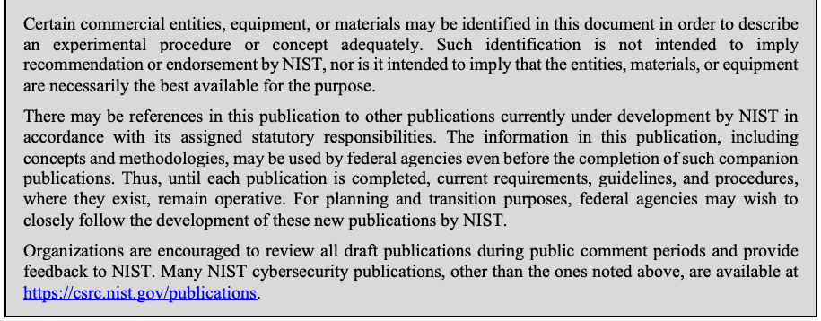
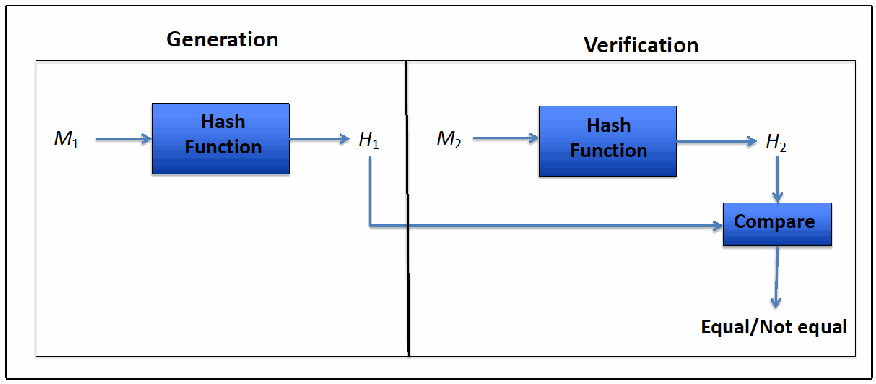
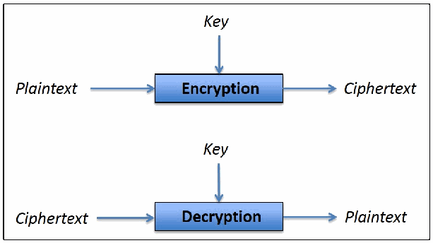
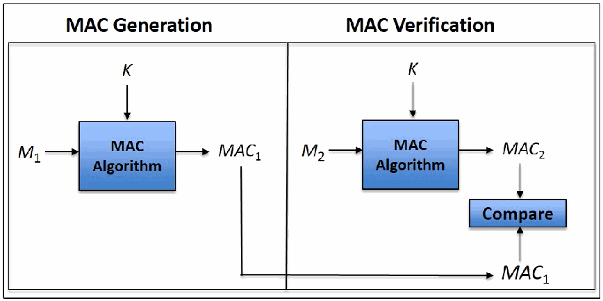
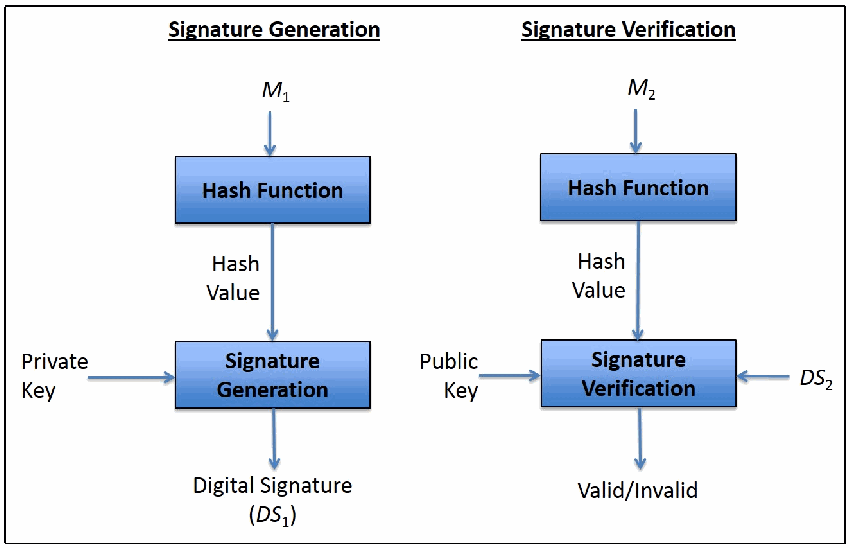
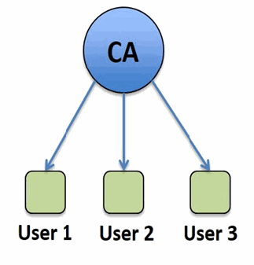
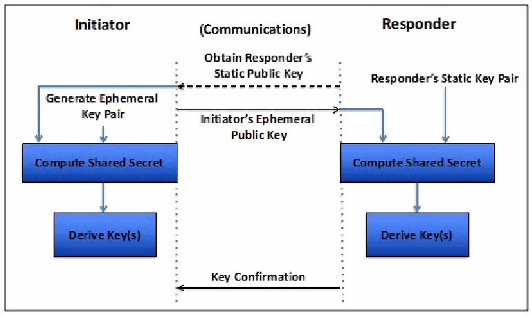
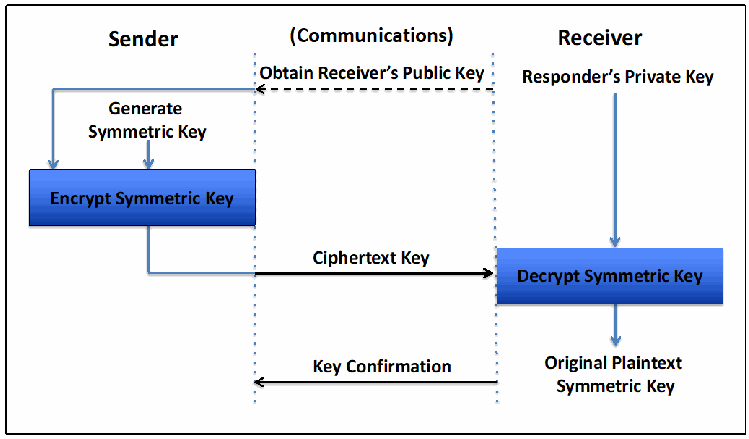

NIST Special Publication · PDF 原文抽出
Guideline for Using Cryptographic Standards in the Federal Government: Cryptographic Mechanisms
連邦政府における暗号標準の使用に関するガイドライン：暗号メカニズム
NIST SP 800-175B Rev. 1（Guideline for Using Cryptographic Standards in the Federal Government: Cryptographic Mechanisms）の英文と日本語訳を段落ごとに並べた閲覧用ページです。連邦政府がNISTの暗号標準を用いて、機微だが非機密のデジタル情報を伝送中および保存中に保護するための暗号方式とサービスを示します。 翻訳は有志による非公式のもので、NIST および米国商務省が作成・承認・推奨したものではありません。要件の確認にはNIST の正式版 PDFを参照してください。
PDF から抽出した原文は原本との照合待ちです。
PDF p.43: 二段組の可能性があるため読み順を原本と照合してください
本文の数式はLaTeXの構造からKaTeXで表示しています。
NIST Special Publication 800-175B
NIST特別刊行物800-175B
Revision 1
改訂1
Guideline for Using
連邦政府における
Cryptographic Standards in the
暗号規格の使用に関する
Federal Government:
指針：
Cryptographic Mechanisms
暗号メカニズム
Elaine Barker
Elaine Barker
This publication is available free of charge from: https://doi.org/10.6028/NIST.SP.800-175Br1
本刊行物は次のURLから無料で入手できます：https://doi.org/10.6028/NIST.SP.800-175Br1
C O M P U T E R S E C U R I T Y
コンピューターセキュリティ
NIST Special Publication 800-175B
NIST特別刊行物800-175B
Revision 1
改訂1
Guideline for Using
連邦政府における
Cryptographic Standards in the
暗号規格の使用に関する
Federal Government:
指針：
Cryptographic Mechanisms
暗号メカニズム
Elaine Barker
Elaine Barker
Computer Security Division Information Technology Laboratory
コンピューターセキュリティ部 情報技術研究所
This publication is available free of charge from: https://doi.org/10.6028/NIST.SP.800-175Br1
本刊行物は次のURLから無料で入手できます：https://doi.org/10.6028/NIST.SP.800-175Br1
March 2020
2020年3月
U.S. Department of Commerce Wilbur L. Ross, Jr., Secretary
米国商務省 ウィルバー・L・ロス・ジュニア長官
National Institute of Standards and Technology
国立標準技術研究所
Walter Copan, Director of NIST and Under Secretary of Commerce for Standards and Technology
ウォルター・コパン、NIST所長兼商務省標準技術担当次官
Authority
権限
This publication has been developed by NIST in accordance with its statutory responsibilities under the Federal Information Security Modernization Act (FISMA) of 2014, 44 U.S.C. § 3551 et seq., Public Law (P.L.) 113-283. NIST is responsible for developing information security standards and guidelines, including minimum requirements for federal information systems, but such standards and guidelines shall not apply to national security systems without the express approval of appropriate federal officials exercising policy authority over such systems. This guideline is consistent with the requirements of the Office of Management and Budget (OMB) Circular A-130.
本刊行物は、2014年連邦情報セキュリティ近代化法（FISMA）、合衆国法典第44編第3551条以下、ならびに公法（P.L.）113-283に基づく法定責任に従ってNISTが作成した。NISTは、連邦情報システムの最低要件を含む情報セキュリティ標準および指針の策定に責任を負う。ただし、国家安全保障システムを所管する連邦当局者が明示的に承認しない限り、これらの標準および指針は国家安全保障システムには適用されない。本指針は、行政管理予算局（OMB）通達A-130の要件に整合している。
Nothing in this publication should be taken to contradict the standards and guidelines made mandatory and binding on federal agencies by the Secretary of Commerce under statutory authority. Nor should these guidelines be interpreted as altering or superseding the existing authorities of the Secretary of Commerce, Director of the OMB, or any other federal official. This publication may be used by nongovernmental organizations on a voluntary basis and is not subject to copyright in the United States. Attribution would, however, be appreciated by NIST.
本刊行物のいかなる内容も、法定権限に基づき商務長官が連邦機関に義務付け、拘束力を持たせた標準および指針と矛盾するものと解釈してはならない。また、本指針は、商務長官、OMB長官または他の連邦当局者の既存の権限を変更または置き換えるものと解釈してはならない。本刊行物は非政府組織も任意で使用でき、米国では著作権の対象ではない。ただし、NISTへの帰属表示が望ましい。
National Institute of Standards and Technology Special Publication 800-175B Revision 1 Natl. Inst. Stand. Technol. Spec. Publ. 800-175B Rev. 1, 91 pages (March 2020) CODEN: NSPUE2
国立標準技術研究所 特別刊行物800-175B 改訂1。Natl. Inst. Stand. Technol. Spec. Publ. 800-175B Rev. 1、91ページ（2020年3月）CODEN: NSPUE2
This publication is available free of charge from: https://doi.org/10.6028/NIST.SP.800-175Br1
本刊行物は次のURLから無料で入手できます：https://doi.org/10.6028/NIST.SP.800-175Br1

抽出したテキスト（原本と未照合・参考）
Certain commercial entities, equipment, or materials may be identified in this document in order to describe an experimental procedure or concept adequately. Such identification is not intended to imply recommendation or endorsement by NIST, nor is it intended to imply that the entities, materials, or equipment are necessarily the best available for the purpose. There may be references in this publication to other publications currently under development by NIST in accordance with its assigned statutory responsibilities. The information in this publication, including concepts and methodologies, may be used by federal agencies even before the completion of such companion publications. Thus, until each publication is completed, current requirements, guidelines, and procedures, where they exist, remain operative. For planning and transition purposes, federal agencies may wish to closely follow the development of these new publications by NIST. Organizations are encouraged to review all draft publications during public comment periods and provide feedback to NIST. Many NIST cybersecurity publications, other than the ones noted above, are available at https://csrc.nist.gov/publications.抽出したテキストの訳（原本と未照合・参考）
実験手順または概念を適切に説明するため、本書では特定の商業主体、機器または材料を特定することがある。このような特定は、NISTによる推奨または保証を意味するものではなく、当該主体、材料または機器が目的に対して入手可能な最良のものであることを示すものでもない。本刊行物には、割り当てられた法定責任に従ってNISTが現在策定中の他の刊行物への参照が含まれる場合がある。これらの刊行物が完成する前であっても、連邦機関は本刊行物の情報（概念および方法論を含む）を利用できる。各刊行物が完成するまでは、既存の要件、指針および手順が引き続き有効である。計画および移行のため、連邦機関はNISTによる新たな刊行物の策定状況を注意深く追跡するとよい。組織は、パブリックコメント期間中にすべての草案を確認し、NISTに意見を提出することが推奨される。上記以外の多くのNISTサイバーセキュリティ刊行物は、https://csrc.nist.gov/publications から入手できる。Comments on this publication may be submitted to: National Institute of Standards and Technology Attn: Computer Security Division, Information Technology Laboratory 100 Bureau Drive (Mail Stop 8930) Gaithersburg, MD 20899-8930 Email: SP800-175@nist.gov
本刊行物への意見は、次の宛先に提出できる：National Institute of Standards and Technology, Attn: Computer Security Division, Information Technology Laboratory, 100 Bureau Drive (Mail Stop 8930), Gaithersburg, MD 20899-8930, Email: SP800-175@nist.gov
All comments are subject to release under the Freedom of Information Act (FOIA).
すべての意見は、情報公開法（FOIA）に基づく公開の対象となる。
Reports on Computer Systems Technology
コンピューターシステム技術に関する報告書
The Information Technology Laboratory (ITL) at the National Institute of Standards and Technology (NIST) promotes the U.S. economy and public welfare by providing technical leadership for the Nation’s measurement and standards infrastructure. ITL develops tests, test methods, reference data, proof of concept implementations, and technical analyses to advance the development and productive use of information technology. ITL’s responsibilities include the development of management, administrative, technical, and physical standards and guidelines for the cost-effective security and privacy of other than national security-related information in federal information systems. The Special Publication 800-series reports on ITL’s research, guidelines, and outreach efforts in information system security, and its collaborative activities with industry, government, and academic organizations.
国立標準技術研究所（NIST）の情報技術研究所（ITL）は、米国の計測および標準インフラに技術的リーダーシップを提供することにより、米国経済と公共の福祉を促進する。ITLは、情報技術の発展と生産的な利用を推進するため、試験、試験方法、参照データ、概念実証実装および技術分析を開発する。ITLの責任には、連邦情報システムにおける国家安全保障関連以外の情報の費用対効果に優れたセキュリティおよびプライバシーを実現するための管理、運用、技術および物理的な標準と指針の策定が含まれる。特別刊行物800シリーズは、情報システムセキュリティに関するITLの研究、指針、普及活動ならびに産業界、政府および学術機関との協力活動を報告する。
Abstract
要旨
This document provides guidance to the Federal Government for using cryptography and NIST’s cryptographic standards to protect sensitive but unclassified digitized information during transmission and while in storage. The cryptographic methods and services to be used are discussed.
本書は、伝送中および保管中の機微な非機密デジタル情報を保護するために、暗号技術およびNISTの暗号規格を使用する連邦政府向けの指針を示す。使用すべき暗号方式およびサービスについて説明する。
Keywords
キーワード
asymmetric-key algorithm; identity authentication; confidentiality; digital signatures; encryption; integrity; key establishment; message authentication; random bit generation; symmetric-key algorithm.
非対称鍵アルゴリズム；識別認証；機密性；デジタル署名；暗号化；完全性；鍵確立；メッセージ認証；ランダムビット生成；対称鍵アルゴリズム。
Acknowledgments
謝辞
The author wishes to thank the authors of SP 800-211 from which this document was derived, Annabelle Lee and William C. Barker, along with those colleagues that reviewed drafts of this document and contributed to its development: Lily Chen, Kerry McKay and Lydia Zieglar (NSA). The author also gratefully acknowledges and appreciates the many comments from the public and private sectors whose thoughtful and constructive comments improved the quality and usefulness of this publication.
著者は、本書の元となったSP 800-211の著者であるAnnabelle LeeおよびWilliam C. Barker、ならびに本書の草案をレビューし、策定に貢献した同僚のLily Chen、Kerry McKay、Lydia Zieglar（NSA）に謝意を表する。また、本刊行物の品質および有用性を高める、公共部門および民間部門から寄せられた多くの熟慮された建設的な意見に対し、著者は深く感謝する。
Patent Disclosure Notice
特許開示に関する通知
NOTICE: The Information Technology Laboratory (ITL) has requested that holders of patent claims whose use may be required for compliance with the guidance or requirements of this publication disclose such patent claims to ITL. However, holders of patents are not obligated to respond to ITL calls for patents and ITL has not undertaken a patent search in order to identify which, if any, patents may apply to this publication.
通知：情報技術研究所（ITL）は、本刊行物の指針または要件に準拠するために使用が必要となる可能性のある特許請求の保有者に対し、当該特許請求をITLに開示するよう求めている。ただし、特許保有者にはITLの特許照会に応答する義務はなく、ITLは本刊行物に適用され得る特許の有無を特定するための特許調査を実施していない。
As of the date of publication and following call(s) for the identification of patent claims whose use may be required for compliance with the guidance or requirements of this publication, no such patent claims have been identified to ITL.
刊行日時点で、本刊行物の指針または要件に準拠するために使用が必要となる可能性のある特許請求の特定を求める照会を行った結果、そのような特許請求はITLに報告されていない。
No representation is made or implied by ITL that licenses are not required to avoid patent infringement in the use of this publication.
本刊行物を使用する際に特許侵害を避けるためのライセンスが不要であると、ITLが表明または示唆するものではない。
Table of Contents
目次
1 Introduction — 1
1 はじめに — 1
1.1 Overview and Purpose — 1
1.1 概要と目的 — 1
1.2 Audience — 2
1.2 対象読者 — 2
1.3 Scope — 2
1.3 適用範囲 — 2
1.4 Background — 2
1.4 背景 — 2
1.5 Terms and Definitions — 3
1.5 用語および定義 — 3
1.6 Acronyms — 11
1.6 略語 — 11
1.7 Document Organization — 13
1.7 文書の構成 — 13
2 Standards and Guidelines — 14
2 標準および指針 — 14
2.1 Benefits of Standards — 14
2.1 標準の利点 — 14
2.2 Federal Information Processing Standards and Special Publications — 15
2.2 連邦情報処理標準および特別刊行物 — 15
2.2.1 The Use of FIPS and SPs — 15
2.2.1 FIPSおよびSPの使用 — 15
2.2.2 NIST Interagency/Internal Reports — 16
2.2.2 NIST省庁間／内部報告書 — 16
2.2.3 FIPS Waivers — 16
2.2.3 FIPSの適用除外 — 16
2.3 Other Standards Organizations — 16
2.3 その他の標準化団体 — 16
2.3.1 American National Standards Institute (ANSI) — 16
2.3.1 米国規格協会（ANSI） — 16
2.3.2 Institute of Electrical and Electronics Engineers (IEEE) Standards Association — 17
2.3.2 電気電子学会（IEEE）標準化協会 — 17
2.3.3 Internet Engineering Task Force (IETF) — 18
2.3.3 インターネット技術タスクフォース（IETF） — 18
2.3.4 International Organization for Standardization (ISO) — 19
2.3.4 国際標準化機構（ISO） — 19
2.3.5 Trusted Computing Group (TCG) — 20
2.3.5 Trusted Computing Group（TCG） — 20
3 Cryptographic Algorithms — 21
3 暗号アルゴリズム — 21
3.1 Cryptographic Hash Functions — 21
3.1 暗号ハッシュ関数 — 21
3.2 Symmetric-Key Algorithms — 22
3.2 対称鍵アルゴリズム — 22
3.2.1 Block Cipher Algorithms — 24
3.2.1 ブロック暗号アルゴリズム — 24
3.2.2 Hash-based Symmetric-key Algorithms — 26
3.2.2 ハッシュベースの対称鍵アルゴリズム — 26
3.3 Asymmetric-Key Algorithms — 26
3.3 非対称鍵アルゴリズム — 26
3.3.1 Digital Signature Algorithms — 28
3.3.1 デジタル署名アルゴリズム — 28
3.3.2 Key-Establishment Schemes — 30
3.3.2 鍵確立方式 — 30
3.4 Algorithm Security Strength — 30
3.4 アルゴリズムのセキュリティ強度 — 30
3.5 Algorithm Lifetime — 31
3.5 アルゴリズムの有効期間 — 31
4 Cryptographic Services — 32
4 暗号サービス — 32
4.1 Data Confidentiality — 32
4.1 データ機密性 — 32
4.2 Data Integrity, Identity Authentication, and Source Authentication — 33
4.2 データ完全性、識別認証および送信元認証 — 33
4.2.1 Hash Functions — 34
4.2.1 ハッシュ関数 — 34
4.2.2 Message Authentication Code Algorithms — 34
4.2.2 メッセージ認証コードアルゴリズム — 34
4.2.3 Digital Signature Algorithms — 36
4.2.3 デジタル署名アルゴリズム — 36
4.3 Combining Confidentiality and Authentication in a Block-Cipher Mode of Operation — 39
4.3 ブロック暗号動作モードにおける機密性と認証の組み合わせ — 39
4.4 Random Bit Generation — 39
4.4 ランダムビット生成 — 39
4.5 Symmetric vs. Asymmetric Cryptography — 40
4.5 対称暗号と非対称暗号の比較 — 40
5 Key Management — 42
5 鍵管理 — 42
5.1 General Key Management Guidance — 42
5.1 鍵管理に関する一般指針 — 42
5.1.1 Recommendation for Key Management — 42
5.1.1 鍵管理に関する推奨事項 — 42
5.1.2 Security Requirements for Cryptographic Modules — 44
5.1.2 暗号モジュールのセキュリティ要件 — 44
5.1.3 Transitions to New Cryptographic Algorithms and Key Lengths — 44
5.1.3 新たな暗号アルゴリズムおよび鍵長への移行 — 44
5.2 Cryptographic Key Management Systems — 45
5.2 暗号鍵管理システム — 45
5.2.1 Key Management Framework — 45
5.2.1 鍵管理フレームワーク — 45
5.2.2 Key Management System Profile — 45
5.2.2 鍵管理システムプロファイル — 45
5.2.3 Public Key Infrastructure — 46
5.2.3 公開鍵基盤 — 46
5.3 Key Establishment — 50
5.3 鍵確立 — 50
5.3.1 Key Generation — 51
5.3.1 鍵生成 — 51
5.3.2 Key Derivation — 51
5.3.2 鍵導出 — 51
5.3.3 Key Agreement — 52
5.3.3 鍵合意 — 52
5.3.4 Key Transport/Key Distribution — 54
5.3.4 鍵転送／鍵配布 — 54
5.3.5 Key Wrapping — 55
5.3.5 鍵ラッピング — 55
5.3.6 Derivation of a Key from a Password — 56
5.3.6 パスワードからの鍵導出 — 56
5.4 Key Management Issues — 56
5.4 鍵管理上の課題 — 56
5.4.1 Manual vs. Automated Key Establishment — 56
5.4.1 手動と自動の鍵確立 — 56
5.4.2 Selecting and Operating a CKMS — 56
5.4.2 暗号鍵管理システム（CKMS）の選択および運用 — 56
5.4.3 Storing and Protecting Keys — 56
5.4.3 鍵の保管および保護 — 56
5.4.4 Cryptoperiods — 57
5.4.4 暗号期間 — 57
5.4.5 Use Validated Algorithms and Cryptographic Modules — 57
5.4.5 検証済みアルゴリズムおよび暗号モジュールの使用 — 57
5.4.6 Control of Keying Material — 58
5.4.6 鍵素材の管理 — 58
5.4.7 Compromises — 58
5.4.7 危殆化 — 58
5.4.8 Accountability and Inventory Management — 59
5.4.8 説明責任およびインベントリ管理 — 59
5.4.9 Auditing — 59
5.4.9 監査 — 59
6 Other Issues — 60
6 その他の課題 — 60
6.1 Required Security Strength — 60
6.1 必要なセキュリティ強度 — 60
6.2 Interoperability — 60
6.2 相互運用性 — 60
6.3 When Algorithms are No Longer Approved — 61
6.3 アルゴリズムが承認されなくなった場合 — 61
References — 62
参考文献 — 62
NIST Publications — 62
NIST刊行物 — 62
Non-NIST Publications — 75
NIST以外の刊行物 — 75
Appendix A: Revisions — 81
付録A：改訂履歴 — 81
List of Figures
図一覧
Figure 1: Hash Function Generation and Verification — 21
図1：ハッシュ関数の生成と検証 — 21
Figure 2: Encryption and Decryption — 32
図2：暗号化と復号 — 32
Figure 3: Message Authentication and Verification — 35
図3：メッセージ認証と検証 — 35
Figure 4: Digital Signature Generation and Verification — 37
図4：デジタル署名の生成と検証 — 37
Figure 5: Basic Certificate Verification Example — 49
図5：基本的な証明書検証の例 — 49
Figure 6: Key Agreement Example — 53
図6：鍵合意の例 — 53
Figure 7: SP 800-56B Key Transport Example — 55
図7：SP 800-56Bの鍵転送の例 — 55
1 Introduction
1 はじめに
1.1 Overview and Purpose
1.1 概要と目的
In today's environment of increasingly open and interconnected systems, networks, and mobile devices, network and data security are essential for the optimal safe use of information technology. Cryptographic techniques should be considered for the protection of data that is sensitive, has a high value, or is vulnerable to unauthorized disclosure or undetected modification during transmission or while in storage. Cryptography is a branch of mathematics that is based on the transformation of data and can be used to provide several security services: confidentiality, identity authentication, data integrity authentication, source authentication, and support for non-repudiation.
今日の、システム、ネットワーク、モバイルデバイスの開放性と相互接続性がますます高まる環境では、情報技術を最適かつ安全に利用するためにネットワークとデータのセキュリティが不可欠である。機密性の高いデータ、価値の高いデータ、または送信中もしくは保存中に不正開示や検知されない改変を受けるおそれのあるデータを保護するため、暗号技術を検討すべきである。暗号技術はデータ変換に基づく数学の一分野であり、機密性、識別情報認証、データ完全性認証、送信元認証、および否認防止の支援など、複数のセキュリティサービスを提供するために使用できる。
•Confidentiality is the property whereby sensitive information is not disclosed to unauthorized entities. A confidentiality service can be provided by a cryptographic process called encryption.
•機密性とは、機密情報が許可されていないエンティティに開示されない性質である。機密性サービスは、暗号化と呼ばれる暗号処理によって提供できる。
•Data integrity authentication (also called integrity verification) is a service that is used to determine that data has not been altered in an unauthorized manner since it was created, transmitted, or stored.
•データ完全性認証（完全性検証とも呼ばれる）は、データが作成、送信、または保存されてから、不正な方法で改変されていないことを判定するために用いるサービスである。
•Identity authentication is used to provide assurance of the identity of an entity interacting with a system.
•識別認証は、システムとやり取りするエンティティの識別情報を保証するために用いられる。
•Source authentication is used to provide assurance of the source of information to a receiving entity (i.e., the identity of the source). A special case of source authentication is called non-repudiation, whereby support for assurance of the source of the information is provided to a third party.
•送信元認証は、受信側エンティティに対して情報の送信元（すなわち送信元の識別情報）を保証するために用いられる。送信元認証の特殊な場合を否認防止といい、情報の送信元の保証に対する裏付けを第三者に提供する。
This document is one part in a series of documents intended to provide guidance to the Federal Government for using cryptography to protect its sensitive but unclassified digitized information during transmission and while in storage; hereafter, the shortened term “sensitive” will be used to refer to this class of information. Other sectors are invited to use this guidance on a voluntary basis. The following are the initial publications in the Special Publication (SP) 800-175 series. Additional documents may be provided in the future.
本書は、連邦政府が機密扱いではないが機微なデジタル情報を送信中および保存中に保護するために暗号技術を使用する際の指針を示す一連の文書の一部である。以下では、この種の情報を指す短縮語として「機微情報」を用いる。他の分野もこの指針を自主的に利用できる。Special Publication（SP）800-175シリーズの初期刊行物を以下に示す。今後、追加文書が提供される場合がある。
•SP 800-175A2 provides guidance on the determination of requirements for using cryptography. It includes the laws and regulations for the protection of the Federal Government’s sensitive information, guidance for the conduct of risk assessments to determine what needs to be protected and how best to protect that information, and a discussion of the required security-related documents (e.g., various policy and practice documents).
•SP 800-175A2は、暗号技術を使用するための要件の決定に関する指針を示す。連邦政府の機微情報を保護するための法律および規制、何を保護すべきか、またその情報をどのように保護するのが最適かを決定するリスク評価の実施に関する指針、ならびに必要なセキュリティ関連文書（各種の方針文書および実施文書など）についての説明を含む。
•SP 800-175B (this document) discusses the cryptographic methods and services available for the protection of the Federal Government’s sensitive information and provides an overview of NIST’s cryptographic standards.
•SP 800-175B（本書）は、連邦政府の機微情報を保護するために利用可能な暗号方式およびサービスを扱い、NISTの暗号標準の概要を示す。
1.2 Audience
1.2 対象読者
This document is intended for federal employees and others who are responsible for providing and using cryptographic services to meet identified security requirements. This document might be used by
本書は、特定されたセキュリティ要件を満たすために暗号サービスを提供および利用する責任を負う連邦職員その他の者を対象とする。本書は、次の者が利用する場合がある。
•A program manager responsible for selecting and integrating cryptographic mechanisms into a system;
•システムに暗号メカニズムを選択して統合する責任を負うプログラムマネージャー。
•A technical specialist who has been requested to select one or more cryptographic methods/techniques to meet a specified requirement;
•特定の要件を満たすために1つ以上の暗号方式／技法を選択するよう依頼された技術専門家。
•A procurement specialist developing a solicitation for a system, network, or service that will require cryptographic methods to perform security functionality; and
•セキュリティ機能を実行するために暗号方式を必要とするシステム、ネットワーク、またはサービスの調達要求書を作成する調達専門家；および
•Users of cryptographic services.
•暗号サービスの利用者。
The goal is to provide these individuals with sufficient information to allow them to make informed decisions about the cryptographic methods that will meet their specific needs to protect the confidentiality and integrity of data that is transmitted and/or stored in a system or network, as well as to obtain assurance of its authenticity. This document is not intended to provide information on the federal procurement process or to provide a technical discussion on the mathematics of cryptography and cryptographic algorithms.
本書の目的は、システムまたはネットワークで送信および／または保存されるデータの機密性と完全性を保護するとともに、その真正性の保証を得るために、それぞれのニーズに合った暗号方式について十分な情報に基づいて判断できるよう、これらの人々に必要な情報を提供することである。本書は、連邦政府の調達プロセスに関する情報や、暗号技術および暗号アルゴリズムの数学について技術的に論じることを目的としていない。
1.3 Scope
1.3 適用範囲
This document limits its scope of cryptographic methods to those that conform to Federal Information Processing Standards (FIPS) and NIST Special Publications (SPs), which are collectively discussed as NIST “standards” in this document. While the Federal Government is required to use these standards when applicable, industry, national, and international standards bodies have also adopted these cryptographic methods. This document provides information on selecting and using cryptography in new or existing systems.
本書で扱う暗号方式の範囲は、Federal Information Processing Standards（FIPS）およびNIST Special Publications（SP）に適合するものに限定する。本書ではこれらを総称してNIST「標準」と呼ぶ。連邦政府は該当する場合にこれらの標準を使用する義務がある一方、産業界、国内および国際的な標準化団体もこれらの暗号方式を採用している。本書は、新規または既存のシステムにおける暗号技術の選択および使用に関する情報を提供する。
1.4 Background
1.4 背景
The use of cryptography relies upon two basic components: an algorithm and a key. The algorithm is a mathematical function, and the key is a parameter used during the cryptographic process. The algorithm and key are used together to apply cryptographic protection to data (e.g., to encrypt the data or to generate a digital signature) and to remove or check the protection (e.g., to decrypt the encrypted data or to verify the digital signature). The security of the cryptographic protection relies on the secrecy of the key. Security should not rely on the secrecy of the algorithm as the algorithm specification may be publicly available.
暗号技術の使用は、アルゴリズムと鍵という2つの基本要素に依存する。アルゴリズムは数学的関数であり、鍵は暗号処理中に使用されるパラメータである。アルゴリズムと鍵を組み合わせてデータに暗号保護を適用し（例えば、データの暗号化やデジタル署名の生成）、その保護を解除または確認する（例えば、暗号化データの復号やデジタル署名の検証）。暗号保護のセキュリティは鍵の秘密性に依存する。アルゴリズムの仕様は公開されている可能性があるため、セキュリティをアルゴリズムの秘密性に依存させるべきではない。
In order to use a cryptographic algorithm, any required cryptographic keys must be “in place” (i.e., keys must be established for and/or between parties that intend to use cryptography). Keys may be established either manually (e.g., via a trusted courier) or using an automated method. However, when an automated method is used, source authentication is required for the participating entities that relies on an established trust infrastructure, such as a Public Key Infrastructure (PKI) or a manually distributed authentication key. In general, keys used for one purpose (e.g., the generation of digital signatures) must not be used for another purpose (e.g., key establishment) because the use of the same key for two different cryptographic processes may weaken the security provided by one or both of the processes. See Section 5.2 in SP 800-57, Part 13 for further information.
暗号アルゴリズムを使用するには、必要な暗号鍵が「準備済み」でなければならない（すなわち、暗号技術を使用する当事者のために、または当事者間で鍵を確立しておく必要がある）。鍵は手動（例えば、信頼できる配達人を介する方法）または自動化された方法で確立できる。ただし、自動化された方法を使用する場合は、参加エンティティについて、公開鍵基盤（PKI）や手動で配布された認証鍵など、確立済みの信頼基盤に依拠した送信元認証が必要である。一般に、ある目的（例えばデジタル署名の生成）に使用する鍵を別の目的（例えば鍵確立）に使用してはならない。同じ鍵を異なる2つの暗号処理に使用すると、一方または両方の処理によるセキュリティが弱まる可能性がある。詳細はSP 800-57 Part 1³のセクション5.2を参照。
1.5 Terms and Definitions
1.5 用語および定義
The following terms and definitions are used in this document. In general, the definitions are drawn from FIPS and NIST Special Publications.
本書では以下の用語および定義を使用する。一般に、定義はFIPSおよびNIST Special Publicationsから採用している。
Algorithm
アルゴリズム
A clearly specified mathematical process for computation; a set of rules that, if followed, will give a prescribed result.
計算のために明確に規定された数学的手順。従えば所定の結果が得られる一連の規則。
Approved
承認済み
FIPS-Approved and/or NIST-recommended. An algorithm or technique that is either: 1) specified in a FIPS or NIST Recommendation or 2) specified elsewhere and adopted by reference in a FIPS or NIST Recommendation.
FIPS承認済みおよび／またはNIST推奨。次のいずれかに該当するアルゴリズムまたは技法：1) FIPSまたはNIST勧告に規定されている、または2) 他で規定され、FIPSまたはNIST勧告に参照によって採用されている。
Asymmetric-key See public-key algorithm. algorithm
非対称鍵アルゴリズム。公開鍵アルゴリズムを参照。
Authentication
認証
A process that provides assurance of the source and integrity of information that is communicated or stored or the identity of an entity interacting with a system. Note that in common practice, the term "authentication" is used to mean either source or identity authentication only. This document will differentiate the multiple uses of the word by the terms source authentication, identity authentication, or integrity authentication, where appropriate.
通信または保存される情報の送信元と完全性、またはシステムとやり取りするエンティティの識別情報を保証するプロセス。一般的な慣行では、「認証」は送信元認証または識別情報認証のみを意味するものとして用いられることに注意する。本書では、適切な場合、「送信元認証」「識別情報認証」または「完全性認証」という用語を用いて、複数の用法を区別する。
Bit string
ビット列
An ordered sequence of 0’s and 1’s.
0と1の順序付けられた列。
Block cipher
ブロック暗号
A family of functions and their inverse functions that is
関数およびその逆関数の集合であり、
algorithm
アルゴリズム
parameterized by cryptographic keys; the functions map bit strings of a fixed length to bit strings of the same length.
暗号鍵によってパラメータ化される。これらの関数は、固定長のビット列を同じ長さのビット列に写像する。
Certificate (or public A set of data that uniquely identifies an entity, contains the key certificate)
証明書（または公開鍵証明書） あるエンティティを一意に識別するデータの集合であり、
entity’s public key and possibly other information, and is digitally signed by a trusted party, thereby binding the public key to the entity identified in the certificate. Additional information in the certificate could specify how the key is used and the validity period of the certificate.
そのエンティティの公開鍵と、場合によってはその他の情報を含み、信頼される当事者によってデジタル署名されたもの。これにより、公開鍵が証明書で識別されるエンティティに結び付けられる。証明書内の追加情報により、鍵の使用方法や証明書の有効期間を指定できる。
Certificate
証明書
A list of revoked but unexpired certificates issued by a
失効済みだが有効期限内の証明書のうち、ある
Revocation List
失効リスト
Certification Authority.
認証局が発行したものの一覧。
(CRL)
(CRL)
Certification
認証局
The entity in a public key infrastructure (PKI) that is responsible
公開鍵基盤（PKI）において、次のことに責任を負うエンティティ：
Authority (CA)
（CA）
for issuing certificates to certificate subjects and exacting compliance to a PKI policy.
証明書主体への証明書の発行、およびPKI方針への厳格な準拠の要求。
Ciphertext
暗号文
Data in its encrypted form.
暗号化された形式のデータ。
Compromise
侵害
The unauthorized disclosure, modification, substitution, or use of sensitive data (e.g., a secret key, private key, or secret metadata).
機密データ（例：シークレット鍵、プライベート鍵、または秘密のメタデータ）の不正な開示、改変、置換、または使用。
Confidentiality
機密性
The property that sensitive information is not disclosed to unauthorized entities (i.e., the secrecy of key information is maintained).
機密情報が許可されていないエンティティに開示されない性質（すなわち、鍵情報の秘密性が維持されること）。
Cross-certify
相互認証する
The establishment of a trust relationship between two Certification Authorities (CAs) through the signing of each other's public key in certificates; referred to as a “cross-certificate.”
互いの公開鍵に証明書で署名することにより、2つの認証局（CA）間に信頼関係を確立すること。これを「相互認証証明書」と呼ぶ。
Cryptographic
暗号
未レビュー訳A well-defined computational procedure that takes variable
明確に定義された計算手順であって、可変の
algorithm
アルゴリズム
inputs, including a cryptographic key (if applicable), and produces an output.
入力（該当する場合は暗号鍵を含む）を受け取り、出力を生成する。
Cryptographic
暗号
An explicitly defined continuous perimeter that establishes the physical bounds of a cryptographic module and contains all the
明示的に定義された連続する境界であり、暗号モジュールの物理的境界を定めるとともに、すべての
boundary
境界
hardware, software, and/or firmware components of a cryptographic module.
暗号モジュールのハードウェア、ソフトウェア、および／またはファームウェアの構成要素を含む。
Cryptographic
暗号学的
A mathematical value created using a cryptographic algorithm
暗号アルゴリズムを用いて作成される数学的な値であって、
checksum
チェックサム
that is assigned to data and later used to test the data to verify that the data has not changed.
データに割り当てられ、後にデータが変更されていないことを検査するために使用される。
Cryptographic hash A function that maps a bit string of arbitrary length to a fixed-function
暗号学的ハッシュ関数 — 任意長のビット列を固定長の
length bit string. Approved hash functions satisfy the following properties:
ビット列に写像する関数。承認済みハッシュ関数は、次の性質を満たす。
1.One-way – It is computationally infeasible to find any input that maps to any pre-specified output.
1.一方向性 — 任意の事前指定された出力に写像される入力を見つけることは、計算上実行不可能である。
2.Collision resistant – It is computationally infeasible to find any two distinct inputs that map to the same output.
2.衝突耐性 — 同じ出力に写像される相異なる2つの入力を見つけることは、計算上実行不可能である。
Cryptographic key A parameter used in conjunction with a cryptographic algorithm
暗号鍵 — 暗号アルゴリズムと組み合わせて用いられるパラメータであって、
that determines its operation in such a way that an entity with knowledge of the key can reproduce or reverse the operation while an entity without knowledge of the key cannot. Examples include
その動作を決定し、鍵を知るエンティティはその動作を再現または逆転できるが、鍵を知らないエンティティにはできないようにするもの。例として次のものがある：
1.The transformation of plaintext data into ciphertext data,
1.平文データを暗号文データに変換すること。
2.The transformation of ciphertext data into plaintext data,
2.暗号文データを平文データに変換すること。
3.The computation of a digital signature from data,
3.データからデジタル署名を計算すること。
4.The verification of a digital signature,
4.デジタル署名を検証すること。
5.The computation of a message authentication code (MAC) from data,
5.データからメッセージ認証コード（MAC）を計算すること。
6.The verification of a MAC received with data,
6.データとともに受信したMACを検証すること。
7.The computation of a shared secret that is used to derive keying material.
7.鍵素材の導出に用いる共有秘密を計算すること。
Cryptographic
暗号
The set of hardware, software, and/or firmware that implements
ハードウェア、ソフトウェア、および／またはファームウェアの集合であって、
module
モジュール
approved security functions (including cryptographic algorithms and key generation) and is contained within a cryptographic boundary.
暗号アルゴリズムおよび鍵生成を含む承認済みセキュリティ機能を実装し、暗号境界内に含まれるもの。
Cryptographic
暗号
A low-level cryptographic algorithm used as a basic building
低レベルの暗号アルゴリズムであり、基本的な
primitive
プリミティブ
block for higher-level cryptographic algorithms.
構成要素として上位レベルの暗号アルゴリズムに用いられる。
Cryptography
暗号技術
The discipline that embodies the principles, means, and methods for providing information security, including confidentiality, data integrity, source authentication, and non-repudiation.
機密性、データ完全性、送信元認証、および否認防止を含む情報セキュリティを提供する原則、手段および方法を包含する学問分野。
The time span during which a specific key is authorized for use
特定の鍵の使用が許可される期間、
Cryptoperiod
暗号期間
or in which the keys for a given system may remain in effect.
または特定のシステムの鍵が有効であり続ける期間。
Data integrity
データ完全性
A property whereby data has not been altered in an unauthorized manner since it was created, transmitted, or stored.
データが作成、送信、または保存されてから、不正な方法で改変されていないという性質。
Data integrity
データ完全性
The process of determining the integrity of the data; also called
データの完全性を判定するプロセス。次のようにも呼ばれる。
authentication
認証
integrity authentication or integrity verification.
完全性認証または完全性検証。
Decryption
復号
The process of changing ciphertext into plaintext using a cryptographic algorithm and key.
暗号アルゴリズムおよび鍵を用いて暗号文を平文に変換するプロセス。
Digital signature The result of a cryptographic transformation of data that, when properly implemented, provides the services of
デジタル署名 — データの暗号変換の結果であり、適切に実装されると、次のサービスを提供する。
1.Source authentication,
1.送信元認証、
2.Data integrity, and
2.データ完全性、および
3.Support for signer non-repudiation.
3.署名者の否認防止の支援。
Digital Signature A public-key algorithm that is used for the generation and Algorithm (DSA) verification of digital signatures.
デジタル署名アルゴリズム（DSA） — デジタル署名の生成および検証に用いる公開鍵アルゴリズム。
Domain parameters The parameters used with a cryptographic algorithm that are common to a domain of users.
ドメインパラメータ — ユーザーのドメインに共通する、暗号アルゴリズムとともに使用されるパラメータ。
Elliptic Curve Digital A digital signature algorithm that is an analog of DSA using Signature Algorithm elliptic curves. (ECDSA)
楕円曲線デジタル署名アルゴリズム（ECDSA） — 楕円曲線を用いるDSAの類似方式であるデジタル署名アルゴリズム。
Encryption
暗号化
The process of changing plaintext into ciphertext using a cryptographic algorithm for the purpose of security or privacy.
セキュリティまたはプライバシーを目的として、暗号アルゴリズムを用いて平文を暗号文に変換するプロセス。
Entity
エンティティ
An individual (person), organization, device, or process.
個人（人）、組織、デバイス、またはプロセス。
Ephemeral key pair A short-term key pair used with a public-key (asymmetric-key)
一時的鍵ペア — 短期間の鍵ペアで、公開鍵（非対称鍵）
algorithm that is generated when needed; the public key of an ephemeral key pair is not provided in a public key certificate, unlike static public keys which are often included in a certificate.
アルゴリズムで使用され、必要に応じて生成される。一時的鍵ペアの公開鍵は公開鍵証明書に含まれない。これに対し、静的公開鍵は証明書に含まれることが多い。
Function
関数
Used interchangeably with algorithm in this document.
この文書ではアルゴリズムと同義で用いる。
Hash function
ハッシュ関数
See cryptographic hash function.
暗号学的ハッシュ関数を参照。
Hash value
ハッシュ値
The result of applying a hash function to information; also called a message digest.
情報にハッシュ関数を適用した結果。メッセージダイジェストともいう。
Identity
識別
The process of providing assurance about the identity of an
識別情報について保証を提供するプロセスであり、その対象は
authentication
認証
entity interacting with a system; also see Source authentication.
システムとやり取りするエンティティである。送信元認証も参照。
Initialization Vector A vector used in defining the starting point of a cryptographic (IV)
初期化ベクトル（IV） — 暗号
process.
処理の開始点を定義するために用いるベクトル。
Integrity
完全性
The property that data has not been modified or deleted in an unauthorized and undetected manner.
データが不正かつ検知されない方法で変更または削除されていないという性質。
Integrity
完全性
The process of determining the integrity of the data; also called
データの完全性を判定するプロセス。別名
authentication
認証
data integrity authentication.
データ完全性認証。
(integrity verification)
（完全性検証）
Interoperability
相互運用性
The ability of one entity to communicate with another entity.
あるエンティティが別のエンティティと通信できる能力。
Key
鍵
See cryptographic key.
暗号鍵を参照。
Key agreement
鍵共有
A (pair-wise) key-establishment procedure where secret keying material is generated from information contributed by two participants so that no party can predetermine the value of the secret keying material independently from the contributions of the other party. Contrast with key-transport.
秘密の鍵素材を二者の寄与情報から生成する（ペア単位の）鍵確立手順。一方の当事者が他方の寄与とは独立して秘密の鍵素材の値を事前決定することはできない。鍵転送と対比。
Key confirmation A procedure used to provide assurance to one party that another
鍵確認 — 一方の当事者に対して、別の
party actually possesses the same keying material and/or shared secret.
当事者が同じ鍵素材および／または共有秘密を実際に保有していることを保証するために用いる手順。
Key derivation
鍵導出
The process by which keying material is derived from either a pre-shared key or a shared secret produced during a key-agreement scheme along with other information.
事前共有鍵、または鍵共有方式で生成された共有秘密とその他の情報から鍵素材を導出するプロセス。
Key establishment The procedure that results in keying material that is shared
鍵確立 — 鍵素材が共有される結果となる手順で、
among different entities.
その共有は異なるエンティティ間で行われる。
Key information Information about a key that includes the keying material and associated metadata relating to that key.
鍵情報 — 鍵素材およびその鍵に関連するメタデータを含む、鍵についての情報。
Key management The activities involving the handling of cryptographic keys and
鍵管理 — 暗号鍵および
other related security parameters (e.g., IVs and counters) during the entire life cycle of the keys, including their generation, storage, establishment, entry, output, use, and destruction.
その他の関連するセキュリティパラメーター（例：IV、カウンター）を、鍵の生成、保管、確立、入力、出力、使用、破棄を含む鍵のライフサイクル全体にわたって取り扱う活動。
Key pair
鍵ペア
A public key and its corresponding private key; a key pair is used with a public-key (asymmetric-key) algorithm.
公開鍵とそれに対応する秘密鍵。鍵ペアは公開鍵（非対称鍵）アルゴリズムで使用する。
Key transport
鍵転送
A key-establishment procedure whereby one party (the sender) selects a value for the secret keying material and then securely distributes that value to another party (the receiver). Contrast with key agreement.
一方の当事者（送信者）が秘密の鍵素材の値を選択し、その値を別の当事者（受信者）に安全に配布する鍵確立手順。鍵共有と対比。
A method of cryptographically protecting the confidentiality and
鍵ラッピング
未レビュー訳Key wrapping
対称鍵アルゴリズムを用いて鍵の機密性および完全性を暗号学的に保護する方法。
未レビュー訳integrity of keys using a symmetric-key algorithm.
鍵ラッピング鍵
未レビュー訳Key-wrapping key A symmetric key used to provide confidentiality and integrity
鍵ラッピング鍵 — 他の鍵の機密性および完全性を保護するために用いる
protection for other keys.
対称鍵。
Keying material
鍵素材
A cryptographic key and other parameters (e.g., IVs or domain parameters) used with a cryptographic algorithm. When keying material is derived as specified in SP 800-56C4 and SP 800-108:5 Data represented as a bit string such that any non-overlapping segments of the string with the required lengths can be used as secret keys, secret initialization vectors, and other secret parameters.
暗号アルゴリズムとともに用いる暗号鍵およびその他のパラメーター（例：IVまたはドメインパラメーター）。SP 800-56C⁴およびSP 800-108⁵に規定する方法で鍵素材を導出する場合：必要な長さを持つ重複しない部分列をシークレット鍵、秘密初期化ベクトル、その他の秘密パラメーターとして使用できるようにビット列で表現したデータ。
Keying relationship, The state existing between two entities such that they share at cryptographic least one cryptographic key.
暗号鍵関係 — 2つのエンティティ間に存在し、それらが少なくとも1つの暗号鍵を共有している状態。
Message
メッセージ
A cryptographic checksum on data that uses an approved
データに対する暗号学的チェックサムで、承認された
Authentication Code security function and a symmetric key to detect both accidental (MAC) and intentional modifications of data.
認証コード（MAC） — セキュリティ機能と対称鍵を用いて、データの偶発的な改変と意図的な改変の両方を検出するもの。
Message digest
メッセージダイジェスト
See hash value.
ハッシュ値を参照。
Metadata
メタデータ
The information associated with a key that describes its specific characteristics, constraints, acceptable uses, ownership, etc.; sometimes called the key's attributes.
鍵の特性、制約、許容される用途、所有権などを記述する、鍵に関連付けられた情報。鍵の属性と呼ばれることもある。
Mode of operation An algorithm that uses a block cipher algorithm as a
動作モード — ブロック暗号アルゴリズムを
cryptographic primitive to provide a cryptographic service, such as confidentiality or authentication.
暗号プリミティブとして用い、機密性や認証などの暗号サービスを提供するアルゴリズム。
NIST standard
NIST規格
Federal Information Processing Standard (FIPS) or Special Publication (SP).
連邦情報処理規格（FIPS）または特別刊行物（SP）。
Non-repudiation A service using a digital signature that is used to support a
否認防止 — デジタル署名を用いるサービスであり、
determination of whether a message was actually signed by a given entity.
メッセージが所定のエンティティによって実際に署名されたかどうかの判定を支援するために用いる。
Owner of a certificate The entity that is responsible for managing the certificate,
Owner of a certificate: 証明書を管理する責任を負うエンティティであり、
including requesting, replacing, and revoking the certificate if and when required. The certificate owner is not necessarily the subject entity associated with the public key in the certificate (i.e., the key pair owner).
必要となった場合に、証明書の要求、交換、失効を行うことを含む。証明書の所有者は、証明書内の公開鍵に関連付けられた主体エンティティ（すなわち鍵ペアの所有者）とは限らない。
Owner of a key or One or more entities that are authorized to use a symmetric key key pair or the private key of a key pair.
Owner of a key or key pair: 対称鍵または鍵ペアの秘密鍵の使用を許可された1つ以上のエンティティ。
Plaintext
平文
Data that has not been encrypted; intelligible data that has meaning and can be understood without the application of decryption.
暗号化されていないデータ。復号を行わなくても意味があり、理解できるデータ。
Pre-shared key
事前共有鍵
A secret key that has previously been established between the parties who are authorized to use it by means of some secure method (e.g., using a secure manual-distribution process or automated key-establishment scheme).
安全な手段（例: 安全な手動配布プロセスまたは自動鍵確立方式）によって、使用を許可された当事者間であらかじめ確立された秘密鍵。
Primitive
プリミティブ
See cryptographic primitive.
暗号プリミティブを参照。
Private key
秘密鍵
A cryptographic key used with a public key cryptographic algorithm that is uniquely associated with an entity and is not made public. In an asymmetric (public) key cryptosystem, the private key is associated with a public key. Depending on the algorithm, the private key may be used to:
公開鍵暗号アルゴリズムで使用される暗号鍵で、エンティティに一意に関連付けられ、公開されないもの。非対称（公開鍵）暗号システムでは、秘密鍵は公開鍵と対をなす。アルゴリズムに応じて、秘密鍵は次の用途に使用されることがある:
1.Compute the corresponding public key,
1.対応する公開鍵を計算する;
2.Compute a digital signature that may be verified by the corresponding public key,
2.対応する公開鍵で検証できるデジタル署名を計算する;
3.Decrypt data that was encrypted by the corresponding public key, or
3.対応する公開鍵で暗号化されたデータを復号する; または
4.Compute a shared secret during a key-agreement process.
4.鍵共有プロセス中に共有秘密を計算する。
Protocol
プロトコル
A set of rules used by two or more communicating entities that describe the message order and data structures for information exchanged between the entities.
通信を行う2つ以上のエンティティ間で交換されるメッセージの順序とデータ構造を記述する一連の規則。
Public key
公開鍵
A cryptographic key used with a public-key (asymmetric-key) algorithm that is uniquely associated with an entity and that may be made public. In an asymmetric (public) key cryptosystem, the public key is associated with a private key. The public key may be known by anyone and, depending on the algorithm, may be used to
公開鍵（非対称鍵）アルゴリズムで使用される暗号鍵で、エンティティに一意に関連付けられ、公開されることがあるもの。非対称（公開鍵）暗号システムでは、公開鍵は秘密鍵と対をなす。公開鍵は誰でも知ることができ、アルゴリズムに応じて次の用途に使用されることがある
1.Verify a digital signature that is signed by the corresponding private key,
1.対応する秘密鍵で署名されたデジタル署名を検証する;
2.Encrypt data that can be decrypted by the corresponding private key, or
2.対応する秘密鍵で復号できるデータを暗号化する; または
3.Compute a shared secret during a key-agreement process.
3.鍵共有プロセス中に共有秘密を計算する。
Public key
公開鍵
A cryptographic algorithm that uses two related keys: a public
暗号アルゴリズムであって、2つの関連する鍵、すなわち公開
(asymmetric-key) key and a private key. The two keys have the property that cryptographic
（非対称鍵）鍵と秘密鍵。2つの鍵には、暗号学的に
determining the private key from the public key is
公開鍵から秘密鍵を導出することが
algorithm
algorithm
computationally infeasible.
計算上実行不可能である。
Public Key
Public Key
A framework that is established to issue, maintain, and revoke
発行、維持、失効させるために確立された枠組み
Infrastructure (PKI) public key certificates.
Infrastructure (PKI) 公開鍵証明書。
Random bit generator A device or algorithm that outputs a sequence of bits that appears (RBG) to be statistically independent and unbiased.
Random bit generator (RBG): 統計的に独立で偏りがないように見えるビット列を出力する装置またはアルゴリズム。
Relying party
Relying party
An entity that relies on the certificate and the CA that issued the certificate to verify the identity of the certificate owner and the validity of the public key, associated algorithms, and any relevant parameters in the certificate, as well as the owner’s possession of the corresponding private key.
証明書および当該証明書を発行した CA に依拠して、証明書の所有者の身元、証明書中の公開鍵・関連アルゴリズム・関連パラメータの有効性、ならびに所有者が対応する秘密鍵を保有していることを検証するエンティティ。
RSA — A public-key algorithm that is used for key establishment and the generation and verification of digital signatures.
RSA — 鍵確立、ならびにデジタル署名の生成および検証に用いられる公開鍵アルゴリズム。
Scheme — A set of unambiguously specified transformations that provide a (cryptographic) service (e.g., key establishment) when properly implemented and maintained. A scheme is a higher-level construct than a primitive and a lower-level construct than a protocol.
Scheme — 適切に実装および維持された場合に（暗号）サービス（例：鍵確立）を提供する、曖昧さなく規定された変換の集合。スキームは、プリミティブよりも上位で、プロトコルよりも下位の構成要素である。
Secret key — A single cryptographic key that is used with a symmetric (secret key) cryptographic algorithm and is not made public (i.e., the key is kept secret). A secret key is also called a symmetric key. The use of the term “secret” in this context does not imply a classification level, but rather implies the need to protect the key from disclosure. Compare with a private key, which is used with a public-key (asymmetric-key) algorithm.
Secret key — 対称（秘密鍵）暗号アルゴリズムとともに用いられ、公開されない（すなわち秘密に保たれる）単一の暗号鍵。秘密鍵は対称鍵とも呼ばれる。この文脈での「秘密（secret）」という用語の使用は、機密区分のレベルを意味するものではなく、鍵を開示から保護する必要があることを意味する。公開鍵（非対称鍵）アルゴリズムとともに用いられるプライベート鍵と比較されたい。
Secret-key (symmetric) cryptographic algorithm — See symmetric (secret key) algorithm.
Secret-key (symmetric) cryptographic algorithm — symmetric (secret key) algorithm を参照。
Sensitive (information) — Sensitive but unclassified information.
Sensitive (information) — 機微だが機密指定されていない情報。
Security function — Cryptographic algorithms, together with modes of operation (if appropriate); for example, block cipher algorithms, digital signature algorithms, asymmetric key-establishment algorithms, message authentication codes, hash functions, or random bit generators. See FIPS 140.6
Security function — 暗号アルゴリズム（必要に応じて利用モードを含む）。例えば、ブロック暗号アルゴリズム、デジタル署名アルゴリズム、非対称鍵確立アルゴリズム、メッセージ認証コード、ハッシュ関数、乱数ビット生成器などである。FIPS 140.6 を参照。
Security strength — A number associated with the amount of work (i.e., the number of operations) that is required to break a cryptographic algorithm or system.
Security strength — 暗号アルゴリズムまたは暗号システムを破るのに必要な作業量（すなわち演算回数）に関連付けられた数値。
Server — A computer or device on a network that manages network resources. Examples include file servers (to store files), print servers (to manage one or more printers), network servers (to manage network traffic), and database servers (to process database queries).
Server — ネットワーク上でネットワーク資源を管理するコンピュータまたはデバイス。例として、ファイルサーバ（ファイルを格納する）、プリントサーバ（1台以上のプリンタを管理する）、ネットワークサーバ（ネットワークトラフィックを管理する）、データベースサーバ（データベースクエリを処理する）がある。
Shall — This term is used to indicate a requirement that needs to be fulfilled to claim conformance to this Recommendation. Note that shall may be coupled with not to become shall not.
Shall — 本推奨事項への適合を主張するために満たす必要がある要件を示すために用いられる用語。shall は not と組み合わせて shall not となる場合があることに注意されたい。
Shared secret — A secret value that is computed during a (pair-wise) key-agreement transaction and is used as input to derive a key using a key-derivation method.
Shared secret — （ペア間の）鍵合意トランザクションの間に計算され、鍵導出手法を用いて鍵を導出するための入力として用いられる秘密の値。
Should — When shown in a bold font, this term is used to indicate an important recommendation. Ignoring the recommendation could result in undesirable results. Note that should may be coupled with not to become should not.
Should — 太字で示される場合、重要な推奨事項を示すために用いられる用語。この推奨事項を無視すると、望ましくない結果を招く可能性がある。should は not と組み合わせて should not となる場合があることに注意されたい。
Signature generation The use of a digital signature algorithm and a private key to generate a digital signature on data.
署名生成 デジタル署名アルゴリズムと秘密鍵を用いて、データに対するデジタル署名を生成すること。
Signature verification — The use of a digital signature and a public key to verify a digital signature on data.
Signature verification — デジタル署名と公開鍵を用いて、データに付されたデジタル署名を検証すること。
Source authentication — The process of providing assurance about the source of information; sometimes called data-origin authentication. Compare with Identity authentication.
Source authentication — 情報の発信元に関する保証を提供するプロセス。データ発信元認証（data-origin authentication）と呼ばれることもある。Identity authentication と比較されたい。
Static key pair — A long-term key pair for which the public key is often provided in a public-key certificate.
Static key pair — 公開鍵が公開鍵証明書で提供されることが多い、長期間用いられる鍵ペア。
Symmetric key — A single cryptographic key that is used with a symmetric (secret key) algorithm, is uniquely associated with one or more entities, and is not made public (i.e., the key is kept secret); a symmetric key is often called a secret key.
Symmetric key — 対称（秘密鍵）アルゴリズムとともに用いられ、1つ以上のエンティティに一意に関連付けられ、公開されない（すなわち秘密に保たれる）単一の暗号鍵。対称鍵は秘密鍵と呼ばれることが多い。
Symmetric-key (secret-key) algorithm — A cryptographic algorithm that uses the same secret key for an operation and its complement (e.g., encryption and decryption). The key is kept secret and is called either a secret key or symmetric key.
翻訳準備中
The key is kept secret and is called either a secret key or symmetric key.
鍵は秘密に保たれ、秘密鍵または対称鍵と呼ばれる。
1.6 Acronyms
1.6 略語
AES — Advanced Encryption Standard; specified in FIPS 1977
AES — Advanced Encryption Standard。FIPS 1977 で規定されている
ANS — American National Standard
ANS — 米国規格（American National Standard）
ANSI — American National Standard Institute
ANSI — 米国規格協会（American National Standard Institute）
ASC — Accredited Standards Committee
ASC — 認定規格委員会（Accredited Standards Committee）
CA — Certification Authority
CA — 認証局（Certification Authority）
CBC — Cipher Block Chaining mode; specified in SP 800-38A8
CBC — 暗号ブロック連鎖モード（Cipher Block Chaining mode）。SP 800-38A8 で規定されている
CFB — Cipher Feedback mode; specified in SP 800-38A
CFB — 暗号フィードバックモード（Cipher Feedback mode）。SP 800-38A で規定されている
CKMS — Cryptographic Key Management System
CKMS — 暗号鍵管理システム（Cryptographic Key Management System）
CP — Certificate Policy
CP — 証明書ポリシー（Certificate Policy）
CPS — Certification Practice Statement
CPS — 認証実施規程（Certification Practice Statement）
CRL — Certificate Revocation List
CRL — 証明書失効リスト（Certificate Revocation List）
CTR — Counter Mode; specified in SP 800-38A
CTR — カウンタモード（Counter Mode）。SP 800-38A で規定されている
DES — Data Encryption Standard; originally specified in FIPS 46; now provided in SP 800-679
DES — データ暗号化標準（Data Encryption Standard）。当初は FIPS 46 で規定され、現在は SP 800-679 で提供されている
DH — Diffie−Hellman algorithm
DH — Diffie−Hellman アルゴリズム
DNSSEC — Domain Name System Security Extensions
DNSSEC — DNS セキュリティ拡張（Domain Name System Security Extensions）
DRBG — Deterministic Random Bit Generator; specified in SP 800-90A10
DRBG — 決定論的乱数ビット生成器（Deterministic Random Bit Generator）。SP 800-90A10 で規定されている
DSA — Digital Signature Algorithm; specified in FIPS 18611
DSA — デジタル署名アルゴリズム（Digital Signature Algorithm）。FIPS 18611 で規定されている
ECB — Electronic Codebook mode; specified in SP 800-38A
ECB — 電子コードブックモード（Electronic Codebook mode）。SP 800-38A で規定されている
ECDSA — Elliptic Curve Digital Signature Algorithm
ECDSA — 楕円曲線デジタル署名アルゴリズム（Elliptic Curve Digital Signature Algorithm）
EMC — Electromagnetic Compatibility
EMC — 電磁両立性（Electromagnetic Compatibility）
FCKMS — Federal Cryptographic Key Management System
FCKMS — 連邦暗号鍵管理システム（Federal Cryptographic Key Management System）
FIPS — Federal Information Processing Standard
FIPS — 連邦情報処理標準（Federal Information Processing Standard）
FISMA — Federal Information Security Management Act
FISMA — 連邦情報セキュリティマネジメント法（Federal Information Security Management Act）
GCM — Galois Counter Mode; specified in SP 800-38D12
GCM — ガロアカウンタモード（Galois Counter Mode）。SP 800-38D12 で規定されている
HMAC — Keyed-Hash Message Authentication Code; specified in FIPS 19813
HMAC — 鍵付きハッシュメッセージ認証コード（Keyed-Hash Message Authentication Code）。FIPS 19813 で規定されている
IEC — International Electrotechnical Commission
IEC — 国際電気標準会議（International Electrotechnical Commission）
IEEE — Institute of Electrical and Electronics Engineers
IEEE — 米国電気電子学会（Institute of Electrical and Electronics Engineers）
IETF — Internet Engineering Task Force
IETF — Internet Engineering Task Force
EMI — Electromagnetic Interference
EMI — 電磁干渉（Electromagnetic Interference）
INCITS — International Committee for Information Technology Standards
INCITS — International Committee for Information Technology Standards
IPSEC — Internet Protocol Security
IPSEC — Internet Protocol Security
ISO — International Organization for Standardization
ISO — 国際標準化機構（International Organization for Standardization）
IT — Information Technology
IT — 情報技術（Information Technology）
KMAC — KECCAK Message Authentication Code; specified in SP 800-18514
KMAC — KECCAK メッセージ認証コード（KECCAK Message Authentication Code）。SP 800-18514 で規定されている
MAC — Message Authentication Code
MAC — メッセージ認証コード（Message Authentication Code）
MQV — Menezes−Qu−Vanstone algorithm; specified in SP 800-56A15
MQV — Menezes−Qu−Vanstone アルゴリズム。SP 800-56A15 で規定されている
NRBG — Non-deterministic Random Bit Generator
NRBG — 非決定論的乱数ビット生成器（Non-deterministic Random Bit Generator）
NIST — National Institute of Standards and Technology
NIST — 米国国立標準技術研究所（National Institute of Standards and Technology）
OFB — Output Feedback mode; specified in SP 800-38A
OFB — 出力フィードバックモード（Output Feedback mode）。SP 800-38A で規定されている
OMB — Office of Management and Budget
OMB — 行政管理予算局（Office of Management and Budget）
OTAR — Over-the-Air-Rekeying
OTAR — 無線による鍵更新（Over-the-Air-Rekeying）
PKI — Public Key Infrastructure
PKI — 公開鍵基盤（Public Key Infrastructure）
RA — Registration Authority
RA — 登録局（Registration Authority）
RBG — Random Bit Generator
RBG — 乱数ビット生成器（Random Bit Generator）
RFC — Request for Comment
RFC — Request for Comment
RSA — A public key algorithm attributed to Rivest, Shamir, and Adleman
RSA — Rivest、Shamir、Adleman によるとされる公開鍵アルゴリズム
ROTs — Roots of Trust
ROTs — 信頼の基点（Roots of Trust）
SHA — Secure Hash Algorithm
SHA — セキュアハッシュアルゴリズム（Secure Hash Algorithm）
SP — Special Publication
SP — 特別刊行物（Special Publication）
SSH — Secure Shell protocol
SSH — Secure Shell プロトコル
TCG — Trusted Computing Group
TCG — Trusted Computing Group
TDEA — Triple Data Encryption Algorithm; specified in SP 800-67
TDEA — トリプルデータ暗号化アルゴリズム（Triple Data Encryption Algorithm）。SP 800-67 で規定されている
TLS — Transport Layer Security
TLS — Transport Layer Security
TPM — Trusted Platform Module
TPM — Trusted Platform Module
1.7 Document Organization
1.7 文書の構成
This document is organized into the following sections:
本書は次の各節で構成される：
•Section 1 provides an introduction to the SP 800-175 series of publications and to this document in particular, and provides a glossary of terms and a list of acronyms.
•第1節では、SP 800-175シリーズの刊行物全般および特に本書を紹介し、用語集と略語一覧を示す。
•Section 2 discusses the importance of standards, as well as the national and international standards bodies concerned with cryptography.
•第2節では、標準の重要性ならびに暗号技術に関わる国内外の標準化団体について説明する。
•Section 3 introduces the approved algorithms used for encryption, digital signatures, and key-establishment and provides discussions on security strengths and algorithm lifetime.
•第3節では、暗号化、デジタル署名および鍵確立に使用する承認済みアルゴリズムを紹介し、セキュリティ強度とアルゴリズムの有効期間について説明する。
•Section 4 discusses the services that cryptography can provide, including data confidentiality, data integrity authentication, identity authentication, source authentication, and support for non-repudiation.
•第4節では、データ機密性、データ完全性認証、識別認証、送信元認証および否認防止の支援など、暗号技術が提供するサービスについて説明する。
•Section 5 discusses the key management required for the use of cryptography, providing general guidance and discussions on key-management systems, key-establishment mechanisms, and random bit generation.
•第5節では、暗号の使用に必要な鍵管理について論じ、鍵管理システム、鍵確立メカニズム、および乱数ビット生成に関する一般的な手引きと考察を提供する。
•Section 6 discusses additional issues associated with the use of cryptography.
•第6節では、暗号技術の使用に関連する追加の課題について説明する。
•The References section lists applicable Federal Information Processing Standards, NIST Recommendations, and guidelines.
•参考文献には、該当する連邦情報処理標準、NIST推奨事項および指針を列挙する。
•Appendix A provides a list of revisions since the original publication of this document.
•付録Aには、本書の初版以降の改訂一覧を示す。
2 Standards and Guidelines
2 標準およびガイドライン
2.1 Benefits of Standards
2.1 標準の利点
Standards define common practices, methods, measures, and metrics. Standards provide solutions that have been evaluated by experts in relevant areas, reviewed by the public, and subsequently accepted by a wide community of users. By using standards, organizations can reduce costs and protect their investments in technology.
標準は、共通の慣行、手法、尺度、およびメトリクスを定めるものである。標準は、関連分野の専門家によって評価され、一般からのレビューを受け、その後幅広い利用者のコミュニティに受け入れられた解決策を提供する。標準を用いることで、組織はコストを削減し、技術への投資を保護することができる。
Standards provide the following benefits:
標準は、次の利点をもたらす。
•Interoperability. Products developed to a specific standard may be used to provide interoperability with other products that conform to the same standard. For example, by using the same cryptographic encryption algorithm, data that was encrypted using vendor A’s product may be decrypted using vendor B’s product. The use of a common standards-based cryptographic algorithm is necessary but may not be sufficient to ensure product interoperability. Other common standards, such as communications protocol standards, may also be necessary.
•相互運用性。特定の標準に従って開発された製品は、同じ標準に準拠する他製品との相互運用に使用できる。例えば、同一の暗号化アルゴリズムを使用すれば、ベンダーAの製品で暗号化したデータをベンダーBの製品で復号できる。共通の標準ベースの暗号アルゴリズムは製品の相互運用性に必要だが、それだけでは十分でない場合がある。通信プロトコル標準など、他の共通標準も必要となることがある。
By ensuring interoperability among the products of different vendors, standards permit an organization to select from various available products to find the most cost-effective solution.
異なるベンダーの製品間の相互運用性を確保することで、標準は組織が利用可能な複数製品から最も費用対効果の高い解決策を選ぶことを可能にする。
•Security. Standards may be used to establish a common level of security. For example, most agency managers are not cryptographic security experts, and by using an approved cryptographic algorithm and key length, a manager knows that the algorithm has been found to be adequate for the protection of sensitive government data and has been subjected to a significant period of public analysis and comment.
•セキュリティ。標準は共通のセキュリティ水準を確立するために使用できる。例えば、各機関の管理者の大半は暗号セキュリティの専門家ではない。承認済みの暗号アルゴリズムと鍵長を使用すれば、そのアルゴリズムが機微な政府データの保護に十分であると判断され、長期間にわたり公開分析と意見募集を受けていることを管理者は確認できる。
•Quality. Standards may be used to assure the quality of a product. Standards may
•品質。標準は、製品の品質を保証するために用いることができる。標準は
o Specify how a feature is to be implemented,
o Require self-tests to ensure that the product is still functioning correctly, and
o Require specific documentation to assure proper implementation and product-change management.
Many NIST standards have associated conformance tests and specify the conformance requirements. The conformance tests may be administered by NIST-accredited laboratories and provide validation that the NIST standard was correctly implemented.
o 機能の実装方法を規定する。
o 製品が引き続き正しく機能していることを確認するための自己テストを要求する。
o 適切な実装および製品変更管理を保証するための特定の文書を要求する。
多くのNIST標準には適合性試験が付属し、適合要件が規定されている。適合性試験はNIST認定試験所が実施する場合があり、NIST標準が正しく実装されたことの検証を提供する。
•Common Form of Reference. A NIST standard may become a common form of reference to be used in testing or evaluating a vendor’s product. For example, FIPS 140 contains security and integrity requirements for any cryptographic module implementing cryptographic operations.
•共通の参照形式。NIST の標準は、ベンダの製品の試験または評価に用いられる共通の参照形式となり得る。例えば、FIPS 140 には、暗号処理を実装するあらゆる暗号モジュールに対するセキュリティおよび完全性の要件が含まれている。
•• Cost Savings. Implementations that comply with commonly accepted specifications provided by standards can save money. Without standards, users may be required to become experts in every information technology (IT) product that is being considered for procurement. Also, without standards, products may not interoperate with different products purchased by other users. This could result in a significant waste of money or in the delay of implementing an IT solution.
•• コスト削減。標準が提供する一般に受け入れられた仕様に準拠した実装は、コストを節約できる。標準がなければ、利用者は調達を検討しているすべての情報技術（IT）製品について専門家になることを求められる場合がある。また、標準がなければ、製品が他の利用者の購入した別の製品と相互運用できない場合がある。その結果、多額の資金の無駄や、ITソリューションの導入の遅延が生じる可能性がある。
2.2 Federal Information Processing Standards and Special Publications
2.2 連邦情報処理標準および特別刊行物
2.2.1 The Use of FIPS and SPs
2.2.1 FIPS および SP の使用
The use of a Federal Information Processing Standard (FIPS) is mandatory for the Federal Government whenever the type of functionality specified in that standard is required by a federal agency for the protection of sensitive information.16 For example, FIPS 197 contains a specific set of technical security requirements for the AES algorithm. Whenever AES is used by an agency, its implementation and use must conform to FIPS 197. A FIPS is approved by the Secretary of Commerce.
連邦情報処理標準（FIPS）の使用は、その標準で規定された種類の機能が、機微な情報の保護のために連邦政府機関によって必要とされる場合には、連邦政府にとって必須である。16 例えば、FIPS 197 には、AES アルゴリズムに対する特定の技術的セキュリティ要件が含まれている。政府機関が AES を使用する場合は常に、その実装および使用は FIPS 197 に適合しなければならない。FIPS は商務長官によって承認される。
A NIST Special Publication (SP) is similar to a FIPS but is not mandatory unless a particular government agency (e.g., OMB) makes it so. An SP does not need the approval of the Secretary of Commerce.
NIST 特別刊行物（SP）は FIPS に類似しているが、特定の政府機関（例：OMB）が必須とする場合を除き、必須ではない。SP には商務長官の承認は必要ない。
Although the requirements for the use of a FIPS and an SP are different, both types of publications have been subjected to the same review process by the federal agencies and the public. The approval process for a FIPS is more formal than that of an SP and subsequently takes longer for the initial approval and the approval of any subsequent revisions. See NIST 797717 for the complete development process of NIST standards and guidelines.
FIPS と SP の使用に関する要件は異なるが、どちらの種類の刊行物も、連邦政府機関および一般による同一のレビュープロセスを経ている。FIPS の承認プロセスは SP のものよりも形式的であり、そのため最初の承認およびその後の改訂の承認にはより長い時間がかかる。NIST の標準およびガイドラインの開発プロセス全体については、NIST 797717 を参照されたい。
When a federal agency requires the use of cryptography (e.g., for encryption), an approved algorithm must be used; approval is indicated by inclusion in a FIPS or SP. For example, AES (as specified in FIPS 197) is an approved algorithm. Whenever encryption is used by a federal agency for the protection of sensitive information, an approved encryption algorithm must be implemented and used as specified. In addition to using approved algorithms, federal agencies are required to use only implementations of these algorithms that have been validated and are included in validated cryptographic modules (see Section 5.4.5 for further discussion).
連邦政府機関が暗号の使用（例：暗号化のため）を必要とする場合、承認されたアルゴリズムを使用しなければならない。承認は、FIPS または SP に含まれることによって示される。例えば、AES（FIPS 197 で規定）は承認されたアルゴリズムである。連邦政府機関が機微な情報の保護のために暗号化を用いる場合は常に、承認された暗号化アルゴリズムを規定どおりに実装し使用しなければならない。承認されたアルゴリズムを使用することに加えて、連邦政府機関は、検証済みであり、かつ検証済み暗号モジュールに含まれているこれらのアルゴリズムの実装のみを使用することが求められる（詳細な考察については 5.4.5 節を参照）。
When developing a specification or the criteria for the selection of a cryptographic mechanism or service, cryptographic algorithms specified in FIPS and SPs must be used, when available. Some guidelines may be used to specify the functions that the algorithm will perform (e.g., FIPS 19918 or SP 800-53).19 Other NIST standards specify the operation and use of specific types of algorithms (e.g., AES, ECDSA) and the level of independent testing required for classes of security environments (e.g., FIPS 140).
暗号メカニズムまたは暗号サービスの選定のための仕様または基準を策定する際には、FIPS および SP で規定された暗号アルゴリズムが利用可能な場合はそれらを使用しなければならない。一部のガイドラインは、アルゴリズムが実行する機能を規定するために用いることができる（例：FIPS 19918 や SP 800-53）。19 その他の NIST 標準は、特定の種類のアルゴリズム（例：AES、ECDSA）の動作および使用と、セキュリティ環境の分類ごとに求められる独立した試験のレベル（例：FIPS 140）を規定している。
Appendix A contains a list of FIPS and SPs that apply to the implementation of cryptography in the Federal Government. Note that when a FIPS is revised, its number is commonly followed by a revision number that indicates the number of times that it has been revised (e.g., “FIPS 186-4” is used to indicate the fourth revision of FIPS 186); when an SP is revised, an indication of its revision status follows its number (i.e., Rev. 1). This practice is not used in the main body of this document; the reader must refer to the latest version of the FIPS or SP that has been officially approved (see https://csrc.nist.gov/publications/; note that this site also contains clearly marked draft publications).
付録Aには、連邦政府における暗号技術の実装に適用されるFIPSおよびSPの一覧がある。FIPSの改訂時には、改訂回数を示す改訂番号が標準番号の後に付される（例：「FIPS 186-4」はFIPS 186の第4改訂を示す）。SPの改訂時には、番号の後に改訂状況が示される（例：Rev. 1）。本書本文ではこの慣行を採用していないため、正式承認済みのFIPSまたはSPの最新版を参照すること（https://csrc.nist.gov/publications/。このサイトには草案刊行物も明確に表示されている）。
2.2.2 NIST Interagency/Internal Reports
2.2.2 NIST省庁間／内部報告書
Another publication developed by NIST is a NIST Interagency/Internal Report (NISTIR), which is a public document developed within NIST (Internal) or in collaboration with other agencies (Interagency). A NISTIR is often used to present research that supports subsequent FIPS and SPs. However, discussion of this type of publication is out-of-scope for this document (i.e, SP 800-175B).
NISTが作成する別の刊行物にNIST省庁間／内部報告書（NISTIR）がある。これはNIST内部で作成されるか、他機関との協力で作成される公開文書である。NISTIRは、後続のFIPSおよびSPを支援する研究成果の提示によく使用される。ただし、この種の刊行物の説明は本書（SP 800-175B）の適用範囲外である。
2.2.3 FIPS Waivers
2.2.3 FIPSの適用除外
In the past, a waiver was sometimes issued by an agency to indicate that the use of a FIPS was not required by that agency. However, the Federal Information Security Management Act (FISMA) of 2002 (P.L. 107-347) eliminated previously authorized provisions for waivers from FIPS. The prohibition of waivers (except by the President) has been retained in subsequent cybersecurity legislation. (See SP 800-175A for a discussion of legislative mandates and executive direction.).
過去には、ある機関にFIPSの使用義務がないことを示すため、機関が適用除外を発行する場合があった。しかし、2002年連邦情報セキュリティ管理法（FISMA）（P.L. 107-347）は、FIPS適用除外を認めていた従来の規定を廃止した。大統領による場合を除く適用除外の禁止は、後続のサイバーセキュリティ法にも維持されている（法令上の義務および行政指針についてはSP 800-175Aを参照）。
2.3 Other Standards Organizations
2.3 その他の標準化団体
NIST develops standards and guidelines that are used by vendors who are developing security products, components, and modules. These products may be acquired and used by Federal Government agencies. In addition, there are other groups that develop and promulgate standards. These organizations are briefly described below.
NISTは、セキュリティ製品、構成要素およびモジュールを開発するベンダーが使用する標準および指針を策定する。これらの製品は連邦政府機関が調達し、使用できる。また、標準を策定・公布する他の団体もある。以下に概要を示す。
2.3.1 American National Standards Institute (ANSI)20
2.3.1 米国規格協会（ANSI）20
The American National Standards Institute (ANSI) is the administrator and coordinator of the United States' private-sector voluntary standardization system. ANSI does not develop American National Standards itself; rather, it facilitates the development of standards by establishing consensus among qualified groups. Several ANSI committees have developed standards that use cryptography, but the primary committee that has developed standards for the cryptographic algorithms themselves is Accredited Standards Committee (ASC) X9, which is a financial-industry committee.21 Many of the standards developed within ASC X9 have been adopted within NIST standards (e.g., the Elliptic Curve Digital Signature Algorithm specified in American National
米国規格協会（ANSI）は、米国の民間部門による自主標準化制度の管理および調整を担う。ANSI自体が米国規格を策定するのではなく、適格な団体間の合意形成を促進して標準の策定を支援する。暗号技術を使用する標準を策定したANSI委員会はいくつかあるが、暗号アルゴリズム自体の標準を主に策定しているのは、金融業界の委員会である認定標準委員会（ASC）X9である21。ASC X9で策定された標準の多くはNIST標準にも採用されている（例：米国規格
A number of ASC X9 standards have also been incorporated into the standards of other standards bodies, such as the International Organization for Standardization (ISO) (see Section 2.3.4) via a Technical Advisory Group (TAG) called the International Committee on Information Technology Standards (INCITS). INCITS has been responsible for assuring that U.S. standards (e.g., both those developed by NIST and those developed within ASC X9) are incorporated within ISO standards.
翻訳準備中
2.3.2 Institute of Electrical and Electronics Engineers (IEEE) Standards Association23
翻訳準備中
IEEE is an international, professional association that is dedicated to advancing technological innovation and excellence. The technical objectives of the IEEE focus on advancing the theory and practice of electrical, electronics and computer engineering, and computer science. IEEE develops and disseminates voluntary, consensus-based industry standards involving leading-edge electro-technology. IEEE supports international standardization and encourages the development of globally acceptable standards.
翻訳準備中
The Institute of Electrical and Electronics Engineers Standards Association (IEEE-SA) is an organization within IEEE that develops global standards. It has more than one thousand active standards, some of which are related to cryptography.
翻訳準備中
IEEE 136324 is the only IEEE standard that focuses on cryptography and includes a series of standards on public-key cryptography. IEEE 1363 was developed at the same time as many of the ANSI public-key cryptographic standards that were developed in ASC X9 (see Section 2.3.1).
翻訳準備中
•The first part of the IEEE 1363 standard was published in 2000 and revised in 2004 as IEEE 1363a.25 It includes the basic public-key cryptography schemes, such as RSA encryption, digital signatures, the Digital Signature Algorithm (DSA), and key establishment using Diffie−Hellman (DH) and Menezes−Qu−Vanstone (MQV) over finite fields and elliptic curves.
•翻訳準備中
•IEEE 1363.1,26 which was published in 2008, specifies NTRU encryption and signature schemes.
•翻訳準備中
•IEEE 1363.227 was also published in 2008. It specifies password-authenticated key agreement and password-authenticated key retrieval schemes.
•翻訳準備中
The schemes specified in IEEE 1363.1 and 1363.2 are not included in the NIST standards.
IEEE 1363.1および1363.2で規定される方式は、NIST標準には含まれていない。
Cryptographic schemes are used in IEEE standards for different applications. One of the more notable is the IEEE 802 LAN/MAN28 group of standards, which are widely used computer networking standards for both wired (Ethernet) and wireless (IEEE 802.11)29 networks. Cryptographic algorithms are used to protect wireless communications. The CCM mode for authentication and confidentiality specified in SP 800-38C30 was adopted from IEEE 802.11. Other AES modes of operation (e.g., GCM, which is specified in SP 800-38D) are also used in IEEE 802 standards. IEEE 802 standards also use the SHA-1 and SHA-2 family of hash functions specified in FIPS 18031 and used in HMAC, as specified in FIPS 198.
XTS, a block cipher mode of operation specified in SP 800-38E,32 was adopted from IEEE 1619.33
IEEE標準では、さまざまな用途に暗号方式が使われている。特に注目すべきものの一つがIEEE 802 LAN/MAN28標準群であり、有線（Ethernet）および無線（IEEE 802.11）29の両方のネットワークで広く使われているコンピューターネットワーク標準である。無線通信の保護には暗号アルゴリズムが使用される。SP 800-38C30で規定される認証および機密性のためのCCMモードは、IEEE 802.11から採用された。他のAES動作モード（例えば、SP 800-38Dで規定されるGCM）も、IEEE 802標準で使用されている。IEEE 802標準は、FIPS 18031で規定され、FIPS 198の規定どおりHMACで使用される、SHA-1およびSHA-2系列のハッシュ関数も使用する。
SP 800-38E32で規定されるブロック暗号動作モードであるXTSは、IEEE 161933から採用された。
2.3.3 Internet Engineering Task Force (IETF)34
2.3.3 Internet Engineering Task Force（IETF）34
The Internet Engineering Task Force (IETF) is an international community of network designers, operators, vendors, researchers, and technologists who work on the Internet architecture and its techniques and protocols. An IETF official technical specification or recommendation is called a Request for Comments (RFC).
Internet Engineering Task Force（IETF）は、インターネットのアーキテクチャならびにその技術およびプロトコルに取り組むネットワーク設計者、運用者、ベンダ、研究者、技術者からなる国際的なコミュニティである。IETF の公式な技術仕様または勧告は、Request for Comments（RFC）と呼ばれる。
The technical work of the IETF is done in its working groups, which are organized by topic into several areas, such as routing, transport, and security. In the security area, different working groups are formed when needed to develop different security mechanisms for security protocols or applications. For example:
IETF の技術的作業はワーキンググループで行われ、ワーキンググループはルーティング、トランスポート、セキュリティなどのいくつかの領域にトピック別に編成されている。セキュリティ領域では、セキュリティプロトコルやアプリケーションのためのさまざまなセキュリティメカニズムを開発するために、必要に応じてさまざまなワーキンググループが結成される。例えば、次のものがある。
•1. The PKIX (Public-Key Infrastructure X.509) Working Group (PKIX-WG) developed technical specifications and recommendations to support a Public Key Infrastructure based on the X.50935 protocol, which is used to build a trust and authentication services infrastructure.
•1. PKIX（Public-Key Infrastructure X.509）ワーキンググループ（PKIX-WG）は、信頼および認証サービスの基盤を構築するために用いられる X.50935 プロトコルに基づく公開鍵基盤を支援する技術仕様および勧告を開発した。
2.The IPSEC (Internet Protocol Security) working group developed a protocol and other technical recommendations for secure routing between network devices.
2.IPSEC（インターネットプロトコルセキュリティ）作業部会は、ネットワークデバイス間のセキュアなルーティングのためのプロトコルおよびその他の技術的推奨事項を策定した。
3.The TLS (Transport Layer Security) working group has been specifying a communication protocol and technical recommendations to provide security services for communication between a server and a client.
3.TLS（トランスポート層セキュリティ）作業部会は、サーバーとクライアント間の通信にセキュリティサービスを提供する通信プロトコルと技術的推奨事項を策定している。
NIST-approved cryptographic algorithms − such as block cipher modes of operation, hash functions, key-establishment schemes, and digital signatures − are used in various IETF protocols. For example, RFC 528836 specifies the AES Galois Counter Mode (GCM) Cipher Suites based on SP 800-38D for TLS.
NIST が承認した暗号アルゴリズム（ブロック暗号の利用モード、ハッシュ関数、鍵確立スキーム、デジタル署名など）は、さまざまな IETF プロトコルで用いられている。例えば、RFC 528836 は、TLS 向けに SP 800-38D に基づく AES ガロアカウンタモード（GCM）暗号スイートを規定している。
2.3.4 International Organization for Standardization (ISO)37
2.3.4 国際標準化機構（ISO）37
ISO is a non-governmental, worldwide federation of national standards bodies. Its mission is to develop international standards that help make industry more efficient and effective. ISO standards cover almost all aspects of technology and business, from food safety to computers, and from agriculture to healthcare. Experts from all over the world develop the standards that are required by the nation or liaison organization they represent using a consensus process.
ISO は、各国の標準化団体からなる非政府の世界的な連合体である。その使命は、産業をより効率的かつ効果的にするのに役立つ国際標準を開発することである。ISO の標準は、食品安全からコンピュータまで、農業から医療まで、技術とビジネスのほぼすべての側面を対象としている。世界中の専門家が、コンセンサスプロセスを用いて、自らが代表する国またはリエゾン組織が必要とする標準を開発する。
ISO/IEC JTC 1 is a joint technical committee of the International Organization for Standardization (ISO) and the International Electrotechnical Commission (IEC). ISO/IEC JTC 1 SC 27 is the subcommittee for IT security. Working group 2 (WG2) is the group developing standards for cryptography and security mechanisms. It usually has more than 20 active projects to develop either a revision of an existing standard or a new standard. Each standard consists of multiple parts, and each part includes multiple algorithms and/or mechanisms.
ISO/IEC JTC 1 は、国際標準化機構（ISO）と国際電気標準会議（IEC）の合同技術委員会である。ISO/IEC JTC 1 SC 27 は IT セキュリティを担当する分科委員会である。ワーキンググループ2（WG2）は、暗号およびセキュリティメカニズムの標準を開発するグループである。WG2 では通常、既存の標準の改訂または新しい標準の開発を目的とした20以上のプロジェクトが進行している。各標準は複数のパートで構成され、各パートには複数のアルゴリズムやメカニズムが含まれる。
The cryptographic algorithms and schemes in FIPS and SPs are usually included in ISO/IEC standards, along with many other algorithms submitted by other countries. The following is a list of ISO/IEC standards that include cryptographic algorithms and schemes specified in NIST standards.
FIPS および SP の暗号アルゴリズムおよびスキームは、通常、他国から提案された多くの他のアルゴリズムとともに ISO/IEC 標準に含まれている。以下は、NIST 標準で規定された暗号アルゴリズムおよびスキームを含む ISO/IEC 標準の一覧である。
•1. ISO/IEC 9797-1, Information technology − Security techniques − Message Authentication Codes (MACs) – Part 1: Mechanisms using a block cipher.
•1. ISO/IEC 9797-1, Information technology − Security techniques − Message Authentication Codes (MACs) – Part 1: Mechanisms using a block cipher.
•2. ISO/IEC 9797-2, Information technology − Security techniques − Message Authentication Codes (MACs) – Part 2: Mechanisms using a dedicated hash-function.
•2. ISO/IEC 9797-2, Information technology − Security techniques − Message Authentication Codes (MACs) – Part 2: Mechanisms using a dedicated hash-function.
•3. ISO/IEC 10116, Information technology − Security techniques − Modes of operation for an n-bit block cipher.
•3. ISO/IEC 10116, Information technology − Security techniques − Modes of operation for an n-bit block cipher.
•4. ISO/IEC 10118-3, Information technology − Security techniques − Hash-functions – Part 3: Dedicated hash-functions.
•4. ISO/IEC 10118-3, Information technology − Security techniques − Hash-functions – Part 3: Dedicated hash-functions.
•5. ISO/IEC 11770-3, Information technology − Security techniques − Key management – Part 3: Mechanisms using asymmetric techniques.
•5. ISO/IEC 11770-3, Information technology − Security techniques − Key management – Part 3: Mechanisms using asymmetric techniques.
•6. ISO/IEC 11770-6, Information technology − Security techniques − Key management – Part 6: Key derivation.
•6. ISO/IEC 11770-6, Information technology − Security techniques − Key management – Part 6: Key derivation.
•7. ISO/IEC 14888-2, Information technology − Security techniques − Digital signatures with appendix – Part 2: Integer factorization based mechanisms.
•7. ISO/IEC 14888-2, Information technology − Security techniques − Digital signatures with appendix – Part 2: Integer factorization based mechanisms.
•8. ISO/IEC CD 14888-3, Information technology − Security techniques − Digital signatures with appendix – Part 3: Discrete logarithm based mechanisms.
•8. ISO/IEC CD 14888-3, Information technology − Security techniques − Digital signatures with appendix – Part 3: Discrete logarithm based mechanisms.
•9. ISO/IEC 18033-3, Information technology − Security techniques − Encryption algorithms − Part 3: Block ciphers.
•9. ISO/IEC 18033-3, Information technology − Security techniques − Encryption algorithms − Part 3: Block ciphers.
•10. ISO/IEC 19772, Information technology − Security techniques − Authenticated encryption.
•10. ISO/IEC 19772, Information technology − Security techniques − Authenticated encryption.
2.3.5 Trusted Computing Group (TCG)
2.3.5 Trusted Computing Group（TCG）
The Trusted Computing Group (TCG) develops and promotes a set of industry standards that build upon roots of trust. Roots of Trust (RoTs) are hardware, firmware, and software components that are inherently trusted to perform specific, vital security functions. Because misbehavior by RoTs may not be detected, they must be secure by design. To ensure that they are reliable and resistant to tampering, RoTs are often implemented in or protected by hardware.
Trusted Computing Group（TCG）は、信頼の基点に基づく一連の業界標準を開発し、推進している。信頼の基点（RoT）とは、特定の重要なセキュリティ機能を実行するうえで本質的に信頼されるハードウェア、ファームウェア、およびソフトウェアのコンポーネントである。RoT の誤動作は検知されない可能性があるため、RoT は設計段階からセキュアでなければならない。信頼性と耐タンパ性を確保するため、RoT はハードウェアで実装されるか、ハードウェアによって保護されることが多い。
Industry standards developed by the TCG define the capabilities of a set of fundamental roots of trust and describe how to use those roots of trust in a variety of architectures and use cases. Many of the use cases supported by TCG technologies and specifications focus on one or more of the following areas: 1) device identity, 2) cryptographic key or credential storage, and 3) attestation of the system state.
TCG が開発した業界標準は、一連の基本的な信頼の基点の機能を定義し、それらの信頼の基点をさまざまなアーキテクチャやユースケースでどのように使用するかを記述している。TCG の技術および仕様が支援するユースケースの多くは、1）デバイスの識別情報、2）暗号鍵またはクレデンシャルの格納、3）システム状態の構成証明（attestation）、のうち1つ以上の領域に焦点を当てている。
Technologies supporting TCG-developed standards are deployed as enterprise-class clients and servers, storage devices, embedded systems, and virtualized devices. Families of relevant TCG standards and specifications include:
TCG が開発した標準を支援する技術は、エンタープライズクラスのクライアントおよびサーバ、ストレージデバイス、組込みシステム、仮想化デバイスとして展開されている。関連する TCG の標準および仕様のファミリには、次のものがある。
•Trusted Platform Modules (TPMs): A TPM is a cryptographic module that can, among other capabilities, establish device identity in a platform, provide secure storage for keys and credentials, and support the measurement and reporting of the system state. The TPM 2.0 Library Specification provides the general architecture and command set for TPMs, with platform-specific specifications detailing how a TPM can be implemented in particular classes of systems. ISO/IEC JTC 1 has approved the TPM Library Specification as ISO/IEC 11889:2015 Parts 1−4.38
•Trusted Platform Module（TPM）：TPM は暗号モジュールであり、その機能には、プラットフォームにおけるデバイスの識別情報の確立、鍵およびクレデンシャルのためのセキュアな格納領域の提供、システム状態の測定と報告の支援などがある。TPM 2.0 Library Specification は TPM の全体的なアーキテクチャとコマンドセットを規定し、プラットフォーム固有の仕様は、特定の種類のシステムにおいて TPM をどのように実装できるかを詳述している。ISO/IEC JTC 1 は、TPM Library Specification を ISO/IEC 11889:2015 Parts 1−4 として承認している。38
•Trusted Network Connect (TNC): The TCG’s TNC Working Group defines specifications that allow network administrators to enforce policies regarding endpoint integrity on devices connected to a network. These specifications were the basis for much of the work in the IETF’s Network Endpoint Assessment (NEA) working group and are highly complementary to the ongoing work in the IETF Security Automation and Continuous Monitoring (SACM) working group.
•トラステッドネットワークコネクト（TNC）：TCGのTNC作業部会は、ネットワーク管理者がネットワーク接続デバイスのエンドポイント完全性に関する方針を適用できる仕様を定義する。これらの仕様は、IETFのネットワークエンドポイント評価（NEA）作業部会の活動の多くの基礎となり、IETFのセキュリティ自動化および継続的監視（SACM）作業部会の進行中の作業を強く補完する。
•Storage: The TCG’s Storage Working Group defines specifications that enable standards-based mechanisms to protect data on storage devices and manage these devices and capabilities. The TCG’s storage specifications break out from a common core specification into two Security Subsystem Classes (SSCs): the Opal SSC, which is intended for client devices (e.g., tablets, notebooks and desktops), and the Enterprise SSC, which is intended for high-performance storage systems (e.g., servers).
•ストレージ：TCGのストレージ作業部会は、標準ベースのメカニズムによりストレージデバイス上のデータを保護し、デバイスおよびその機能を管理する仕様を定義する。TCGのストレージ仕様は共通の基本仕様から2種類のセキュリティサブシステムクラス（SSC）に分かれる。クライアントデバイス（タブレット、ノートPC、デスクトップなど）向けのOpal SSCと、高性能ストレージシステム（サーバーなど）向けのEnterprise SSCである。
3 Cryptographic Algorithms
3 暗号アルゴリズム
This document describes three types of cryptographic algorithms: cryptographic hash functions, symmetric-key algorithms, and asymmetric-key algorithms, which are discussed in Sections 3.1, 3.2, and 3.3, respectively. Other topics to be introduced in this section include the concept of algorithm security strength and algorithm lifetime (see Sections 3.4 and 3.5, respectively).
本書では、暗号ハッシュ関数、対称鍵アルゴリズム、非対称鍵アルゴリズムの3種類の暗号アルゴリズムを説明し、それぞれ第3.1節、第3.2節、第3.3節で扱う。本節では、アルゴリズムのセキュリティ強度および有効期間の概念も紹介する（それぞれ第3.4節および第3.5節参照）。
3.1 Cryptographic Hash Functions
3.1 暗号ハッシュ関数
A hash function (also called a hash algorithm) is a cryptographic primitive algorithm that produces a condensed representation of its input (e.g., a message). A hash function takes an input of arbitrary length and outputs a value with a predetermined length. Common names for the output of a hash function include hash value and message digest.
ハッシュ関数（ハッシュアルゴリズムとも呼ばれる）は、入力（例：メッセージ）の圧縮された表現を生成する暗号プリミティブアルゴリズムである。ハッシュ関数は任意の長さの入力を受け取り、あらかじめ定められた長さの値を出力する。ハッシュ関数の出力の一般的な呼称には、ハッシュ値やメッセージダイジェストがある。
A cryptographic hash function is a one-way function that is extremely difficult to invert. That is, it is not practical to reverse the process from the hash value back to the input.
暗号学的ハッシュ関数は、逆算が極めて困難な一方向関数である。すなわち、ハッシュ値から入力へと処理を逆にたどることは現実的ではない。
Figure 1 depicts the process of generating and verifying a hash value.
図1に、ハッシュ値の生成と検証のプロセスを示す。

Figure 1: Hash Function Generation and Verification
図1：ハッシュ関数による生成および検証
A hash function is used as follows:
ハッシュ関数は次のように使用する：
•Hash Generation:
•ハッシュ生成：
•1. A hash value (H1) is generated on data (M1) using the hash function.
•1. ハッシュ関数を用いて、データ（M1）に対するハッシュ値（H1）を生成する。
•2. M1 and H1 are then saved or transmitted.
•2. 次に、M1 と H1 を保存または送信する。
•Hash Verification:
•ハッシュの検証：
•1. A hash value (H2) is generated on the received or retrieved data (M2) using the same hash function that generated H1.
•1. H1 を生成したものと同じハッシュ関数を用いて、受信または取得したデータ（M2）に対するハッシュ値（H2）を生成する。
2. \(H_1\) and \(H_2\) are compared. If \(H_1 = H_2\), then it can be assumed that \(M_1\) has not
2. \(H_1\)と\(H_2\)を比較する。\(H_1 = H_2\)であれば、\(M_1\)は
•2. H1 and H2 are compared. If H1 = H2, then it can be assumed that M1 has not changed during storage or transmission.
•翻訳準備中
The above description is for the simplest use of a hash function. Hash functions are usually used in higher-level algorithms, including
上記はハッシュ関数の最も単純な使用方法である。ハッシュ関数は通常、より上位のアルゴリズムで使用される。例：
•Keyed-hash message authentication code algorithms (Sections 3.2.2 and 4.2.2.2),
•鍵付きハッシュメッセージ認証コードアルゴリズム（第3.2.2節および第4.2.2.2節）、
•Digital signature algorithms (Section 4.2.3),
•デジタル署名アルゴリズム（第4.2.3節）、
•Key derivation functions (e.g., for key establishment) (Section 5.3.2), and
•鍵導出関数（例：鍵確立用）（第5.3.2節）、および
•Random bit generators (Section 4.4).
•乱数ビット生成器（第4.4節）。
Approved hash functions for Federal Government use are specified in FIPS 180, FIPS 202,39 and SP 800-185.
翻訳準備中
•FIPS 180 specifies the SHA-1 hash function and the SHA-2 family of hash functions: SHA-224, SHA-256, SHA-384, SHA-512, SHA-512/224, and SHA-512/256. Additional guidance for the use of these hash functions is provided in SP 800-10640 and SP 800-107.41
•翻訳準備中
Note that attacks on SHA-1 have indicated that SHA-1 provides less security than originally thought when generating digital signatures (see Section 4.2.3); consequently, SHA-1 is now disallowed for that purpose. However, SHA-1 may continue to be used for most other hash-function applications, including the verification of digital signatures previously signed using SHA-1 as the hash function (see SP 800-131A).42
翻訳準備中
•FIPS 202 specifies the SHA-3 family of hash functions: SHA3-224, SHA3-256, SHA3-384, and SHA3-512. This FIPS also specifies two extendable-output functions (SHAKE128 and SHAKE256), which are not in themselves considered to be hash functions. SP 800-185 specifies approved uses for SHAKE128 and SHAKE256.
•翻訳準備中
The numbers in each hash function name are used to indicate the length of the output of that hash function (e.g., SHA-1 produces 160 bit outputs, while SHA-XXX and SHA3-XXX produce outputs of a length indicated by XXX.
翻訳準備中
•SP 800-185 specifies the TupleHash and ParallelHash functions. Both hash functions can produce variable-length output. TupleHash is designed to hash tuples of input. ParallelHash is a variable-length hash function that can hash contiguous, non-overlapping blocks of very long messages in parallel.
•SP 800-185はTupleHash関数およびParallelHash関数を規定する。どちらも可変長出力を生成できる。TupleHashは入力タプルをハッシュするよう設計されている。ParallelHashは、非常に長いメッセージを連続した重複しないブロックに分割し、並列にハッシュできる可変長ハッシュ関数である。
3.2 Symmetric-Key Algorithms
3.2 対称鍵アルゴリズム
Symmetric-key algorithms (sometimes called secret-key algorithms) use a single key to both apply cryptographic protection and to remove or check the protection (i.e., the same key is used for a cryptographic operation and its inverse). For example, the key used to encrypt data (i.e., apply protection) is also used to decrypt the encrypted data (i.e., remove the protection). In the case of encryption, the original data is called the plaintext, while the encrypted form of the data is called the ciphertext. The key must be kept secret if the data is to remain protected.
翻訳準備中
Several classes of symmetric-key algorithms have been approved: those based on block cipher algorithms (e.g., AES) and those based on the use of hash functions (e.g., a keyed-hash message authentication code based on SHA-1).
翻訳準備中
Symmetric-key algorithms are used for
翻訳準備中
•Encryption to provide data confidentiality (see Section 4.1),
•翻訳準備中
•Authentication to provide assurance of data integrity and the source of the data (see Section 4.2),
•データ完全性およびデータの送信元の保証を提供する認証（第4.2節参照）、
•Key derivation (see Section 5.3.2),
•鍵導出（第5.3.2節参照）、
•Key wrapping (see Section 5.3.5), and
•鍵ラッピング（第5.3.5節参照）; および
•Random bit generation (see Section 4.4).
•乱数ビット生成（第4.4節参照）。
When using a symmetric-key algorithm, a unique key needs to be generated for each cryptographic relationship43 and for each purpose (e.g., encryption, data integrity authentication, and key wrapping). Technically, the same key can be used for multiple purposes when the same algorithm is used, but this is usually ill-advised, as the use of the same key for two different cryptographic processes (e.g., HMAC and key derivation using the same hash function) may weaken the security provided by one or both of the processes. However, exceptions to this rule have been approved (see Section 4.3).
翻訳準備中
As an example of the number of keys required for the use of symmetric-key algorithms, suppose that there are four entities (A, B, C, and D) that need to communicate using encryption, with each pair of entities using a different encryption key. There are six possible pair-wise relationships (A-B, A-C, A-D, B-C, B-D, and C-D), so at least six keys are required.44 If, instead, there are 1,000 entities that wish to communicate with each other, there are 499,500 possible pair-wise relationships, and at least one unique key would be required for each relationship. If more than one algorithm, key length, or purpose is to be supported (e.g., both encryption and key wrapping), then additional keys will be needed. Each entity must keep all its symmetric keys secret and protect their integrity. The need for a large number of keying relationships is a significant problem; methods for mitigating this problem are discussed in Section 5.
翻訳準備中
Several symmetric-key algorithms have been approved by NIST for the protection of sensitive data. However, some of these algorithms are no longer approved for applying cryptographic protection (e.g., encryption) but may continue to be used for processing already-protected information (e.g., decryption), provided that the risk of doing so is acceptable (e.g., there is reason to believe that a key was not compromised). See SP 800-57, Part 1 and SP 800-131A for more information about the acceptability of using the different cryptographic algorithms.
翻訳準備中
3.2.1 Block Cipher Algorithms
3.2.1 ブロック暗号アルゴリズム
A block cipher algorithm is used with a single key in an approved mode of operation to both apply cryptographic protection (e.g., encrypt) and to subsequently process the protected information (e.g., decrypt). Several block cipher algorithms have been approved by NIST as cryptographic primitives, some of which are no longer approved for applying cryptographic protection. However, they may still be needed for processing information that was previously protected (e.g., they may be needed for decrypting previously encrypted information). The block cipher algorithms are discussed in Sections 3.2.1.1 through 3.2.1.4. Approved modes of operation are discussed in Section 3.2.1.5.
ブロック暗号アルゴリズムは、承認された動作モードで単一の鍵とともに用い、暗号保護（例: 暗号化）を適用し、その後、保護された情報を処理（例: 復号）する。NISTは複数のブロック暗号アルゴリズムを暗号プリミティブとして承認しているが、暗号保護の適用には承認されなくなったものもある。ただし、以前に保護された情報の処理（例: 暗号化済み情報の復号）に引き続き必要な場合がある。ブロック暗号アルゴリズムは第3.2.1.1節から第3.2.1.4節で説明する。承認された動作モードは第3.2.1.5節で説明する。
未レビュー訳3.2.1.1 Data Encryption Standard (DES)
3.2.1.1 データ暗号化規格（DES）
The Data Encryption Standard (DES) was approved in July 1977, and was the first NIST-approved cryptographic algorithm. It was reaffirmed several times, but due to advances in computer power and speeds, the strength of the DES algorithm is no longer sufficient to adequately protect Federal Government information. Therefore, DES was withdrawn as an approved algorithm in 2005 (i.e., the use of DES is no longer approved for encryption or otherwise applying cryptographic protection). However, the DES “cryptographic engine” continues to be used as a component function of TDEA (see the next section).
データ暗号化規格（DES）は1977年7月に承認され、NISTが承認した最初の暗号アルゴリズムであった。数回再確認されたが、コンピューターの処理能力と速度の向上により、DESの強度では連邦政府の情報を適切に保護できなくなった。そのため、2005年に承認アルゴリズムから撤回された（すなわち、暗号化その他の暗号保護の適用にDESを使用することは承認されない）。ただし、DESの「暗号エンジン」はTDEAの構成機能として引き続き使われる（次節参照）。
未レビュー訳3.2.1.2 Triple Data Encryption Algorithm (TDEA)
3.2.1.2 トリプルデータ暗号化アルゴリズム（TDEA）
The Triple Data Encryption Algorithm (TDEA), also known as Triple DES, uses the DES cryptographic engine to transform data in three operations (see SP 800-67).TDEA encrypts
トリプルデータ暗号化アルゴリズム（TDEA、Triple DESとも呼ばれる）は、DES暗号エンジンを用いてデータを3回の処理で変換する（SP 800-67参照）。TDEAは
未レビュー訳)).
（訳注: 原文断片「)).」はPDF抽出上の不明瞭な断片のため意味を補わず保持。）
未レビュー訳data in blocks of 64 bits using three keys that define a key bundle. Two variations of TDEA have been defined: two-key TDEA (2TDEA), in which the first and third keys are identical, and three-key TDEA (3TDEA), in which the three keys are all different (i.e., distinct). A number of attacks on TDEA have been published that indicate that the security life of TDEA is nearing its conclusion, so NIST announced plans45 to discontinue approval for the use of TDEA for federal applications. A schedule has been published in SP 800-131A. The use of 2TDEA is disallowed for applying cryptographic protection (e.g., for encrypting plaintext data). However, 2TDEA may continue to be used for processing already-protected information (e.g., for decrypting ciphertext data), although the user must accept some risk that increases over time. For example, if the data was encrypted and transmitted over public networks when the algorithm was still considered secure, the ciphertext may have been captured (by an adversary) at that time and later decrypted by that adversary when the algorithm was no longer considered secure; thus, the confidentiality of the data would no longer be assured.
64ビットのブロック単位で、鍵束を構成する3つの鍵を用いてデータを暗号化する。TDEAには2種類が定義されている。2鍵TDEA（2TDEA）は第1鍵と第3鍵が同一であり、3鍵TDEA（3TDEA）は3つの鍵すべてが異なる（すなわち個別である）。TDEAへの複数の攻撃により、安全に使用できる期間の終わりが近いことが示されているため、NISTは連邦政府用途での承認を終了する計画⁴⁵を発表した。日程はSP 800-131Aに記載されている。2TDEAを暗号保護の適用（例: 平文の暗号化）に使用することは禁止されている。ただし、すでに保護された情報の処理（例: 暗号文の復号）には引き続き使用できるが、使用者は時間とともに増すリスクを受け入れなければならない。例えば、アルゴリズムが安全とみなされていた時期にデータが暗号化され公衆ネットワーク経由で送信された場合、敵対者がその時点で暗号文を取得し、アルゴリズムが安全とみなされなくなった後に復号する可能性がある。その場合、データの機密性は保証されなくなる。
未レビュー訳The use of 3TDEA for applying cryptographic protection (e.g., encrypting) has been deprecated in favor of other approved block ciphers (i.e., the user must accept some risk when using the algorithm to apply protection). In addition, SP 800-67 includes a restriction on the amount of data that can be protected with a single three-key bundle. Federal applications shall only use three distinct keys whenever using TDEA for applying cryptographic protection. After December 31, 2023, 3TDEA will be disallowed for applying cryptographic protection but may continue to be used for processing already-protected information, again with the stipulation that the user must accept some security risk.
3鍵TDEAによる暗号保護の適用（例: 暗号化）は、他の承認済みブロック暗号を優先して非推奨となっている（すなわち、保護の適用に使用する場合、使用者は一定のリスクを受け入れなければならない）。さらにSP 800-67は、単一の3鍵束で保護できるデータ量を制限している。連邦政府用途でTDEAを暗号保護の適用に用いる場合は、3つの異なる鍵のみを使用しなければならない。2023年12月31日以降、3鍵TDEAによる暗号保護の適用は禁止されるが、使用者が一定のセキュリティリスクを受け入れる条件で、すでに保護された情報の処理には引き続き使用できる。
未レビュー訳3.2.1.3 SKIPJACK
3.2.1.3 SKIPJACK
SKIPJACK is referenced in FIPS 18546 and specified in a classified document. SKIPJACK is no longer considered adequate for the protection of federal information and has been withdrawn as a FIPS. The use of SKIPJACK for applying cryptographic protection (e.g., encryption) is disallowed, although it is permissible to use the algorithm for decrypting information.
SKIPJACKはFIPS 185⁴⁶で参照され、機密指定文書で規定されている。SKIPJACKは連邦政府情報の保護に十分ではないとみなされ、FIPSとして撤回された。暗号保護の適用（例: 暗号化）にSKIPJACKを使うことは禁止されているが、情報の復号には使用できる。
未レビュー訳3.2.1.4 Advanced Encryption Standard (AES)
3.2.1.4 高度暗号化標準（AES）
The Advanced Encryption Standard (AES) was developed as a replacement for DES and TDEA and is the preferred block cipher algorithm for new products. AES is specified in FIPS 197. AES operates on 128-bit blocks of data, using 128, 192, or 256-bit keys. The nomenclature for AES for the different key sizes is AES-x, where x is the key size (i.e., AES-128, AES-192, and AES-256). The use of AES is acceptable (i.e., considered secure) for all AES applications, although the key size may be a factor when using AES (see Section 3.4).
高度暗号化標準（AES）はDESおよびTDEAの後継として開発され、新製品に推奨されるブロック暗号アルゴリズムである。AESはFIPS 197で規定されている。AESは128ビットブロックを処理し、128、192、または256ビット鍵を使用する。鍵長を表すAESの表記はAES-xであり、xは鍵長を示す（すなわちAES-128、AES-192、AES-256）。すべてのAES用途でAESの使用は許容される（すなわち安全とみなされる）が、AESを使用する際には鍵長が考慮事項となることがある（第3.4節参照）。
3.2.1.5 Modes of Operation
3.2.1.5 動作モード
With a symmetric-key block cipher algorithm, the same input block will always produce the same output block when the same key is used. If the multiple blocks in a typical message are encrypted separately, an adversary can easily substitute individual blocks, possibly without detection. Furthermore, certain kinds of data patterns in the plaintext, such as repeated blocks, would be apparent in the ciphertext. To counteract these properties, modes of operation have been specified for using a block cipher algorithm. These modes combine the cryptographic primitive algorithm with a symmetric key and variable starting values (commonly known as initialization vectors) to provide some cryptographic service (e.g., the encryption of a message or the generation of a message authentication code). Approved modes for block cipher algorithms have been specified in the SP 800-38 series of publications and include modes for:
対称鍵ブロック暗号アルゴリズムでは、同じ鍵を使うと同じ入力ブロックから常に同じ出力ブロックが得られる。一般的なメッセージの複数ブロックを個別に暗号化すると、敵対者は検知されずに個々のブロックを容易に置換できる。また、平文に同じブロックが繰り返されるなど特定のデータパターンがあると、暗号文にも現れる。こうした性質に対処するため、ブロック暗号アルゴリズムの使用方法として動作モードが規定されている。これらのモードは暗号プリミティブを対称鍵および可変の開始値（一般に初期化ベクトルと呼ぶ）と組み合わせ、メッセージの暗号化やメッセージ認証コードの生成などの暗号サービスを提供する。ブロック暗号アルゴリズムの承認済み動作モードはSP 800-38シリーズで規定され、次のモードを含む:
未レビュー訳•Encryption, as specified in SP 800-38A, SP 800-38E, and SP 800-38G47 (see Section 4.1),
•SP 800-38A、SP 800-38E、SP 800-38G⁴⁷で規定された暗号化（第4.1節参照）;
未レビュー訳•Authentication, as specified in SP 800-38B48 (see Section 4.2.2.1),
•SP 800-38B48 で規定された認証（4.2.2.1 節を参照）、
•Authenticated encryption, as specified in SP 800-38C and SP 800-38D (see Section 4.3), and
•SP 800-38CおよびSP 800-38Dで規定された認証付き暗号化（第4.3節参照）、および
•Key wrapping, as specified in SP 800-38F (see Section 5.3.5).
•SP 800-38Fで規定された鍵ラッピング（第5.3.5節参照）。
3.2.2 Hash-based Symmetric-key Algorithms
3.2.2 ハッシュベースの対称鍵アルゴリズム
A symmetric-key algorithm based on the use of a hash function has been specified in FIPS 198 for generating a message authentication code (MAC). This algorithm, known as HMAC, has been approved for use with any approved hash function specified in FIPS 180 or FIPS 202. Guidance on the use of the hash functions specified in FIPS 180 for HMAC is provided in SP 800-107.
ハッシュ関数の使用に基づく対称鍵アルゴリズムが、メッセージ認証コード（MAC）を生成するために FIPS 198 で規定されている。HMAC として知られるこのアルゴリズムは、FIPS 180 または FIPS 202 で規定された承認済みのあらゆるハッシュ関数と組み合わせて使用することが承認されている。FIPS 180 で規定されたハッシュ関数を HMAC に使用することに関する手引きは、SP 800-107 で提供されている。
SP 800-185 specifies an additional MAC algorithm, known as KMAC, which is based on the extendable output function specified in FIPS 202. KMAC has two variants: KMAC128 and KMAC256.
SP 800-185 は、FIPS 202 で規定された拡張可能出力関数に基づく、KMAC として知られる追加の MAC アルゴリズムを規定している。KMAC には KMAC128 と KMAC256 の2つの変種がある。
3.3 Asymmetric-Key Algorithms
3.3 非対称鍵アルゴリズム
Asymmetric-key algorithms (often called public-key algorithms) use a pair of keys (i.e., a key pair): a public key and a private key that are mathematically related to each other. The public key may be made public without reducing the security of the process, but the private key must remain secret if the cryptographic protection is to remain effective. Even though there is a relationship between the two keys, the private key cannot efficiently be determined based on knowledge of the public key.
非対称鍵アルゴリズム（公開鍵アルゴリズムと呼ばれることが多い）は、互いに数学的に関連した公開鍵とプライベート鍵という一対の鍵（すなわち鍵ペア）を用いる。公開鍵はプロセスのセキュリティを低下させることなく公開してよいが、暗号による保護の有効性を維持するためには、プライベート鍵は秘密に保たれなければならない。2つの鍵の間には関係があるものの、公開鍵の知識からプライベート鍵を効率的に求めることはできない。
One of the keys of the key pair is used to apply cryptographic protection, and the other key is used to remove or verify that protection. The key to use depends on the algorithm used and the service to be provided. For example, a digital signature is computed using a private key, and the signature is verified using the public key (i.e., the protection is applied using the private key and verified using the corresponding public key). For those asymmetric algorithms also capable of encryption,49 the encryption is performed using the public key, and the decryption is performed using the private key (i.e., the protection is applied using the public key and removed using the private key).
鍵ペアの一方の鍵は暗号による保護を適用するために用いられ、もう一方の鍵はその保護を解除または検証するために用いられる。どちらの鍵を用いるかは、使用するアルゴリズムと提供するサービスによって決まる。例えば、デジタル署名はプライベート鍵を用いて計算され、その署名は公開鍵を用いて検証される（すなわち、保護はプライベート鍵を用いて適用され、対応する公開鍵を用いて検証される）。暗号化も可能な非対称アルゴリズム 49 の場合、暗号化は公開鍵を用いて行われ、復号はプライベート鍵を用いて行われる（すなわち、保護は公開鍵を用いて適用され、プライベート鍵を用いて解除される）。
Asymmetric-key algorithms are used, for example,
非対称鍵アルゴリズムは、例えば次の目的で用いられる。
1.To provide identity, integrity, and source authentication services in the form of digital signatures (see Sections 3.3.1 and 4.2.3); and
1.デジタル署名の形での、本人性、完全性、および送信元の認証サービスの提供（第3.3.1節および第4.2.3節参照）；および
2.To establish cryptographic keying material using key-agreement and key-transport algorithms (see Sections 3.3.2 and 5.3).
2.鍵共有および鍵転送アルゴリズムを用いた暗号鍵素材の確立（第3.3.2節および第5.3節参照）。
These algorithms tend to be much slower than symmetric-key algorithms so are not used to process large amounts of data. However, when used for key establishment (see Section 5), there are methods that combine the use of symmetric and asymmetric algorithms to achieve better efficiency than is possible when using only asymmetric algorithms, while reducing the number of keys required when using only symmetric algorithms.
翻訳準備中
Key pairs for asymmetric-key algorithms should be generated for each purpose (e.g., one key pair for generating and verifying digital signatures and a different key pair for key establishment). Technically, it is sometimes possible to use the same key pair for more than one purpose, but this is ill-advised as the use of the same key pair for two different cryptographic purposes (e.g., digital signatures and key establishment) may weaken the security provided by one or both of the processes.
翻訳準備中
The use of asymmetric-key algorithms requires the establishment of fewer initial keys than the use of symmetric-key algorithms. As an example, suppose that an entity wants to generate digital signatures and participate in a key-establishment process using its own key pair;50 a key pair needs to be generated for each purpose. If there are six entities that intend to both generate digital signatures and participate in the key-establishment process, then six key pairs are needed for digital signature generation, and another six key pairs are needed for key establishment, for a total of twelve key pairs. For 1,000 entities, 1,000 key pairs of each would be needed for each purpose, for a total of 2,000 key pairs. A unique key pair does not need to be generated for each relationship; recall that for symmetric-key algorithms, a unique key does need to be generated for each relationship (see Section 3.2). If multiple public-key algorithms or key lengths are to be used for either process, then additional key pairs will be required.
翻訳準備中
The private key is retained and used by the entity who “owns” the key pair; it must be kept secret and its integrity protected. The public key is usually distributed to other entities and requires integrity protection but not confidentiality protection; distribution is often accomplished by using a public-key certificate, as discussed in Section 5.2.3. When a public-key certificate is used, the certificate provides the integrity protection for the public key, so the burden of key protection by each entity is limited to only those private keys owned by the entity.
翻訳準備中
Some asymmetric-key algorithms use domain parameters, which are additional values necessary for the use of the cryptographic algorithm. These values are mathematically related to each other and to the keys with which they will be used. Domain parameters are usually public and are used by a community of users for a substantial period of time. These domain parameters are either contained within or referenced by a certificate containing a public key.
翻訳準備中
The secure use of asymmetric-key algorithms is dependent on users obtaining certain assurances:
翻訳準備中
•Assurance of domain-parameter validity (for those algorithms requiring domain parameters) provides confidence that the domain parameters are mathematically correct,
•翻訳準備中
•Assurance of public-key validity provides confidence that the public key appears to be a suitable key, and
•公開鍵の有効性の保証により、その公開鍵が適切な鍵であると思われるとの確信が得られる；および
•Assurance of private-key possession provides confidence that the entity that is supposedly the owner of the private key really has the key.
•秘密鍵の保有の保証により、秘密鍵の所有者とされるエンティティが実際にその鍵を保有しているとの確信が得られる。
Important note: When large-scale quantum computers become available, they will threaten the security of the approved asymmetric-key algorithms. In particular, the digital signature schemes, key-agreement schemes using Diffie−Hellman and MQV,51 and the key-agreement and key-transport schemes using RSA may need to be replaced with secure quantum-resistant (or “post-quantum”) counterparts. At the time that this revision of SP 800-175B was published, NIST was undergoing a process to select post-quantum cryptographic algorithms for standardization. This process is a multi-year project; when these new standards are available, this document will be updated appropriately. See https://csrc.nist.gov/Topics/Security-and-Privacy/cryptography/post-quantum-cryptography for the status of this effort.
重要な注記：大規模な量子コンピュータが利用可能になると、承認済みの非対称鍵アルゴリズムのセキュリティが脅かされる。特に、デジタル署名スキーム、Diffie−Hellman および MQV を用いる鍵合意スキーム 51、ならびに RSA を用いる鍵合意スキームおよび鍵輸送スキームは、安全な耐量子（または「ポスト量子」）の代替手段に置き換える必要が生じる可能性がある。SP 800-175B の本改訂版の公開時点で、NIST は標準化に向けたポスト量子暗号アルゴリズムの選定プロセスを進めていた。このプロセスは複数年にわたるプロジェクトであり、これらの新しい標準が利用可能になった時点で、本文書は適切に更新される。この取組みの状況については、https://csrc.nist.gov/Topics/Security-and-Privacy/cryptography/post-quantum-cryptography を参照されたい。
3.3.1 Digital Signature Algorithms
3.3.1 デジタル署名アルゴリズム
Digital signatures are used to provide identity authentication, integrity authentication, source authentication, and support for non-repudiation. Digital signatures are used in conjunction with hash functions and are computed on data of any length (up to a limit that is determined by the hash function). FIPS 186 specifies algorithms that are approved for the computation of digital signatures.52 It specifies the Digital Signature Algorithm (DSA), and the Elliptic Curve Digital Signature Algorithm (ECDSA) as well as adopting the RSA algorithm as specified in RFC 801753 and PKCS 154 (version 1.5 and higher) and the Edwards-Curve Digital Signature Algorithm (EdDSA) specified in RFC 8032. 55
デジタル署名は、アイデンティティ認証、完全性認証、発信元認証、および否認防止の支援を提供するために用いられる。デジタル署名はハッシュ関数と組み合わせて用いられ、任意の長さ（ハッシュ関数によって決まる上限まで）のデータに対して計算される。FIPS 186 は、デジタル署名の計算に承認されたアルゴリズムを規定している。52 FIPS 186 は、デジタル署名アルゴリズム（DSA）および楕円曲線デジタル署名アルゴリズム（ECDSA）を規定するとともに、RFC 801753 および PKCS 154（バージョン 1.5 以降）で規定される RSA アルゴリズムと、RFC 8032 で規定されるエドワーズ曲線デジタル署名アルゴリズム（EdDSA）を採用している。55
FIPS 186 also specifies several approved key sizes for each of these algorithms and includes methods for generating the algorithm's key pairs and many other parameters needed for digital signature generation and verification. However, SP 800-186 (a new publication) contains the recommended elliptic curves to be used with ECDSA and EdDSA.
FIPS 186 はまた、これらの各アルゴリズムについて承認された鍵サイズを複数規定しており、アルゴリズムの鍵ペアの生成方法や、デジタル署名の生成と検証に必要な多くのパラメータの生成方法も含んでいる。ただし、ECDSA および EdDSA で用いる推奨楕円曲線は、SP 800-186（新たな出版物）に記載されている。
Digital signature generation shall be performed using keys that meet or exceed the key sizes specified in FIPS 186 and using key pairs that are generated in accordance with FIPS 186. Smaller key sizes shall only be used to verify signatures that were generated using those smaller keys. See SP 800-131A. (Older systems (legacy systems) used smaller key sizes than those currently approved in FIPS 186.)
デジタル署名の生成は、FIPS 186 で規定される鍵サイズ以上の鍵を用い、かつ FIPS 186 に従って生成された鍵ペアを用いて行わなければならない。それより小さい鍵サイズは、その小さい鍵を用いて生成された署名の検証にのみ用いなければならない。SP 800-131A を参照のこと。（旧来のシステム（レガシーシステム）は、現在 FIPS 186 で承認されている鍵サイズよりも小さい鍵サイズを用いていた。）
3.3.1.1 DSA
3.3.1.1 DSA
The Digital Signature Algorithm (DSA) is specified in FIPS 186 and is approved as of the time of publication of this document. This algorithm is used to generate and verify digital signatures using finite-fields. FIPS 186 defines methods for generating DSA domain parameters and key pairs and specifies the key lengths to be used for secure interoperability and the algorithms to be used for digital-signature generation and verification.
デジタル署名アルゴリズム（DSA）は FIPS 186 で規定されており、本文書の発行時点で承認されている。このアルゴリズムは、有限体を用いてデジタル署名を生成・検証するために用いられる。FIPS 186 は、DSA のドメインパラメータと鍵ペアの生成方法を定義し、安全な相互運用性のために用いる鍵長と、デジタル署名の生成と検証に用いるアルゴリズムを規定している。
A recent draft of FIPS 186 (i.e., FIPS 186-5) has proposed the removal of DSA from the Standard. If this proposal is adopted, DSA will become disallowed for future use. The reader should examine the status of FIPS 186-5 before using it.
FIPS 186 の最近の草案（すなわち FIPS 186-5）は、DSA を本標準から削除することを提案している。この提案が採択されれば、DSA は今後の使用が不許可となる。読者は、使用する前に FIPS 186-5 の状況を確認すべきである。
3.3.1.2 ECDSA
3.3.1.2 ECDSA
The Elliptic Curve Digital Signature Algorithm (ECDSA) is approved and specified in FIPS 186. The basic signature and verification algorithms are the same as those used for DSA, except that the mathematics is based on the use of elliptic curves rather than finite fields. FIPS 186 provides guidance for the use of ECDSA within the Federal Government, and SP 800-186 contains the elliptic curves to be used with ECDSA. An advantage of using ECDSA instead of DSA and RSA is that the key lengths are considerably shorter, requiring less storage space and transmission bandwidth, and the execution of the algorithm is generally faster than DSA and RSA.
楕円曲線デジタル署名アルゴリズム（ECDSA）は承認されており、FIPS 186 で規定されている。基本的な署名アルゴリズムと検証アルゴリズムは DSA で用いられるものと同じであるが、その数学が有限体ではなく楕円曲線の使用に基づいている点が異なる。FIPS 186 は連邦政府における ECDSA の使用に関するガイダンスを提供し、SP 800-186 は ECDSA で用いる楕円曲線を記載している。DSA や RSA ではなく ECDSA を用いる利点は、鍵長が大幅に短いため必要な記憶領域と伝送帯域幅が少なく、アルゴリズムの実行も一般に DSA や RSA より高速であることである。
FIPS 186 includes specifications for the generation of the ECDSA domain parameters and key pairs, as well as the algorithms for digital signature generation and verification; defines the key lengths to be used for secure interoperability; and provides additional guidance on the use of random bit generators to generate the key pairs.
FIPS 186 は、ECDSA のドメインパラメータと鍵ペアの生成、およびデジタル署名の生成と検証のアルゴリズムの仕様を含み、安全な相互運用性のために用いる鍵長を定義し、鍵ペアの生成に乱数ビット生成器を用いることについての追加のガイダンスを提供している。
3.3.1.3 EdDSA
3.3.1.3 EdDSA
EdDSA is adopted in FIPS 186 and described in RFC 8032, which includes recommended parameters for the Ed25519 and Ed448 curves provided in the RFC. These curves are also included in SP 800-186. While ECDSA (and DSA) signatures require the use of a random (unique) value for the generation of each signature, EdDSA signatures are deterministic: the unique value is computed using the private key and the message to be signed (i.e., a random bit generator is not required to generate this value, making it acceptable for implementations that do not include a random bit generator).
EdDSAはFIPS 186に採用され、RFC 8032に記載されている。同RFCにはEd25519およびEd448曲線に推奨パラメーターが含まれ、これらの曲線はSP 800-186にも含まれる。ECDSA（およびDSA）の署名生成では署名ごとにランダム（一意）値が必要だが、EdDSA署名は決定論的である。一意値は秘密鍵と署名対象メッセージから計算されるため、値の生成に乱数ビット生成器は不要であり、乱数ビット生成器を備えない実装でも使用できる。
3.3.1.4 RSA
3.3.1.4 RSA
The RSA algorithm is approved for the generation and verification of digital signatures in FIPS 186 and specified in PKCS 1 and RFC 8017. FIPS 186 includes restrictions on the use of RSA to generate digital signatures, methods to generate RSA key pairs, and defines the key lengths to be used for secure interoperability. Additional discussions of RSA key pair generation are included in SP 800-56B.56
RSA アルゴリズムは、FIPS 186 においてデジタル署名の生成と検証に承認されており、PKCS 1 および RFC 8017 で規定されている。FIPS 186 は、デジタル署名の生成への RSA の使用に関する制限と RSA 鍵ペアの生成方法を含み、安全な相互運用性のために用いる鍵長を定義している。RSA 鍵ペアの生成についての追加の考察は SP 800-56B に含まれている。56
3.3.2 Key-Establishment Schemes
3.3.2 鍵確立方式
Asymmetric key-establishment schemes are used to set up keys to be used between communicating entities. A scheme is a set of transformations (i.e., cryptographic operations) that provide a cryptographic service − a key-establishment service, in this case; a scheme is used in a protocol that actually performs the communication needed for the key-establishment process.
非対称鍵確立方式は、通信するエンティティ間で用いる鍵を設定するために用いられる。方式（scheme）とは、暗号サービス（この場合は鍵確立サービス）を提供する一連の変換（すなわち暗号演算）である。方式は、鍵確立プロセスに必要な通信を実際に行うプロトコルの中で用いられる。
Two classes of asymmetric schemes have been approved that are based on hard mathematical problems: discrete-log-based schemes and integer factorization schemes.
困難な数学的問題に基づく非対称方式として、離散対数に基づく方式と整数因数分解方式の2つのクラスが承認されている。
3.3.2.1 Diffie−Hellman and MQV
3.3.2.1 Diffie−Hellman と MQV
SP 800-56A specifies key-establishment schemes that use discrete-logarithm-based algorithms. These schemes are specified using either finite-field math (the form of math that most of us use) or elliptic curve math.
SP 800-56A は、離散対数に基づくアルゴリズムを用いる鍵確立方式を規定している。これらの方式は、有限体の数学（ほとんどの人が用いている形式の数学）または楕円曲線の数学のいずれかを用いて規定されている。
Two algorithms have been approved for key agreement: Diffie−Hellman (DH) and MQV.57 The use of these algorithms for key agreement is specified in SP 800-56A and discussed in Section 5.3.3.
鍵合意には、Diffie−Hellman（DH）と MQV の2つのアルゴリズムが承認されている。57 鍵合意へのこれらのアルゴリズムの使用は SP 800-56A で規定されており、5.3.3節で考察する。
For finite-field DH and MQV, SP 800-56A specifies that the domain parameters be selected from one of the domain-parameter groups listed in SP 800-56A58 or be generated in the same manner as the domain parameters for DSA (see FIPS 186). The listed groups are the preferred domain parameters to be used. Key pairs are generated in the same manner as for DSA (see FIPS 186).
有限体の DH および MQV について、SP 800-56A は、ドメインパラメータを SP 800-56A に列挙されたドメインパラメータグループのいずれかから選択する58か、DSA のドメインパラメータと同じ方法で生成する（FIPS 186 を参照）ことを規定している。列挙されたグループが、用いるべき推奨のドメインパラメータである。鍵ペアは DSA の場合と同じ方法で生成される（FIPS 186 を参照）。
For elliptic-curve DH and MQV, methods for generating key pairs are specified in FIPS 186 using the same methods used to generate ECDSA key pairs. Recommended elliptic curves for DH and MQV key-establishment are provided in SP 800-186, along with specifications for generating new curves.
楕円曲線の DH および MQV について、鍵ペアの生成方法は、ECDSA の鍵ペアの生成に用いるのと同じ方法を用いて FIPS 186 で規定されている。DH および MQV の鍵確立に推奨される楕円曲線は、新たな曲線の生成に関する仕様とともに SP 800-186 で提供されている。
3.3.2.2 RSA
3.3.2.2 RSA
RSA can be used for key establishment, as well as for the generation and verification of digital signatures. Its use for key establishment is specified in SP 800-56B. That publication specifies approved methods for both key agreement and key transport (see Section 5.3 for further information on key establishment, key agreement, and key transport).
RSA は、デジタル署名の生成と検証だけでなく、鍵確立にも用いることができる。鍵確立への RSA の使用は SP 800-56B で規定されている。同出版物は、鍵合意と鍵輸送の両方について承認された方法を規定している（鍵確立、鍵合意、および鍵輸送の詳細については5.3節を参照）。
Since RSA can be used for both key establishment and the generation of digital signatures, it is important that the same keys not be used for both purposes (see Section 5.2 of SP 800-57, Part 1 for a discussion on key usage).
RSA は鍵確立とデジタル署名の生成の両方に用いることができるため、同じ鍵を両方の目的に用いないことが重要である（鍵の用途に関する考察については SP 800-57, Part 1 の5.2節を参照）。
3.4 Algorithm Security Strength
3.4 アルゴリズムのセキュリティ強度
The security strength of a cryptographic algorithm is measured by an attacker's difficulty in breaking the algorithm. Breaking a cryptographic algorithm can be defined as defeating some aspect of the protection that the algorithm is intended to provide. For example, a block-cipher encryption algorithm that is used to protect the confidentiality of data is broken if, with an acceptable amount of work, it is possible to determine the value of its key or to recover the plaintext from the ciphertext without knowledge of the key.
暗号アルゴリズムのセキュリティ強度は、攻撃者がそのアルゴリズムを破ることの困難さによって測られる。暗号アルゴリズムを破るとは、そのアルゴリズムが提供しようとする保護の何らかの側面を無効化することと定義できる。たとえば、データの機密性を保護するために用いられるブロック暗号の暗号化アルゴリズムは、許容可能な作業量で、その鍵の値を特定できるか、鍵を知らずに暗号文から平文を復元できる場合に、破られたことになる。
SP 800-57, Part 1 provides the current estimates for the security strengths that can be provided by the approved cryptographic algorithms; these strengths have been determined with respect to specific key lengths.
SP 800-57, Part 1 は、承認された暗号アルゴリズムが提供できるセキュリティ強度の現時点の推定値を示している。これらの強度は、特定の鍵長に関して決定されたものである。
The approved security strengths for federal applications are 112, 128, 192, and 256 bits. Note that a security strength of 80 bits was previously approved as well. Since it is no longer considered to provide adequate protection, the use of algorithms and keys providing a security strength of 80 bits are no longer approved for applying cryptographic protection (e.g., encrypting data). However, algorithms and keys providing 80 bits of strength can be used for processing data that was previously protected at that strength (e.g., for decryption), although some risk must be accepted.
連邦政府のアプリケーションで承認されているセキュリティ強度は、112、128、192、および256ビットである。80ビットのセキュリティ強度も以前は承認されていたことに注意すること。80ビットのセキュリティ強度はもはや十分な保護を提供するとはみなされないため、80ビットのセキュリティ強度を提供するアルゴリズムと鍵は、暗号保護の適用（たとえばデータの暗号化）にはもはや承認されていない。ただし、80ビットの強度を提供するアルゴリズムと鍵は、以前にその強度で保護されたデータの処理（たとえば復号）に用いることができる。ただし、ある程度のリスクを受容しなければならない。
Appropriate algorithms, key lengths, and key generation and handling methods need to be used to actually support those security strengths.
これらのセキュリティ強度を実際に支えるには、適切なアルゴリズム、鍵長、ならびに鍵の生成方法と取扱い方法を用いる必要がある。
3.5 Algorithm Lifetime
3.5 アルゴリズムの有効期間
Over time, algorithms may be successfully attacked so that the algorithm no longer provides the desired protection; DES and TDEA are examples of such algorithms (see Sections 3.2.1.1 and 3.2.1.2, respectively). The attack could be on the algorithm itself or on the algorithm with a specific key length. In the latter case, the use of a longer key for algorithms other than DES and TDEA59 may prevent a successful attack or at least delay it for a period of time.
時が経つにつれ、アルゴリズムに対する攻撃が成功し、そのアルゴリズムがもはや望ましい保護を提供しなくなることがある。DES と TDEA がそのようなアルゴリズムの例である（それぞれ3.2.1.1節と3.2.1.2節を参照）。攻撃は、アルゴリズムそのものに対するものである場合もあれば、特定の鍵長でのアルゴリズムに対するものである場合もある。後者の場合、DES と TDEA59 以外のアルゴリズムでは、より長い鍵を用いることで攻撃の成功を防げるか、少なくとも一定期間遅らせられる可能性がある。
When selecting the algorithms and key lengths to be used for an application, the length of time for which the data needs to be protected should be taken into account so that a suitable algorithm and key length are used. SP 800-57, Part 1 provides a current estimate of the time frames during which the approved algorithms and key lengths are considered to be secure. The algorithms and key lengths used for cryptographic protection need to fall within the estimated time frame. However, these estimates are just that – estimates. It is possible that an advance in technology (e.g., the use of quantum computers and algorithms) or cryptanalysis could occur prior to the end date of that time frame. It is often the case that these advances are initially impractical or limited in their threat. It is recommended that an organization have a transition strategy for addressing this problem if it occurs, including assessing the risk for the compromise of the organization's data and transitioning to a new algorithm or key length if appropriate.
アプリケーションで用いるアルゴリズムと鍵長を選択する際には、適切なアルゴリズムと鍵長が用いられるよう、データを保護する必要がある期間を考慮すべきである。SP 800-57, Part 1 は、承認されたアルゴリズムと鍵長が安全であるとみなされる期間の現時点の推定を示している。暗号保護に用いるアルゴリズムと鍵長は、その推定期間内に収まる必要がある。しかし、これらの推定はあくまで推定にすぎない。その期間の終了日より前に、技術の進歩（たとえば量子コンピュータとそのアルゴリズムの利用）や暗号解析の進歩が起こる可能性がある。こうした進歩は、当初は実用的でないか、脅威が限定的であることが多い。組織は、この問題が生じた場合に対処するための移行戦略を持つことが推奨される。これには、組織のデータが侵害されるリスクの評価や、必要に応じた新たなアルゴリズムまたは鍵長への移行が含まれる。
4 Cryptographic Services
4 暗号サービス
All sensitive information requires integrity protection, and confidentiality protection may be required as well. This section discusses the cryptographic services that can be provided for the protection of sensitive data other than keys. These services include data confidentiality, data integrity authentication, identity authentication, source authentication, and support for non-repudiation. The protection and management of the keys used while providing these cryptographic services are discussed in Section 5.
すべての機微な情報には完全性の保護が必要であり、機密性の保護も必要となる場合がある。本節では、鍵以外の機微なデータの保護のために提供できる暗号サービスを考察する。これらのサービスには、データの機密性、データ完全性認証、アイデンティティ認証、発信元認証、および否認防止の支援が含まれる。これらの暗号サービスを提供する際に用いる鍵の保護と管理については、5節で考察する。
Ideally, cryptographic services would be provided using as few algorithms as possible. For example, AES could be used to provide confidentiality (Section 4.1), data integrity authentication (Section 4.2), key wrapping (Section 5.3.5), and the basis for a random bit generator (see Section 4.4). However, this may not be as practical as it first appears, as other algorithms may also be available that are needed for different applications and that provide other security properties.
理想的には、暗号サービスはできるだけ少ない数のアルゴリズムを用いて提供されるのが望ましい。たとえば AES は、機密性（4.1節）、データ完全性認証（4.2節）、鍵ラッピング（5.3.5節）の提供に用いることができ、乱数ビット生成器の基礎（4.4節を参照）としても用いることができる。しかし、異なるアプリケーションに必要とされ、他のセキュリティ特性を提供する他のアルゴリズムも利用可能である場合があるため、これは当初思われるほど実用的ではないかもしれない。
A discussion on combining confidentiality and authentication in a single block-cipher mode of operation is provided in Section 4.3.
機密性と認証を単一のブロック暗号利用モードで組み合わせることについての考察は、4.3節で示す。
4.1 Data Confidentiality
4.1 データ機密性
Encryption is used to provide confidentiality for data. The unprotected form of the data is called plaintext. Encryption transforms the plaintext data into ciphertext, and ciphertext can be transformed back into plaintext using decryption. Data encryption and decryption are generally provided using symmetric-key block cipher algorithms. AES is approved for data encryption using all three key sizes (see Section 3.2.1.4). While the use of three-key TDEA is still allowed for encryption, its use has been deprecated (see Section 3.2.1.2 and SP 800-131A).
暗号化は、データに機密性を提供するために用いられる。保護されていない形式のデータは平文と呼ばれる。暗号化は平文のデータを暗号文に変換し、暗号文は復号を用いて平文に戻すことができる。データの暗号化と復号は、一般に対称鍵ブロック暗号アルゴリズムを用いて提供される。AES は、3つの鍵サイズすべてでデータ暗号化に承認されている（3.2.1.4節を参照）。3鍵 TDEA の暗号化への使用は依然として許可されているが、その使用は非推奨とされている（3.2.1.2節および SP 800-131A を参照）。
Decryption of the ciphertext is performed using the algorithm and key that were used to encrypt the plaintext. Unauthorized recipients of the ciphertext who know the cryptographic algorithm but do not have the correct key should not be able to decrypt the ciphertext. However, anyone who has the key and the cryptographic algorithm can easily decrypt the ciphertext and obtain the original plaintext.
暗号文の復号は、平文の暗号化に用いたアルゴリズムと鍵を用いて行われる。暗号アルゴリズムを知っていても正しい鍵を持たない、認可されていない暗号文の受信者は、暗号文を復号できないはずである。しかし、鍵と暗号アルゴリズムを持つ者は誰でも、暗号文を容易に復号し、元の平文を得ることができる。

Figure 2: Encryption and Decryption
図2：暗号化と復号
Figure 2 depicts the encryption and decryption processes. The plaintext and a key are used by the encryption process to produce the ciphertext. To decrypt, the ciphertext and the same key are used by the decryption process to recover the plaintext data.
図2は暗号化と復号のプロセスを示している。暗号化プロセスでは、平文と鍵を用いて暗号文を生成する。復号するには、復号プロセスで暗号文と同じ鍵を用いて平文のデータを復元する。
Note that asymmetric-key algorithms could also be used to encrypt and decrypt data, but because these algorithms are slow in comparison to block cipher algorithms, they are not normally used to encrypt and decrypt general data; they can, however, be used to protect keys, as discussed in Section 5.
非対称鍵アルゴリズムもデータの暗号化と復号に用いることができるが、これらのアルゴリズムはブロック暗号アルゴリズムと比べて低速であるため、通常は一般のデータの暗号化と復号には用いられないことに注意すること。ただし、5節で考察するように、鍵の保護には用いることができる。
As discussed in Section 3.2.1.5, data encryption is performed using a block cipher algorithm and a mode of operation. The approved modes of operation for encryption are specified in:
3.2.1.5節で考察したように、データの暗号化はブロック暗号アルゴリズムと利用モードを用いて行われる。暗号化について承認された利用モードは、以下で規定されている。
•SP 800-38A for AES and TDEA: the Electronic Codebook (ECB), Cipher Block Chaining (CBC), Cipher Feedback (CFB), Counter (CTR), and Output Feedback (OFB) modes,
•SP 800-38Aに規定されるAESおよびTDEA用モード: 電子符号帳（ECB）、暗号ブロック連鎖（CBC）、暗号フィードバック（CFB）、カウンター（CTR）、出力フィードバック（OFB）、
•SP 800-38E for AES: the XTS-AES mode (for protecting the confidentiality of data on storage devices only), and
•SP 800-38Eに規定されるAES用XTS-AESモード（ストレージデバイス上のデータ機密性保護に限る）、および
•SP 800-38G for AES: the FF1 and FF3 modes for Format Preserving Encryption (FPE).
•SP 800-38Gに規定されるAES用FF1およびFF3モード（フォーマット保持暗号化、FPE）。
Additional modes that provide both confidentiality and authentication (as discussed in Section 4.2) are discussed in Section 4.3.
機密性と認証の両方を提供する追加モード（第4.2節で説明）は第4.3節で説明する。
4.2 Data Integrity, Identity Authentication, and Source Authentication
4.2 データ完全性、識別情報認証、およびソース認証
Data integrity (often referred to as simply integrity) is concerned with whether or not data has changed between two specified times (e.g., between the time when the data was created, stored, and/or transmitted and the time when it was retrieved and/or received). While data integrity cannot be guaranteed, the use of data integrity codes provides a means to detect changes with a high probability. A data integrity code is computed on data when it is created, before storage or before transmission, and computed again when the data is retrieved or received. Verification that these computations agree provides a measure of assurance of data integrity. In cryptographic literature, this process is called message (or data) authentication, and the integrity code is often a MAC or digital signature.
データ完全性（しばしば単に完全性と呼ばれる）は、指定された2つの時点の間（たとえば、データが作成、保存、または送信された時点と、データが取り出されるか受信された時点の間）にデータが変化したかどうかに関わる。データ完全性を保証することはできないが、データ完全性コードを用いることで、高い確率で変化を検出する手段が得られる。データ完全性コードは、データの作成時、保存前、または送信前にデータに対して計算され、データが取り出されるか受信されたときに再度計算される。これらの計算結果が一致することを検証することで、データ完全性についてある程度の保証が得られる。暗号の文献では、このプロセスはメッセージ（またはデータ）認証と呼ばれ、完全性コードは多くの場合 MAC またはデジタル署名である。
Identity authentication (often referred to as simply authentication) is used to provide assurance of the identity of an entity interacting with a system. The authentication process usually requires that the entity produce some proof of its identity (e.g., using a token, fingerprint, PIN, or some combination thereof) before access to some data or resource can be granted.
アイデンティティ認証（しばしば単に認証と呼ばれる）は、システムとやり取りするエンティティのアイデンティティについて保証を提供するために用いられる。認証プロセスでは通常、何らかのデータやリソースへのアクセスが許可される前に、エンティティが自身のアイデンティティの何らかの証明（たとえば、トークン、指紋、PIN、またはそれらの組合せを用いたもの）を提示することが求められる。
Source authentication is a process used to provide assurance of the source of information that is transmitted or stored. Depending on the method used, source authentication could also support non-repudiation (i.e., whether a third party, such as a legal entity, can be convinced about who was the source of the information).60
発信元認証は、送信または保存される情報の発信元について保証を提供するために用いられるプロセスである。用いる方法によっては、発信元認証は否認防止（すなわち、法的主体などの第三者に、情報の発信元が誰であったかを納得させられるかどうか）を支援することもできる。60
Cryptography can be used to provide these services, but the same algorithm may not provide all of them. Hash functions, as discussed in Section 4.2.1, can be used to provide some assurance of data integrity. Message Authentication Code (MAC) algorithms, as discussed in Section 4.2.2, can provide both data integrity and source authentication services. Digital signature algorithms can be used to provide data integrity authentication, identity authentication, and source authentication services, as well as support for non-repudiation but at a higher performance cost (see Section 4.2.3).
暗号はこれらのサービスの提供に用いることができるが、同じアルゴリズムがそのすべてを提供するとは限らない。4.2.1節で考察するハッシュ関数は、データ完全性についてある程度の保証を提供するために用いることができる。4.2.2節で考察するメッセージ認証コード（MAC）アルゴリズムは、データ完全性と発信元認証の両方のサービスを提供できる。デジタル署名アルゴリズムは、データ完全性認証、アイデンティティ認証、発信元認証のサービスの提供と否認防止の支援に用いることができるが、性能面のコストはより高い（4.2.3節を参照）。
4.2.1 Hash Functions
4.2.1 ハッシュ関数
A hash function is used to generate a hash value that can provide some assurance of the integrity of the data over which the hash value is generated. However, if a hash function is used alone (e.g., without the use of a secret key, as is required for HMAC, or in conjunction with the generation of digital signatures), there is no assurance that the data has not been altered by an adversary and a new hash value computed. Therefore, the use of a hash function alone for providing integrity protection is not recommended unless there is a very low risk of this scenario (e.g., when data is provided by a trusted source, and the hash value is used only to determine changes that may occur because of a degraded transmission medium).
ハッシュ関数を用いてハッシュ値を生成し、その値によって対象データの完全性をある程度保証できる。ただし、ハッシュ関数を単独で使用する場合（例: HMACに必要な秘密鍵を使わず、またはデジタル署名生成と組み合わせずに使う場合）、敵対者がデータを改変して新たなハッシュ値を計算していない保証はない。そのため、この状況のリスクが非常に低い場合（例: 信頼できるソースから提供されたデータについて、劣化した伝送媒体が原因の変更検出だけを目的としてハッシュ値を使う場合）を除き、完全性保護にハッシュ関数単独を用いることは推奨されない。
4.2.2 Message Authentication Code Algorithms
4.2.2 メッセージ認証コードアルゴリズム
A Message Authentication Code algorithm and a cryptographic key are used to generate a message authentication code (MAC) that can be used to provide assurance of data integrity and source authentication. A MAC is a cryptographic checksum on the data that can provide assurance that the data has not changed or been altered since it was either saved or transmitted. A MAC is generated on data by one entity (say, entity A), and the integrity of the data can be verified by any entity that knows the key used to generate the MAC. If the data is stored with its MAC, and the key is known by entities A, B, and C, then either A, B, or C can retrieve the data and MAC from storage and verify its integrity (i.e., verify that the data has not been modified while in storage).
メッセージ認証コードアルゴリズムと暗号鍵は、データ完全性と発信元認証の保証を提供するために使用できるメッセージ認証コード（MAC）の生成に用いられる。MAC はデータに対する暗号チェックサムであり、データが保存または送信されて以降に変化または改変されていないという保証を提供できる。MAC はあるエンティティ（たとえばエンティティ A）によってデータに対して生成され、データの完全性は、MAC の生成に用いた鍵を知る任意のエンティティが検証できる。データがその MAC とともに保存され、鍵をエンティティ A、B、C が知っている場合、A、B、C のいずれもがストレージからデータと MAC を取り出し、その完全性を検証する（すなわち、データが保存中に改変されていないことを検証する）ことができる。
If entity A sends the data and MAC to another entity that knows the key (e.g., entity B), the receiver (B) can verify that the data has not been modified during transmission. If only A and B know the key, then entity B (the receiver) also knows that only entity A can have sent the data (i.e., entity A is the source of the data). However, if the data and MAC are sent to more than one entity (i.e., multiple receivers know the key, such as entities B and C), each receiver can verify the integrity of the received data, but assurance of the source cannot be obtained (e.g., from entity B's perspective as a receiver, either entity A or entity B could be the source, since both know the key). Note that this may be acceptable for some applications.
エンティティ A が、鍵を知る別のエンティティ（たとえばエンティティ B）にデータと MAC を送信した場合、受信者（B）は、データが送信中に改変されていないことを検証できる。鍵を知っているのが A と B のみであれば、エンティティ B（受信者）は、そのデータを送信できたのがエンティティ A だけである（すなわち、エンティティ A がデータの発信元である）ことも知ることができる。しかし、データと MAC が複数のエンティティに送信される（すなわち、エンティティ B や C のように複数の受信者が鍵を知っている）場合、各受信者は受信したデータの完全性を検証できるが、発信元の保証は得られない（たとえば、受信者であるエンティティ B の立場からは、両者とも鍵を知っているため、エンティティ A とエンティティ B のいずれもが発信元となりうる）。これが許容できるアプリケーションもあることに注意すること。
MACs are used to detect data modifications that occur between the initial generation of the MAC and the verification of the received or retrieved MAC. They do not detect errors that occur before the MAC is originally generated. The use of MACs to provide data integrity and source authentication depends on limiting knowledge of the secret key to only those parties generating the MAC and those intended to retrieve or receive it. Since a MAC key is shared among a community of users (e.g., two or more parties), only those parties sharing the key can compute a correct MAC on given data.
MAC は、MAC の最初の生成から、受信または取り出された MAC の検証までの間に生じたデータの改変を検出するために用いられる。MAC は、MAC が最初に生成される前に生じたエラーは検出しない。データ完全性と発信元認証を提供するための MAC の使用は、秘密鍵を知る者を、MAC を生成する当事者と、それを取り出すか受信することが意図された当事者のみに限定することに依存する。MAC 鍵は利用者のコミュニティ（たとえば2者以上の当事者）の間で共有されるため、所与のデータに対して正しい MAC を計算できるのは、その鍵を共有する当事者のみである。

Figure 3: Message Authentication and Verification
図3：メッセージ認証と検証
Figure 3 depicts the use of message authentication codes:
図3はメッセージ認証コードの使用を示している。
•A message authentication code (MAC1) is computed on data (M1) using a key (K). M1 and MAC1 are then saved or transmitted.
•鍵（K）を用いてデータ（M1）に対するメッセージ認証コード（MAC1）を計算する。次に M1 と MAC1 を保存または送信する。
•At a later time, the integrity of the saved or received data is checked. Consider the saved or received data as M2 and the saved or received message authentication code as MAC1.
•後の時点で、保存または受信したデータの完全性を確認する。保存または受信したデータを M2、保存または受信したメッセージ認証コードを MAC1 とする。
•Compute a message authentication code on M2 using the same key (K), and label that message authentication code as MAC2.
•同じ鍵（K）を用いて M2 に対するメッセージ認証コードを計算し、そのメッセージ認証コードを MAC2 とする。
•If MAC1 = MAC2, then it can be assumed that M2 (the saved or retrieved data) is the same as the data on which MAC1 was computed (M1) (i.e., M1 = M2).
•MAC1 = MAC2 であれば、M2（保存または取り出したデータ）は、MAC1 の計算対象となったデータ（M1）と同じである（すなわち M1 = M2）とみなすことができる。
same as the data on which \(\mathit{MAC}_1\) was computed (\(M_1\)) (i.e., \(M_1 = M_2\)).
\(\mathit{MAC}_1\)が計算されたデータ（\(M_1\)）と同じ（すなわち\(M_1 = M_2\)）である。
Assurance of data integrity is frequently provided using non-cryptographic techniques known as error detection codes. However, these codes can be altered by an adversary to the adversary’s benefit. The use of an approved cryptographic mechanism, such as a MAC, addresses this problem. That is, the assurance of integrity provided by a MAC is based on the assumption that it is not likely that anyone could correctly generate a MAC without knowing the cryptographic key. An adversary without knowledge of the key will not be able to modify data and then generate a verifiable MAC on the modified data. It is therefore crucial that MAC keys be kept secret.
データ完全性の保証は、誤り検出符号と呼ばれる非暗号的な手法を用いて提供されることが多い。しかし、これらの符号は攻撃者が自らに都合のよいように改変できる。MAC などの承認された暗号メカニズムを用いることで、この問題に対処できる。すなわち、MAC によって提供される完全性の保証は、暗号鍵を知らずに MAC を正しく生成できる者がいる可能性は低いという前提に基づいている。鍵を知らない攻撃者は、データを改変したうえで、改変したデータに対して検証可能な MAC を生成することはできない。したがって、MAC 鍵を秘密に保つことが極めて重要である。
Two types of algorithms for computing a MAC have been approved for Federal Government use: MAC algorithms that are based on symmetric-key block cipher algorithms and MAC algorithms that are based on hash or hash-related functions.
連邦政府用途として、MACを計算する次の2種類のアルゴリズムが承認されている: 対称鍵ブロック暗号アルゴリズムに基づくMACアルゴリズム、およびハッシュ関数またはハッシュ関連関数に基づくMACアルゴリズム。
4.2.2.1 MACs Based on Block Cipher Algorithms
4.2.2.1 ブロック暗号アルゴリズムに基づくMAC
The SP 800-38 series of publications includes modes for the generation of MACs:
SP 800-38シリーズにはMAC生成用のモードが含まれる:
•SP 800-38B defines the CMAC mode for computing a MAC using the AES and TDEA block-cipher algorithms; see Section 3.2.1.2 about the deprecated use of TDEA.
•SP 800-38B は、AES および TDEA のブロック暗号アルゴリズムを用いて MAC を計算するための CMAC モードを定義している。TDEA の使用が非推奨であることについては3.2.1.2節を参照のこと。
•SP 800-38D defines the GMAC mode for the computation of a MAC using AES.
•SP 800-38D は、AES を用いて MAC を計算するための GMAC モードを定義している。
•Modes providing both confidentiality (i.e., encryption) and authentication (i.e., computing a MAC) in a single operation are also defined (see Section 4.3).
•単一処理で機密性（すなわち暗号化）と認証（すなわちMAC計算）の両方を提供するモードも定義されている（第4.3節参照）。
4.2.2.2 MACs Based on Hash Functions
4.2.2.2 ハッシュ関数に基づくMAC
FIPS 198 defines a MAC (HMAC) that uses a cryptographic hash function in combination with a secret key. HMAC must be used with an approved cryptographic hash function (see Section 4.2.1). The security associated with the use of HMAC is discussed in SP 800-107.61
FIPS 198 は、暗号ハッシュ関数を秘密鍵と組み合わせて用いる MAC（HMAC）を定義している。HMAC は承認された暗号ハッシュ関数（4.2.1節を参照）とともに用いなければならない。HMAC の使用に関わるセキュリティについては SP 800-107 で考察されている。61
SP 800-185 defines another MAC algorithm (KMAC) that is based on the extendable output function specified in FIPS 202. Two variations of KMAC have been specified: KMAC 128 and KMAC256. Their security is discussed in SP 800-185.
SP 800-185 は、FIPS 202 で規定された拡張可能出力関数に基づく別の MAC アルゴリズム（KMAC）を定義している。KMAC には KMAC 128 と KMAC256 の2つの変種が規定されている。これらの安全性については SP 800-185 で論じている。
4.2.3 Digital Signature Algorithms
4.2.3 デジタル署名アルゴリズム
A digital signature algorithm is used with a pair of keys – a private key and a public key – to generate and verify digital signatures. The private key is used to generate signatures and must be known only by the signer (the key-pair owner); the public key is used to verify the signatures. Because of the design of the algorithm and the methods for generating key pairs, the public key cannot efficiently be used to determine the private key. Since two keys are required for the generation and verification process, digital signature algorithms are classified as asymmetric-key algorithms.
デジタル署名アルゴリズムは、秘密鍵と公開鍵からなる鍵ペアとともに用いられ、デジタル署名の生成と検証を行う。秘密鍵は署名の生成に用いられ、署名者（鍵ペアの所有者）のみが知っていなければならない。公開鍵は署名の検証に用いられる。アルゴリズムの設計と鍵ペアの生成方法により、公開鍵から秘密鍵を効率的に求めることはできない。生成と検証の処理に2つの鍵を必要とするため、デジタル署名アルゴリズムは非対称鍵アルゴリズムに分類される。
A digital signature is represented in a computer as a string of bits and is an electronic analogue of a hand-written signature that can be verified by anyone with access to the public key. The signature can be used to provide data integrity authentication, identity authentication, source authentication, and to support non-repudiation.
デジタル署名は、コンピュータ内ではビット列として表現され、手書きの署名の電子的な類似物であって、公開鍵にアクセスできる者であれば誰でも検証できる。署名は、データ完全性認証、アイデンティティ認証、発信元認証を提供し、否認防止を支援するために用いることができる。
Each signer possesses a private and public key pair. Signature generation (with a verifiable digital signature) can be performed only by the party that has access to the private key. Anyone that knows the public key can verify the signature by employing the associated public key. The security of a digital-signature system is dependent on maintaining the secrecy of the signer’s private key. Therefore, signers must guard against the unauthorized disclosure of their private keys.
各署名者は秘密鍵と公開鍵のペアを保有する。（検証可能なデジタル署名を伴う）署名生成は、秘密鍵にアクセスできる当事者のみが実行できる。公開鍵を知る者は誰でも、対応する公開鍵を用いて署名を検証できる。デジタル署名システムの安全性は、署名者の秘密鍵の秘密性を維持することに依存する。したがって、署名者は自らの秘密鍵の認可されていない開示を防がなければならない。
Digital signatures offer protection that is not available by using alternative signature techniques. One such alternative is a digitized signature. A digitized signature is generated by converting a visual form of a handwritten signature to an electronic image (e.g., by scanning it into a computer). Although a digitized signature resembles its handwritten counterpart when printed, it does not provide the same protection as a digital signature. Digitized signatures can be forged or duplicated, and can be appended to other electronic data; digitized signatures also cannot be used to determine if information has been altered after it is signed. Digital signatures, however, are computed on each message using a private key known only by the signer. Each different message signed by the signer will have a different digital signature. Even small changes to the message will result in a different signature. If an adversary does not know the private key, the adversary cannot generate a valid signature (i.e., a signature that can be verified using the public key that corresponds to the private key used to generate the signature).
デジタル署名は、代替の署名技法では得られない保護を提供する。その代替例がデジタル化署名である。デジタル化署名は、手書き署名の視覚的な形を電子画像に変換して生成する（例：スキャンしてコンピューターに取り込む）。印刷時には手書き署名に似ているが、デジタル署名と同じ保護を提供しない。デジタル化署名は偽造または複製でき、他の電子データに付加できる。また、署名後に情報が改変されたかどうかを判定できない。一方、デジタル署名は署名者のみが知る秘密鍵を用いて各メッセージに対して計算される。署名者が署名するメッセージごとに異なるデジタル署名となり、メッセージのわずかな変更でも署名は変わる。攻撃者が秘密鍵を知らなければ、有効な署名（署名生成に使用した秘密鍵に対応する公開鍵で検証できる署名）を生成できない。

Figure 4: Digital Signature Generation and Verification
図4：デジタル署名の生成と検証
Figure 4 depicts the generation and verification of digital signatures. A digital signature algorithm includes a signature generation process and a signature verification process.
図4はデジタル署名の生成と検証を示している。デジタル署名アルゴリズムは、署名生成処理と署名検証処理からなる。
•a. Signature generation:
•a. 署名生成：
•1. A hash function (see Section 3.1) is used in the signature generation process to obtain a hash value, which is a condensed version of the data to be signed (i.e., shown as M1 for signature generation in Figure 4).
•1. 署名生成処理ではハッシュ関数（3.1節を参照）を用いてハッシュ値を得る。ハッシュ値は、署名対象のデータ（図4の署名生成では M1 として示す）を縮約したものである。
•2. The hash value is then input to the signature generation process, along with a private key, to generate the digital signature (shown as DS1 in Figure 4).
•2. 次に、ハッシュ値を秘密鍵とともに署名生成処理に入力し、デジタル署名（図4では DS1 として示す）を生成する。
•3. The digital signature (DS1) is provided to the verifier along with the data that has been signed (M1) (i.e., DS1 and M1 are either transmitted to an intended receiver(s) or stored for later retrieval).
•3. デジタル署名（DS1）は、署名されたデータ（M1）とともに検証者に提供される（すなわち、DS1 と M1 は、意図した受信者に送信されるか、後で取り出すために保存される）。
b. Signature verification: The receiver of the transmitted data and signature (or the entity retrieving the data and signature from storage) verifies the signature as follows.
b. 署名検証：送信されたデータおよび署名の受信者（または保存データおよび署名を取得する者）は、次のとおり署名を検証する。
•1. The received/retrieved data (M2)62 is hashed using the same hash function that was used during signature generation to produce another hash value. (Note that if the data was modified during transmission or storage, the newly computed hash value will not be the same as the hash value computed during signature generation (in step a.1)).
•1. 受信した／取り出したデータ（M2）62 を、署名生成時に用いたものと同じハッシュ関数でハッシュし、別のハッシュ値を得る。（データが送信中または保存中に改変された場合、新たに計算したハッシュ値は、署名生成時（ステップ a.1）に計算したハッシュ値と一致しないことに注意する。）
•2. The newly computed hash value and the received/retrieved signature (DS2)63 are input to the signature verification process along with the signer’s public key. The output of this process is an indication of whether or not the signature is valid or invalid for the received/retrieved data (M2).
•2. 新たに計算したハッシュ値と、受信した／取り出した署名（DS2）63 を、署名者の公開鍵とともに署名検証処理に入力する。この処理の出力は、受信した／取り出したデータ（M2）に対して署名が有効か無効かを示す。
FIPS 186 specifies methods for generating and verifying digital signatures using asymmetric (public-key) cryptography. Four digital signature algorithms are included in FIPS 186-4:
FIPS 186 は、非対称（公開鍵）暗号を用いてデジタル署名を生成・検証する方法を規定している。FIPS 186-4 には4つのデジタル署名アルゴリズムが含まれる。
•Digital Signature Algorithm (DSA) (see Section 3.3.1.1),
•Digital Signature Algorithm（DSA）（3.3.1.1節を参照）、
•Elliptic Curve Digital Signature Algorithm (ECDSA) (see Section 3.3.1.2),
•楕円曲線デジタル署名アルゴリズム（ECDSA）（第3.3.1.2節参照）、
•Edwards-Curve Digital Signature Algorithm (EdDSA) (see Section 3.3.1.3), and
•エドワーズ曲線デジタル署名アルゴリズム（EdDSA）（第3.3.1.3節参照）、および
•RSA (see Section 3.3.1.4).
•RSA（第3.3.1.4節参照）。
The digital signature algorithms are used in conjunction with the hash functions specified in FIPS 180, FIPS 202, and SP 800-185. Each of these algorithms requires obtaining assurances about the domain parameters and/or keys used, as discussed in Section 3.3; SP 800-8964 provides methods for obtaining these required assurances when using digital signatures.
デジタル署名アルゴリズムは、FIPS 180、FIPS 202 および SP 800-185 で規定されたハッシュ関数と組み合わせて用いられる。これらのアルゴリズムはいずれも、3.3節で論じるとおり、使用するドメインパラメータおよび／または鍵について保証を得ることを必要とする。SP 800-8964 は、デジタル署名を用いる際に必要なこれらの保証を得る方法を示している。
In many cases, determining when a digital signature was generated is important. For example, it may be important to determine whether a document was signed before a certain date (e.g., which of two wills was signed closest to and prior to the date that a person died). SP 800-10265 provides guidance on establishing when a digital signature was generated.
多くの場合、デジタル署名がいつ生成されたかを特定することは重要である。たとえば、ある文書が特定の日付より前に署名されたかどうか（例：2通の遺言書のうち、人が死亡した日付より前で、かつその日付に最も近い時点で署名されたのはどちらか）を判断することが重要になる場合がある。SP 800-10265 は、デジタル署名がいつ生成されたかを確定するためのガイダンスを示している。
4.3 Combining Confidentiality and Authentication in a Block-Cipher Mode of Operation
4.3 ブロック暗号の利用モードにおける機密性と認証の組み合わせ
Confidentiality and authentication can be provided using either two separate block-cipher algorithms (e.g., AES in the CBC mode for encryption and HMAC for authentication) or in a single block-cipher mode of operation. Note that in this discussion, authentication is used to obtain both an assurance of data integrity and of the source of the data that has been cryptographically protected.
機密性と認証は、2つの別個のブロック暗号アルゴリズム（例：暗号化には CBC モードの AES、認証には HMAC）を用いて提供することも、単一のブロック暗号の利用モードで提供することもできる。なお、ここでの議論において認証とは、暗号で保護されたデータについて、データ完全性とデータの発信元の両方の保証を得ることを指す。
If encryption and authentication are performed as two separate operations (see Sections 4.1 and 4.2, respectively), two distinct keys are required. If care is not taken in performing these operations (e.g., performing the operations in the right order), vulnerabilities can be introduced that may allow attacks. Well-vetted, standardized protocols and constructions should be used when encryption and authentication are performed separately.
暗号化と認証を2つの別個の操作として実行する場合（それぞれ4.1節と4.2節を参照）、2つの異なる鍵が必要となる。これらの操作の実行に注意を払わない場合（例：操作を正しい順序で実行すること）、攻撃を許す脆弱性が生じうる。暗号化と認証を別々に実行する場合は、十分に検証され標準化されたプロトコルと構成を用いるべきである。
An alternative is to use modes that both encrypt and authenticate in a single operation using a single key; such a mode is called an “authenticated-encryption” mode. Using such modes requires fewer keys and is generally faster than using two separate operations. Two authenticated-encryption modes have been defined for AES (no such mode has been defined for TDEA):
代替手段は、単一の鍵を用いて単一の操作で暗号化と認証の両方を行うモードを用いることである。このようなモードを「認証付き暗号」モードと呼ぶ。このようなモードを用いると、必要な鍵の数が少なくなり、一般に2つの別個の操作を用いるよりも高速である。AES には2つの認証付き暗号モードが定義されている（TDEA にはこのようなモードは定義されていない）。
•SP 800-38C specifies the CCM mode, and
•SP 800-38CはCCMモードを規定し、
•SP 800-38D defines the Galois/Counter mode (GCM).
•SP 800-38Dはガロア／カウンターモード（GCM）を規定する。
4.4 Random Bit Generation
4.4 ランダムビット生成
Cryptography and security applications make extensive use of random numbers and random bits. For cryptography, random values are needed to generate cryptographic keys. The term “entropy” is used to describe the amount of randomness in a value, and the amount of entropy determines how hard it is to guess that value.
暗号およびセキュリティのアプリケーションでは、乱数と乱数ビットが広く用いられる。暗号においては、暗号鍵の生成に乱数値が必要である。「エントロピー」という用語は、ある値に含まれるランダム性の量を表すために用いられ、エントロピーの量によってその値を推測する難しさが決まる。
There are two classes of random bit generators (RBGs): Non-Deterministic Random Bit Generators (NRBGs), sometimes called true random number (or bit) generators, and Deterministic Random Bit Generators (DRBGs), sometimes called pseudorandom bit (or number) generators. Each RBG is dependent on the use of an entropy source to provide unpredictable bits that are outside of human control; these bits are acquired from some physical source, such as thermal noise, ring oscillators, or hard-drive seek times. An NRBG is dependent on the availability of new, unused entropy bits produced by the entropy source for every NRBG output. A DRBG is initially “seeded” with entropy produced by an entropy source or using an approved method that depends on an entropy source (e.g., an NRBG); depending on the application, the DRBG may or may not receive additional entropy during operation (e.g., by being reseeded).
乱数ビット生成器（RBG）には2つのクラスがある。非決定論的乱数ビット生成器（NRBG）は真性乱数（またはビット）生成器と呼ばれることもあり、決定論的乱数ビット生成器（DRBG）は擬似乱数ビット（または数）生成器と呼ばれることもある。いずれの RBG も、人間の制御の及ばない予測不能なビットを供給するエントロピー源の使用に依存する。これらのビットは、熱雑音、リング発振器、ハードディスクのシーク時間などの物理的な源から取得される。NRBG は、NRBG の出力ごとに、エントロピー源が生成した新しい未使用のエントロピービットが利用できることに依存する。DRBG は、エントロピー源が生成したエントロピーを用いて、またはエントロピー源に依存する承認された方法（例：NRBG）を用いて、最初に「シード」される。アプリケーションによっては、DRBG は動作中に追加のエントロピーを受け取る（例：再シードによって）場合もあれば、受け取らない場合もある。
Several publications have been developed or are currently under development for random-bit generation:
乱数ビット生成について、いくつかの文書が策定済みまたは策定中である。
•SP 800-90A specifies approved DRBG algorithms based on the use of hash functions and block-cipher algorithms; DRBGs must be initialized from a randomness source (e.g., an entropy source or an NRBG) that provides sufficient entropy for the security strength(s) to be supported by the DRBG.
•SP 800-90Aは、ハッシュ関数およびブロック暗号アルゴリズムに基づく承認済みDRBGアルゴリズムを規定する。DRBGは、サポート対象のセキュリティ強度に十分なエントロピーを提供するランダム性ソース（例：エントロピー源またはNRBG）から初期化しなければならない。
•SP 800-90B66 discusses entropy sources, including the health tests needed to determine that the entropy source has not failed and tests for the validation of the entropy sources by an accredited lab.
•SP 800-90B66 は、エントロピー源について論じている。これには、エントロピー源が故障していないことを判定するために必要なヘルステストや、認定試験機関によるエントロピー源の妥当性確認のための試験が含まれる。
•SP 800-90C67 provides constructions for the design and implementation of NRBGs and DRBGs from the algorithms in SP 800-90A and the entropy sources designed in accordance with SP 800-90B. Note that the NRBGs are constructed to include a DRBG algorithm from SP 800-90A to provide a fallback capability if an entropy source failure is not immediately detected.
•SP 800-90C67 は、SP 800-90A のアルゴリズムと、SP 800-90B に従って設計されたエントロピー源から、NRBG と DRBG を設計・実装するための構成を示している。なお、NRBG は、エントロピー源の故障が直ちに検出されない場合のフォールバック機能を提供するため、SP 800-90A の DRBG アルゴリズムを含むように構成される。
•SP 800-2268 discusses some aspects of selecting and testing random and pseudorandom number generators. This document includes some criteria for characterizing and selecting appropriate generators, discusses statistical testing and its relation to cryptanalysis, and provides some recommended statistical tests. These tests may be useful as a first step in determining whether or not a generator is suitable for a particular cryptographic application. However, for federal applications, the RBGs must be validated for compliance to FIPS 140 and the appropriate parts of SP 800-90.
•SP 800-2268 は、乱数生成器および擬似乱数生成器の選択と試験に関するいくつかの側面を論じている。この文書には、適切な生成器を特徴付け選択するためのいくつかの基準が含まれ、統計的検定と暗号解読との関係を論じ、推奨される統計的検定をいくつか示している。これらの検定は、ある生成器が特定の暗号アプリケーションに適しているかどうかを判断する最初の段階として有用である場合がある。ただし、連邦政府のアプリケーションでは、RBG は FIPS 140 および SP 800-90 の該当部分への適合について妥当性確認を受けなければならない。
4.5 Symmetric vs. Asymmetric Cryptography
4.5 対称暗号と非対称暗号の比較
As discussed in Sections 3.2 and 3.3, when large numbers of cryptographic relationships are required, the number of initial symmetric keys that will be required may be significantly larger than the number of public/private key pairs required.
3.2節および3.3節で論じたとおり、多数の暗号上の関係が必要となる場合、必要となる初期の対称鍵の数は、必要となる公開鍵／秘密鍵ペアの数よりも大幅に多くなる可能性がある。
However, a primary advantage of symmetric-key cryptography is speed. Symmetric-key algorithms are generally significantly faster than asymmetric-key algorithms, and the keys are shorter in length for the same security strength; the key length may be an important consideration if memory for storing the keys or the bandwidth for transporting the keys is limited. In addition, advances in cryptanalysis and computational efficiency have tended to reduce the level of protection provided by public-key cryptography more rapidly than that provided by symmetric-key cryptography. Also, in a potential post-quantum world, the currently approved asymmetric-key algorithms will not provide adequate protection.
しかし、対称鍵暗号の主な利点は速度である。対称鍵アルゴリズムは一般に非対称鍵アルゴリズムよりも大幅に高速であり、同じセキュリティ強度に対して鍵長が短い。鍵を保存するメモリや鍵を伝送する帯域幅が限られている場合、鍵長は重要な考慮事項となりうる。さらに、暗号解読と計算効率の進歩は、公開鍵暗号が提供する保護の水準を、対称鍵暗号が提供する保護の水準よりも急速に低下させる傾向にある。また、ポスト量子の世界が到来した場合、現在承認されている非対称鍵アルゴリズムは十分な保護を提供しない。
Since asymmetric-key (i.e., public-key) cryptography requires fewer keys overall, and symmetric-key cryptography is significantly faster, a hybrid approach is often used whereby asymmetric-key algorithms are used for the generation and verification of digital signatures and for initial key establishment, while symmetric-key algorithms are used for all other purposes (e.g., encryption), especially those involving the protection of large amounts of data and for key distribution when entities share an already established symmetric key (e.g., established using manual distribution methods or asymmetric key-establishment methods). For example, an asymmetric-key system can be used to establish a symmetric key via a key-agreement or key-transport process (see Sections 5.3.3 and
非対称鍵（すなわち公開鍵）暗号は全体として必要な鍵が少なく、対称鍵暗号は大幅に高速であるため、ハイブリッド方式がしばしば用いられる。この方式では、非対称鍵アルゴリズムをデジタル署名の生成と検証、および初期の鍵確立に用い、対称鍵アルゴリズムをそれ以外のすべての目的（例：暗号化）に用いる。特に、大量のデータの保護や、エンティティが既に確立された対称鍵（例：手動配布方法または非対称鍵確立方法を用いて確立されたもの）を共有している場合の鍵配布がこれに当たる。たとえば、非対称鍵システムを用いて、鍵合意または鍵輸送の処理により対称鍵を確立できる（5.3.3節および
5.3.4, respectively), after which the symmetric key is used to encrypt files or messages or to distribute other keys. In some situations, asymmetric-key cryptography is not necessary, and symmetric-key cryptography alone is sufficient. This includes environments where secure symmetric-key establishment can take place using symmetric keys already shared between entities, environments where a single authority knows and manages all the keys, and in single-user environments. In general, asymmetric-key cryptography is best suited for an open, multi-user environment. However, with the impending availability of quantum computing, the current asymmetric algorithms will become vulnerable to attacks (see the note in Section 3.3).
5.3.4節をそれぞれ参照）、その後、その対称鍵を用いてファイルやメッセージを暗号化したり、他の鍵を配布したりする。状況によっては非対称鍵暗号は不要であり、対称鍵暗号だけで十分である。これには、エンティティ間ですでに共有している対称鍵を用いてセキュアな対称鍵確立を行える環境、単一の機関がすべての鍵を把握し管理する環境、単一ユーザー環境が含まれる。一般に非対称鍵暗号はオープンなマルチユーザー環境に最適である。しかし、量子コンピューティングが近づくにつれ、現在の非対称アルゴリズムは攻撃に対して脆弱になる（3.3節の注記を参照）。
5 Key Management
5 鍵管理
The proper management of cryptographic keys is essential to the effective use of cryptography for security. Keys are analogous to the combination of a safe. If a safe combination becomes known by an adversary, that safe provides no security against penetration by that adversary. Similarly, poor key management may easily compromise strong algorithms. Ultimately, the security of information protected by cryptography directly depends on the strength of the keys, the effectiveness of the mechanisms and protocols associated with the keys, and the protection afforded to all key information − the keying material and all information associated with that keying material (i.e., the key's metadata). See SP 800-57, Part 1 for a suggested list of the metadata that may be appropriate. All key information needs to be protected against modification (i.e., the integrity needs to be preserved), and secret and private keys (i.e., keys used by symmetric and asymmetric algorithms, respectively) and any secret metadata need to be protected against unauthorized disclosure (i.e., their confidentiality needs to be maintained). Key management provides the foundation for the secure generation, storage, distribution/establishment, use, and destruction of keys and is essential at all phases of a key’s life. If a strong algorithm is used to encrypt data using keys that are properly generated, then the protection of that data can subsequently be reduced to just protecting the key information (i.e. the security of information protected by cryptography directly depends on the protection afforded the key information). Therefore, a Cryptographic Key Management System (CKMS) is required for managing keys and the information associated with them.
セキュリティのために暗号技術を効果的に使用するには、暗号鍵の適切な管理が不可欠である。鍵は金庫の暗証番号に例えられる。暗証番号を攻撃者に知られれば、その金庫は攻撃者の侵入を防げない。同様に、鍵管理が不適切であれば、強力なアルゴリズムも容易に危険にさらされる。最終的に、暗号技術で保護される情報のセキュリティは、鍵の強度、鍵に関連するメカニズムおよびプロトコルの有効性、ならびに鍵情報（鍵素材およびその鍵素材に関連するすべての情報、すなわち鍵のメタデータ）に与えられる保護に直接依存する。適切となり得るメタデータの一覧案については SP 800-57, Part 1 を参照。すべての鍵情報は改変から保護する必要があり（すなわち、完全性を維持する必要があり）、共通鍵および秘密鍵（すなわち、それぞれ対称鍵アルゴリズムと非対称鍵アルゴリズムで用いる鍵）ならびに秘密のメタデータは、不正開示から保護する必要がある（すなわち、機密性を維持する必要がある）。鍵管理は、鍵の安全な生成、保管、配布／確立、使用および破棄の基盤を提供し、鍵の全ライフサイクルに不可欠である。適切に生成した鍵で強力なアルゴリズムを用いてデータを暗号化すれば、その後は鍵情報を保護することによりデータを保護できる（すなわち、暗号保護された情報のセキュリティは鍵情報の保護に直接依存する）。したがって、鍵および関連情報を管理する暗号鍵管理システム（CKMS）が必要である。
5.1 General Key Management Guidance
5.1 鍵管理に関する一般指針
Several publications have been developed to provide general key-management guidance: SP 800-57 (see Section 5.1.1), FIPS 140 (see Section 5.1.2), and SP 800-131A (see Section 5.1.3).
鍵管理に関する一般指針を示す刊行物がいくつか策定されている：SP 800-57（第5.1.1節）、FIPS 140（第5.1.2節）、SP 800-131A（第5.1.3節）。
5.1.1 Recommendation for Key Management
5.1.1 鍵管理に関する推奨事項
SP 800-57 provides general guidance on the management of cryptographic keys and associated information: their generation, use, and eventual destruction. Related topics − such as algorithm selection, appropriate key size, and cryptographic policy − are also included in SP 800-57, which consists of three parts:
SP 800-57は、暗号鍵と関連情報の生成、使用および最終的な破棄を含む管理について一般指針を示す。アルゴリズムの選択、適切な鍵サイズ、暗号方針など関連事項も含み、SP 800-57は次の3部から構成される：
1.SP 800-57, Part 1, General Guidance, contains basic key-management guidance, including
1.SP 800-57第1部「一般指針」は、次を含む基本的な鍵管理指針を示す：
•Protection required for keying material;
•鍵素材に必要な保護；
•Key life-cycle responsibilities;
•鍵ライフサイクルに関する責任；
•Key backup, archiving, and recovery;
•鍵のバックアップ、アーカイブおよび復旧；
•Changing keys;
•鍵の変更；
•Cryptoperiods (i.e., the appropriate lengths of time that keys are to be used);
•暗号期間（すなわち鍵を使用する適切な期間）；
•Accountability and auditing;
•説明責任および監査；
•Key inventories;
•鍵インベントリ；
•Contingency planning; and
•緊急時対応計画；および
•Key compromise recovery (e.g., by generating new keys).
•鍵侵害からの復旧（例：新しい鍵の生成）。
Federal agencies have a variety of information that they have determined to require cryptographic protection; the sensitivity of the information and the periods of time that the protection is required also vary. To this end, NIST has established four security strengths for the protection of information: 112, 128, 192, and 256 bits.69 These security strengths have been assigned to the approved cryptographic algorithms and key sizes, and dates have been projected during which the use of these algorithms and key sizes is anticipated to be secure. For further information, see SP 800-131A (discussed in Section 5.1.3).
連邦政府機関は、暗号による保護が必要であると判断したさまざまな情報を保有しており、情報の機微性や保護が必要な期間もさまざまである。そのため NIST は、情報の保護について 112、128、192、256 ビットの4つのセキュリティ強度を定めている。69 これらのセキュリティ強度は承認された暗号アルゴリズムと鍵サイズに割り当てられており、これらのアルゴリズムと鍵サイズの使用が安全であると見込まれる期間の日付が予測されている。詳細については SP 800-131A（5.1.3節で論じる）を参照のこと。
Agencies need to determine the length of time that cryptographic protection is required before selecting an algorithm and key size with the appropriate security strength.
政府機関は、適切なセキュリティ強度を持つアルゴリズムと鍵サイズを選択する前に、暗号による保護が必要な期間を決定する必要がある。
Note that SP 800-57, Part 1 is updated whenever the guidance provided therein is no longer valid (e.g., an algorithm no longer provides adequate security).
なお、SP 800-57, Part 1 は、そこに示されたガイダンスが有効でなくなった場合（例：あるアルゴリズムが十分な安全性を提供しなくなった場合）に更新される。
2.SP 800-57, Part 2, Best Practices for Key Management Organization:
2.SP 800-57第2部「鍵管理組織のベストプラクティス」：
•Identifies the concepts, functions, and elements common to effective systems for the management of symmetric and asymmetric keys;
•対称鍵および非対称鍵を管理する効果的なシステムに共通する概念、機能および要素を特定する；
•Identifies the security-planning requirements and documentation necessary for effective institutional key management;
•組織的な鍵管理の効果的な実施に必要なセキュリティ計画要件および文書を特定する；
•Describes key-management specification requirements;
•鍵管理仕様の要件を説明する；
•Describes cryptographic key-management policy documentation that is needed by organizations that use cryptography; and
•暗号技術を使用する組織に必要な暗号鍵管理方針文書を説明する；および
•Describes key-management practice-statement requirements.
•鍵管理実務規程の要件を説明する。
•3. SP 800-57, Part 3, Application-Specific Key Management Guidance, addresses the key-management issues associated with currently available cryptographic mechanisms, such as the Public Key Infrastructure (PKI), Internet Protocol Security (IPsec), Secure/Multipart Internet Mail Extensions (S/MIME), Kerberos, Over-the-Air Rekeying (OTAR), Domain Name System Security Extensions (DNSSEC), Encrypted File Systems, and the Secure Shell (SSH) protocol.
•3. SP 800-57, Part 3, Application-Specific Key Management Guidance は、現在利用可能な暗号メカニズムに関連する鍵管理の問題を扱っている。対象となるメカニズムには、公開鍵基盤（PKI）、Internet Protocol Security（IPsec）、Secure/Multipart Internet Mail Extensions（S/MIME）、Kerberos、Over-the-Air Rekeying（OTAR）、Domain Name System Security Extensions（DNSSEC）、暗号化ファイルシステム、Secure Shell（SSH）プロトコルなどがある。
Specific guidance is provided regarding
具体的には、次の指針を示す：
•The recommended and/or allowable algorithm suites and key sizes,
•推奨および／または許容されるアルゴリズムスイートと鍵サイズ；
•Recommendations for the use of the mechanism in its current form for the protection of Federal Government information, and
•連邦政府の情報を保護するために、現在の形態のメカニズムを使用することに関する推奨事項、および
•Security considerations that may affect the effectiveness of key-management processes and the cryptographic mechanisms using keys that are generated and managed by those key-management processes.
•鍵管理プロセスの有効性、およびそれらの鍵管理プロセスによって生成・管理される鍵を用いる暗号メカニズムの有効性に影響しうるセキュリティ上の考慮事項。
Note that the Transport Layer Security (TLS) protocol was included in the original version of this document; however, Part 3 now references a separate document that discusses TLS (see SP 800-52).70
なお、Transport Layer Security（TLS）プロトコルは本文書の初版に含まれていたが、現在の Part 3 は TLS を論じる別の文書（SP 800-52 を参照）を参照している。70
New key-management techniques and mechanisms are constantly being developed, and existing key-management mechanisms and techniques are constantly being refined. While the security-guidance information contained in Part 3 will be updated as mechanisms and techniques evolve, new products and technical specifications can always be expected that are not reflected in the current version of the document. Therefore, the context provided may include status information, such as version numbers or implementation status at the time that the document was last revised.
新たな鍵管理の技法とメカニズムは絶えず開発されており、既存の鍵管理のメカニズムと技法も絶えず改良されている。Part 3 に含まれるセキュリティガイダンスの情報は、メカニズムと技法の進化に応じて更新されるが、文書の現行版に反映されていない新しい製品や技術仕様は常に出てくると予想される。そのため、示される文脈には、文書が最後に改訂された時点のバージョン番号や実装状況などの状況情報が含まれる場合がある。
5.1.2 Security Requirements for Cryptographic Modules
5.1.2 暗号モジュールのセキュリティ要件
FIPS 140 provides minimum security requirements for cryptographic modules that embody or support cryptography in federal information systems. A cryptographic module performs the actual cryptographic computations for a security system protecting sensitive information. The security requirements cover areas related to the secure design and implementation of a cryptographic module, including the module specification; cryptographic module ports and interfaces; roles, services, and authentication; finite-state models; physical security; the operational environment; cryptographic key management; electromagnetic interference/electromagnetic compatibility (EMI/EMC); self-tests; design assurance; and the mitigation of attacks.
FIPS 140 は、連邦情報システムにおいて暗号を実装または支援する暗号モジュールに対する最低限のセキュリティ要件を定めている。暗号モジュールは、機微な情報を保護するセキュリティシステムのために実際の暗号計算を実行する。セキュリティ要件は、暗号モジュールの安全な設計と実装に関わる領域を対象とし、モジュール仕様、暗号モジュールのポートとインタフェース、役割・サービス・認証、有限状態モデル、物理的セキュリティ、運用環境、暗号鍵管理、電磁干渉／電磁両立性（EMI/EMC）、自己テスト、設計保証、攻撃の緩和を含む。
FIPS 140 is applicable to all federal agencies that use cryptography to protect sensitive information in computer and telecommunications systems. Further information about FIPS 140 and the validation of cryptographic modules is available at https://csrc.nist.gov/Projects/Cryptographic-Module-Validation-Program.
FIPS 140 は、コンピュータおよび電気通信システムにおいて機微な情報を保護するために暗号を用いるすべての連邦政府機関に適用される。FIPS 140 と暗号モジュールの妥当性確認に関する詳細は https://csrc.nist.gov/Projects/Cryptographic-Module-Validation-Program で入手できる。
5.1.3 Transitions to New Cryptographic Algorithms and Key Lengths
5.1.3 新たな暗号アルゴリズムおよび鍵長への移行
With the development and publication of SP 800-57, Part 1, NIST provided recommendations for transitioning to new cryptographic algorithms and key lengths because of algorithm breaks or the availability of more powerful computers that could be used to efficiently search for cryptographic keys. SP 800-131A was developed to provide more specific guidance for such transitions. Each algorithm and service is addressed in SP 800-131A, indicating whether its use is acceptable,71 deprecated,72 allowed only for legacy applications,73 or disallowed.
SP 800-57, Part 1 の策定と公表により、NIST は、アルゴリズムの破綻や、暗号鍵を効率的に探索するために使用できるより強力なコンピュータの出現を理由として、新たな暗号アルゴリズムと鍵長へ移行するための推奨事項を示した。SP 800-131A は、こうした移行についてより具体的なガイダンスを示すために策定された。SP 800-131A では各アルゴリズムとサービスを取り上げ、その使用が許容される71 か、非推奨72 か、レガシーアプリケーションに限って許可される73 か、許可されないかを示している。
Note that SP 800-131A is updated when necessary (e.g., to provide a transition schedule for an algorithm that no longer provides adequate security).
なお、SP 800-131A は必要に応じて（例：十分な安全性を提供しなくなったアルゴリズムの移行スケジュールを示すために）更新される。
5.2 Cryptographic Key Management Systems
5.2 暗号鍵管理システム
Several publications have been developed for the development of key-management systems: SP 800-13074 (see Section 5.2.1), SP 800-15275 (see Section 5.2.2), and documents relating to the Public Key Infrastructure used for asymmetric-key cryptography (see Section 5.2.3).
鍵管理システムの開発に向けて、いくつかの文書が策定されている。SP 800-13074（5.2.1節を参照）、SP 800-15275（5.2.2節を参照）、および非対称鍵暗号に用いられる公開鍵基盤に関する文書（5.2.3節を参照）である。
A Cryptographic Key Management System (CKMS) includes policies, procedures, components, and devices that are used to protect, manage, and distribute key information. A CKMS includes all devices or subsystems that can access a key or the other information associated with it. The devices could be computers, cell phones, tablets, or other smart devices, such as cars, alarm systems, or even refrigerators.
暗号鍵管理システム（CKMS）は、鍵情報の保護、管理、配布に用いられるポリシー、手順、コンポーネント、デバイスを含む。CKMS には、鍵またはそれに関連する他の情報にアクセスできるすべてのデバイスまたはサブシステムが含まれる。デバイスには、コンピュータ、携帯電話、タブレットのほか、自動車、警報システム、さらには冷蔵庫などのスマートデバイスもありうる。
5.2.1 Key Management Framework
5.2.1 鍵管理フレームワーク
SP 800-130 contains topics that should be considered by a CKMS designer when developing a CKMS design specification. Topics include security policies, cryptographic keys and metadata, interoperability and transitioning, security controls, testing and system assurances, disaster recovery, and security assessments.
SP 800-130 には、CKMS 設計者が CKMS 設計仕様を作成する際に考慮すべきトピックが含まれる。トピックには、セキュリティポリシー、暗号鍵とメタデータ、相互運用性と移行、セキュリティ管理策、テストとシステム保証、災害復旧、セキュリティアセスメントが含まれる。
For each topic, SP 800-130 specifies one or more documentation requirements that need to be addressed by the designer. SP 800-130 is intended to assist in
各トピックについて、SP 800-130 は設計者が対処する必要のある1つ以上の文書化要件を規定している。SP 800-130 は、次のことを支援することを意図している。
•The definition of the CKMS design by requiring the specification of significant CKMS capabilities,
•重要なCKMS機能の仕様化を求めることによるCKMS設計の定義；
•Encouraging CKMS designers to consider the factors needed in a comprehensive CKMS,
•包括的な CKMS に必要な要素を考慮するよう CKMS 設計者に促すこと、
•Logically comparing different CKMSs and their capabilities,
•異なる CKMS とその機能を論理的に比較すること、
•Performing security assessments by requiring the specification of implemented and supported CKMS capabilities, and
•実装され、サポートされるCKMS機能の仕様化を求めることによるセキュリティ評価の実施；および
•Forming the basis for the development of Profiles that specify the specific requirements for the CKMS to be used by an organization.
•組織が使用するCKMSの具体的な要件を規定するプロファイル策定の基礎を形成すること。
5.2.2 Key Management System Profile
5.2.2 鍵管理システムプロファイル
SP 800-152 contains requirements for the design, implementation, procurement, installation, configuration, management, operation, and use of a CKMS by and for U.S. federal organizations and their contractors. The Profile is based on SP 800-130 (see Section 5.2.1). SP 800-152 specifies requirements, makes recommendations for federal organizations having special security needs and desiring to augment the base security and key-management services, and suggests additional features that may be desirable to implement and use.
SP 800-152は、米国連邦組織およびその請負業者が使用するCKMSの設計、実装、調達、設置、構成、管理、運用および使用に関する要件を含む。プロファイルはSP 800-130に基づく（第5.2.1節参照）。SP 800-152は要件を規定し、特別なセキュリティニーズがあり、基礎となるセキュリティおよび鍵管理サービスの強化を希望する連邦組織への推奨事項を示し、実装および使用が望ましい追加機能を提案する。
In addition to providing design requirements to be incorporated into a CKMS design, SP 800-152 provides requirements for a Federal CKMS (FCKMS) to be operated by a service provider that may be a federal agency or a third party operating an FCKMS under contract for one or more federal agencies and their contractors.
SP 800-152 は、CKMS の設計に組み込むべき設計要件を示すことに加え、サービス提供者が運用する連邦 CKMS（FCKMS）に対する要件を示している。サービス提供者は、連邦政府機関である場合もあれば、1つ以上の連邦政府機関とその請負業者のために契約に基づいて FCKMS を運用する第三者である場合もある。
This Profile is intended to
このプロファイルは、次のことを意図している。
•Assist CKMS designers and implementers in supporting appropriate cryptographic algorithms and keys, selecting the metadata associated with the keys, and selecting protocols for protecting sensitive U.S. federal computing applications and data;
•適切な暗号アルゴリズムおよび鍵の支援、鍵に関連付けるメタデータの選択、米国連邦政府の機微なコンピューティングアプリケーションおよびデータを保護するプロトコルの選択を、CKMS設計者および実装者が行えるよう支援する；
•Establish requirements for testing, procurement, installation, configuration, administration, operation, maintenance, and usage of the FCKMS;
•FCKMSの試験、調達、設置、構成、管理、運用、保守および使用の要件を定める；
•Facilitate an easy comparison of one CKMS with another by analyzing their designs and implementations in order to understand how each meets the Framework (i.e., SP 800-130) and Profile (e.g., SP 800-152) requirements; and
•設計および実装を分析してフレームワーク（SP 800-130）およびプロファイル（例：SP 800-152）の要件をどのように満たすか把握し、CKMS同士を容易に比較できるようにする；および
•Assist in understanding what is needed to evaluate, procure, install, configure, administer, operate, and use an FCKMS that manages the key information that is used to protect sensitive and valuable data obtained, processed, stored, and used by U.S. federal organizations and their contractors.
•米国連邦組織および請負業者が取得、処理、保存、使用する機微かつ重要なデータを保護する鍵情報を管理するFCKMSの評価、調達、設置、構成、管理、運用および使用に必要な事項の理解を支援する。
5.2.3 Public Key Infrastructure
5.2.3 公開鍵基盤
A PKI is a security infrastructure that creates and manages public-key certificates to facilitate the use of public-key (i.e., asymmetric-key) cryptography. To achieve this goal, a PKI needs to perform two basic tasks:
PKIは、公開鍵証明書を作成・管理して公開鍵（すなわち非対称鍵）暗号の使用を支援するセキュリティ基盤である。この目的を達成するには、PKIは次の2つの基本タスクを実行する必要がある：
•1. Generate and provide public key certificates that bind public keys to the identifier associated with the owner of the corresponding private key76 and to other required information after validating the accuracy of the information to be bound; and
•1. 結び付ける情報の正確性を検証した後、公開鍵を、対応する秘密鍵の所有者に関連付けられた識別子76 およびその他の必要な情報に結び付ける公開鍵証明書を生成し提供すること。および
2.Maintain and provide certificate-status information for unexpired and revoked certificates.
2.有効期限内証明書および失効済み証明書の状態情報を維持し、提供する。
Two types of certificates are commonly used: certificates used to provide the public keys that are used to verify digital signatures and certificates used to provide the public keys used for key establishment. Each certificate associated with digital signatures provides the public keys of one of the digital-signature algorithms approved in FIPS 186: DSA, ECDSA, EdDSA, or RSA (see Section 3.3). Certificates that convey the public keys to be used for key establishment may be of two types: those that provide a key-agreement public key (see Section 5.3.3) and those that provide a key-transport public key (see Section 5.3.4). Key-usage bits in a certificate indicate the purpose for which the public key is intended to be used.
翻訳準備中
As discussed in Section 3.3, public keys can be made available to anyone. However, a private key must be kept secret and used only by the entity that owns and is authorized to use the private key. An entity may be a person, organization, device, or process, including network servers. In the case of non-human entities (e.g., devices or processes), one or more humans are assigned as representatives or sponsors of that entity for managing its key information; the representative or sponsor should not have access to any secret key information once entered into the system. In this case, the owner of the private key (e.g., a device or process) is not the same as the owner of the certificate (i.e., the human representative or sponsor).
翻訳準備中
A relying party is an entity that relies on the certificate and the CA that issued the certificate to verify the identity of the certificate owner and the validity of the public key, associated algorithms, and any relevant parameters in the certificate, as well as the private-key owner’s possession of the corresponding private key.
翻訳準備中
The loss or compromise of the private key has the following implications:
翻訳準備中
•If a private key that is used to generate digital signatures is lost, the owner can no longer generate digital signatures. Some policies may permit backup copies of the private key to be maintained for continuity of operations, but this is not encouraged so an alternative is to simply generate new key pairs and certificates.
•デジタル署名生成に使用する秘密鍵を紛失すると、所有者はデジタル署名を生成できなくなる。業務継続のため一部の方針では秘密鍵のバックアップコピーを認める場合があるが、これは推奨されないため、代替策は単に新しい鍵ペアおよび証明書を生成することである。
•If the private key used to generate digital signatures is compromised, relying parties can no longer trust the digital signatures generated using that private key (e.g., someone may be using the signature to provide false information).
•デジタル署名生成に使用する秘密鍵が侵害されると、依拠当事者はその秘密鍵で生成されたデジタル署名を信頼できなくなる（例：誰かが署名を使って虚偽情報を提示している可能性がある）。
•If a private key used for key establishment is lost (e.g., a key used for key transport or key agreement), then further key establishment processes cannot be accomplished until the key is recovered or replaced. If the key is needed to recover data protected by the key, then that data is lost unless the key can be recovered. For example, if the key is used to transport a decryption key for encrypted data, and the key is lost, then the encrypted data cannot be decrypted. To ensure that access to critical data is not lost, PKIs often backup the private key-establishment key for possible recovery.
•鍵確立に使用する秘密鍵を紛失した場合（例：鍵転送または鍵合意に使用する鍵）、鍵を回復または置換するまで、それ以降の鍵確立処理を実施できない。その鍵で保護されたデータの復旧に鍵が必要なら、鍵を回復できない限りデータも失われる。例えば、暗号化データ用の復号鍵を転送するために鍵を使用していて、その鍵を紛失すると暗号化データを復号できない。重要データへのアクセスを失わないよう、PKIでは復旧に備えて鍵確立用秘密鍵をバックアップすることが多い。
•If a private key used for key establishment is compromised, then any transactions involving that key cannot be trusted (e.g., someone other than the true owner of the private key may be attempting to enter into a supposedly "secure" transaction for some illicit purpose).
•鍵確立に使用する秘密鍵が侵害されると、その鍵が関与する取引を信頼できなくなる（例：秘密鍵の真の所有者以外の者が、不正な目的で「セキュア」な取引を行おうとしている可能性がある）。
5.2.3.1 PKI Components, Relying Parties, and Their Responsibilities
5.2.3.1 PKI構成要素、依拠当事者およびその責任
For scalability, PKIs are usually implemented with a set of complementary components, each focused on specific aspects of the PKI process. The main PKI tasks are assigned to the following logical components; other components are also used to support the PKI but are not discussed here (see SP 800-3277 for further discussion).
翻訳準備中
•Certification authorities (CAs) generate certificates and certificate-status information.
•認証局（CA）は証明書および証明書状態情報を生成する。
•Registration authorities (RAs) verify the identity of users applying for a certificate78 and authenticate other information to be included in the certificate.
•登録局（RA）は、証明書を申請する利用者の身元を確認し78、証明書に含める他の情報を認証する。
In general, a PKI operates as follows:
一般にPKIは次のように動作する：
1.An application for a certificate is presented to an RA.
1.証明書の申請が登録局（RA）に提出される。
2.The RA a) verifies the identity of the applicant and the authorization of the applicant to obtain a certificate, b) verifies the information to be inserted in the certificate, and c) verifies that the applicant has the private key corresponding to the public key to be included in the certificate. The correctness of this information is the linchpin on which the security of using certificates is based.
2.RAは、a) 申請者の身元と証明書取得権限、b) 証明書に記載する情報、c) 申請者が証明書に含める公開鍵に対応する秘密鍵を保有することを確認する。この情報の正確性は、証明書の安全な利用の基盤となる重要な要素である。
3.If the checks made by the RA in step 2 indicate that the information to be inserted in the certificate is valid, and the identity and authorization of the applicant has been verified, then the RA sends the public key and other relevant information to the CA to request that a certificate be generated.
3.ステップ2でRAが行った確認により、証明書に記載する情報が有効であり、申請者の身元および権限が確認された場合、RAは証明書の生成を要求するため、公開鍵その他の関連情報を認証局（CA）に送る。
4.The security of the certificate generation process requires that the CA only generate certificates for RAs that it trusts. Upon receiving the certificate request from a trusted RA, the CA creates a digital certificate, makes the certificate available to the RA and/or the applicant, and deposits the certificate in a repository. The RA or CA should also create an inventory of all certificates.
4.証明書生成プロセスのセキュリティを確保するには、CAが信頼するRAに対してのみ証明書を生成する必要がある。信頼するRAから証明書要求を受け取ると、CAはデジタル証明書を作成し、RAおよび／または申請者が利用できるようにして、リポジトリに登録する。RAまたはCAはすべての証明書の台帳も作成すべきである。
5.When a relying party interacts with another entity that has a public-key certificate, the relying party needs to obtain the other entity’s certificate either directly from the other entity or from the repository where it is stored. After acquiring the certificate, the relying party verifies the signature on the certificate. Assuming that the certificate is “good,” then the relying party can proceed safely with its interaction with the public key owner.
5.依拠当事者が公開鍵証明書を持つ別のエンティティとやり取りする際、相手の証明書を相手から直接取得するか、保管先のリポジトリから取得する必要がある。証明書を取得した後、依拠当事者は証明書の署名を検証する。証明書が「有効」であれば、依拠当事者は公開鍵所有者とのやり取りを安全に続行できる。
Most of the interaction involved with using a certificate is transparent to the user (i.e., the relying party). However, a user or a system administrator may be responsible for obtaining and installing a certificate. Thereafter, an application (e.g., a browser) uses the certificate to interact with other entities, and the user may not be aware of these actions. An exception might be when a certificate has expired or been revoked, in which case a message may be displayed to indicate this status.
翻訳準備中
Certificates expire at a predetermined time. In many cases, services are denied when certificates expire. A certificate inventory can be used to identify certificates that are nearing expiration, allowing time to replace these certificates prior to their expiration, thus avoiding service outages. A certificate inventory can also be used to detect the use of algorithms and key lengths that are no longer secure, respond to cryptographic incidents (e.g., a CA compromise), and modify who should be contacted for certificate maintenance (e.g., the certificate owner).
翻訳準備中
Certificates may be revoked prior to the expiration date (e.g., using a Certificate Revocation List that identifies revoked certificates). Certificates can be revoked for a variety of reasons, including the compromise of the private key corresponding to the public key in the certificate or because the certificate owner leaves the organization. When a certificate has been revoked, a system will quite often display the certificate-revocation message and perhaps include the reason for the revocation. Depending on the application implementation and the revocation reason, the application could disallow further actions or allow the user (i.e., the relying party) to indicate whether to ignore the warning and continue operations or to simply discontinue operations. This warning must not be taken lightly. Ignoring the warning means that the user is accepting the risks associated with doing so. For example, if a warning indicates a compromised digital signature certificate, there is a possibility that someone other than the claimed owner of the certificate actually used the private key corresponding to the public key to sign data. Depending on the data, it may not be prudent to ignore the warning. Users should consult with their organizations to determine how to respond to this warning.
翻訳準備中
5.2.3.2 The Certificate Verification Process
5.2.3.2 証明書検証プロセス
A PKI consists of at least one CA with its subscribers, as shown in Figure 5. Each of the subscribers (e.g., User 1, User 2, and User 3) obtains a certificate containing their public key and other information, which is signed by their CA. All CA subscribers are provided with the public key of the CA.
翻訳準備中
As a basic example of how this works, suppose that User 3 signs a document and sends the signed document to User 1, who needs to verify the contents and source of the signed document. This is accomplished as follows:
翻訳準備中
1.User 1 obtains the certificate containing the
1.利用者1は、その
未レビュー訳
•1. User 1 obtains the certificate containing the public key that corresponds to the private key used to sign the document (i.e., User 1 obtains User 3’s certificate). Either User 3 supplies that certificate or the certificate is obtained from some other source (e.g., the CA).
•翻訳準備中
•2. User 1 verifies User 3’s certificate using the CA’s public key.
•翻訳準備中
•3. User 1 then employs the public key in User 3’s certificate to verify the signature on the signed document received from User 3. If the signature is successfully verified, then User 1 knows that User 3 generated the signature, and no unauthorized modifications were made to the document after the signature was generated.
•翻訳準備中
Figure 5: Basic Certificate Verification Example
翻訳準備中
Other more-complicated scenarios exist when users subscribing to different CAs need to interact using CAs that have cross-certified by signing a certificate for each other. Cross certification is the establishment of a trust relationship between two CAs through the signing of each other's public key in a certificate referred to as a "cross-certificate." Cross-certificates provide a means to create a chain of trust from a single, trusted, root CA to multiple other CAs so that subscribers in one CA domain can interact safely with subscribers in other CA domains (e.g., the subscriber in one CA domain has assurance of the identity of the subscriber in the other domain and assurance of the accurateness of the other information provided by their certificate).
翻訳準備中
5.2.3.3 CA Certificate Policies and Certificate Practice Statements
5.2.3.3 CA証明書ポリシーおよび証明書実施規定
Each CA has a Certificate Policy and a Certificate Practices Statement. As defined by ITU79 Recommendation X.509, a Certificate Policy (CP) is “a named set of rules that indicates the applicability of a certificate to a particular community and/or class of applications with common security requirements.” The CP defines the expectations and requirements of the relying party community that will trust the certificates issued by the CAs using that policy. A CP addresses such issues as key generation and storage; certificate generation; key escrow80 and key recovery; certificate status services, including Certificate Revocation List (CRL) generation and distribution; and system management functions, such as security audits, configuration management, and archiving.
各 CA は、証明書ポリシーと認証実施規程を持つ。ITU79 Recommendation X.509 の定義によれば、証明書ポリシー（CP）とは「共通のセキュリティ要件を持つ特定のコミュニティおよび／またはアプリケーションのクラスに対する証明書の適用可能性を示す、名前の付いた規則の集合」である。CP は、そのポリシーを用いる CA が発行した証明書を信頼する依拠当事者コミュニティの期待と要件を定める。CP は、鍵の生成と保管、証明書の生成、鍵エスクロー80 と鍵回復、証明書失効リスト（CRL）の生成と配布を含む証明書ステータスサービス、ならびにセキュリティ監査、構成管理、アーカイブなどのシステム管理機能といった事項を扱う。
A Certification Practice Statement (CPS) describes how a specific CA issues and manages public-key certificates. The CPS is derived from the applicable CP for the community or application in which the CA participates.
認証実施規程（CPS）は、特定の CA が公開鍵証明書をどのように発行し管理するかを記述する。CPS は、その CA が参加するコミュニティまたはアプリケーションに適用される CP から導かれる。
A Federal Public Key Infrastructure (FPKI) has been established for use by the Federal Government (see Section 5.2.3.4 for further information).
連邦政府が使用するために、連邦公開鍵基盤（FPKI）が構築されている（詳細は5.2.3.4節を参照）。
Draft NISTIR 792481 identifies a baseline set of security controls and practices to support the secure issuance of certificates. NISTIR 7924 is designed to be used as a template and guide for writing a CP for a specific community or a CPS for a specific CA.
NISTIR 792481 草案は、証明書の安全な発行を支援するためのセキュリティ管理策と実践のベースラインセットを特定している。NISTIR 7924 は、特定のコミュニティ向けの CP または特定の CA 向けの CPS を作成するためのテンプレートおよび手引きとして使用されることを意図している。
5.2.3.4 Federal Public Key Infrastructure
5.2.3.4 連邦公開鍵基盤
A Federal Public Key Infrastructure (FPKI) provides the Federal Government with a common infrastructure to administer digital certificates and public-private key pairs. The network portion of the FPKI (commonly referred to as the “Bridge”) consists of “Principal CAs” designated by various agencies. Each CA within the bridge is cross-certified with every other CA within the bridge, thus establishing a conduit for trust relationships among all CAs within the FPKI. Each Principal CA may also be associated with other CAs that are not part of the bridge. For more information about the FPKI, including its certificate policy and certificate practices statement, see https://www.idmanagement.gov/topics/fpki/.
連邦公開鍵基盤（FPKI）は、デジタル証明書および公開鍵・秘密鍵ペアを管理するための共通基盤を連邦政府に提供する。FPKIのネットワーク部分（一般に「ブリッジ」と呼ばれる）は、各機関が指定する「プリンシパルCA」で構成される。ブリッジ内の各CAは他のすべてのCAと相互認証され、FPKI内の全CA間に信頼関係を結ぶ経路を確立する。各プリンシパルCAはブリッジ外の他のCAとも連携できる。FPKIの詳細（証明書ポリシーおよび証明書実施規定を含む）は https://www.idmanagement.gov/topics/fpki/ を参照。
5.3 Key Establishment
5.3 鍵確立
Key establishment is the means by which keys are generated and provided to the entities that are authorized to use them. Scenarios for which key establishment could be performed include the following.
鍵確立とは、鍵を生成し、それを使用する権限を持つエンティティに提供する手段である。鍵確立を行うシナリオには次がある。
•A single entity could generate a key (see Section 5.3.1) and use it without providing it to other entities (e.g., for protecting locally stored data).
•単一のエンティティが鍵を生成し（5.3.1節参照）、他のエンティティに提供せずに使用する（例えば、ローカル保存データの保護）。
•A key could be derived from a key that is already shared between two or more entities (see Section 5.3.2).
•鍵を、すでに2つ以上のエンティティ間で共有されている鍵から導出できる（5.3.2節参照）。
•Two entities could generate a key using contributions (i.e., data) from each entity using an automated protocol that incorporates a key-agreement scheme (see Section 5.3.3).
•2つのエンティティが、鍵合意方式を組み込んだ自動プロトコルを用い、それぞれの寄与情報（すなわちデータ）から鍵を生成できる（5.3.3節参照）。
•A single entity could generate a key and provide it to one or more other entities, either by a manual means (e.g., a courier or a face-to-face meeting with the key in either printed or electronic form, such as on a flash drive) or using automated protocols that incorporate a key-transport scheme (see Sections 5.3.4 and 5.3.5).
•単一のエンティティが鍵を生成し、手動手段（例えば配達人、または印刷物やフラッシュドライブなどの電子形式の鍵を持参する対面会合）あるいは鍵転送方式を組み込んだ自動プロトコル（5.3.4節および5.3.5節参照）によって、1つ以上の他のエンティティに提供する。
5.3.1 Key Generation
5.3.1 鍵生成
Cryptographic keys are required by most cryptographic algorithms, the exception being hash functions when not used as a component of another cryptographic process (e.g., HMAC). SP 800-13382 discusses the generation of the keys to be used with the approved cryptographic algorithms.
翻訳準備中
All keys must be based directly or indirectly on the output of an approved Random Bit Generator (RBG) and must be generated within FIPS 140-validated cryptographic modules (see FIPS 140). Any random value required by the module must be generated within a cryptographic module.
翻訳準備中
SP 800-133 provides guidance on generating a key directly from an RBG and references other publications for additional information required for the generation of keys for specific algorithms.
翻訳準備中
•FIPS 186 provides rules for the generation of the key pairs to be used for the generation of digital signatures.
•FIPS 186は、デジタル署名の生成に用いる鍵ペアの生成規則を定める。
•SP 800-108 provides methods for the generation of keys from a pre-shared key (also see Section 5.3.2 below).
•SP 800-108は、事前共有鍵から鍵を生成する方法を示す（下記5.3.2節も参照）。
•SP 800-56A specifies the rules for the generation of key pairs for Diffie−Hellman and MQV key-agreement schemes (also see Section 5.3.3 below).
•翻訳準備中
•SP 800-56B specifies the rules for the generation of key pairs for RSA key-agreement and key-transport schemes (also see Sections 5.3.3 and 5.3.4 below)
•翻訳準備中
•SP 800-13283 specifies the rules for the generation of keys from passwords.
•翻訳準備中
5.3.2 Key Derivation
5.3.2 鍵導出
Key derivation is concerned with the generation of a key from secret information, although non-secret information may also be used in the generation process in addition to the secret information. Typically, the secret information is shared among entities that need to derive the same key for subsequent interactions. The secret information could be a key that is already shared between the entities (i.e., a pre-shared key) or a shared secret that is derived during a key-agreement scheme (see Section 5.3.3). SP 800-108 specifies several key-derivation functions that use pre-shared keys. A pre-shared key could have been
翻訳準備中
•Generated by one entity and provided to one or more other entities by some manual means (e.g., a courier or face-to-face meeting),
•1つのエンティティが生成し、手動手段（例えば配達人または対面会合）で1つ以上の他のエンティティに提供する。
•Agreed upon by the entities using an automated key-agreement scheme (see Section 5.3.3), or
•自動鍵合意方式を用いてエンティティ間で合意される（5.3.3節参照）；または
•Generated by one entity and provided to another entity using an automated key-transport scheme (see Sections 5.3.4 and 5.3.5).
•1つのエンティティが鍵を生成し、自動鍵転送方式を用いて別のエンティティに提供する（5.3.4節および5.3.5節参照）。
SP 800-56C and SP 800-13584 provide methods for deriving keys from the shared secrets generated during key agreement (see Section 5.3.3).
SP 800-56CおよびSP 800-13584は、鍵合意中に生成された共有秘密から鍵を導出する方法を示す（5.3.3節参照）。
5.3.3 Key Agreement
5.3.3 鍵合意
Key agreement is a key-establishment procedure in which the resultant keying material is a function of information contributed by all participants in the key-agreement process so that no participant can predetermine the value of the resulting keying material independent of the contributions of the other participants. Key agreement is usually performed using automated protocols. SP 800-56A and SP 800-56B provide several automated pair-wise key-agreement schemes (i.e., key-agreement schemes involving two parties). For each scheme, a shared secret is generated, and keying material is derived from the shared secret using a key-derivation method specified or approved in SP 800-56C. SP 800-56A and SP 800-56B include variations of key-agreement schemes differing in the number of keys used and whether the keys are long term (i.e., static) or an ephemeral value (e.g., a nonce or a short-term key pair). The key-agreement schemes have two participating entities: an initiator and a responder.
鍵合意は、結果として得られる鍵素材が鍵合意プロセスの全参加者の寄与情報の関数となる鍵確立手順である。そのため、他の参加者の寄与とは独立に、いずれの参加者も結果の鍵素材の値を事前決定できない。鍵合意は通常、自動プロトコルで実施する。SP 800-56AおよびSP 800-56Bは、自動化された複数のペア単位鍵合意方式（すなわち2者間の方式）を規定する。各方式では共有秘密を生成し、SP 800-56Cで規定または承認された鍵導出方法を用いて共有秘密から鍵素材を導出する。SP 800-56AおよびSP 800-56Bは、使用する鍵の数や鍵が長期（静的）か一時的な値（例えばノンスまたは短期鍵ペア）かが異なる方式を含む。鍵合意方式に参加するエンティティは開始側と応答側の2者である。

Figure 6: Key Agreement Example
図 6：鍵合意の例
Figure 6 provides an example of a key-agreement scheme where the responder uses a static key pair during the scheme, and the initiator uses an ephemeral key pair. Note that other key-agreement schemes may use other arrangements of key pairs (e.g., each party could use a static key pair, or each party could use an ephemeral key pair). In the example provided in the figure above, the responder's private key is retained by the responder (who is the owner of the key pair), but the responder's public key may be provided to anyone. In this example, the public key is provided to the initiator.
図 6 は、応答者がスキームの間に静的鍵ペアを使用し、開始者が一時鍵ペアを使用する鍵合意スキームの例を示している。他の鍵合意スキームでは、鍵ペアの組み合わせが異なる場合がある点に注意されたい（例：各当事者が静的鍵ペアを使用する場合や、各当事者が一時鍵ペアを使用する場合）。上図の例では、応答者の秘密鍵は応答者（鍵ペアの所有者）が保持するが、応答者の公開鍵は誰に提供してもよい。この例では、公開鍵は開始者に提供される。
1.The initiator obtains the responder's public key (e.g., from a CA or directly from the responder); for this scheme, this public key is the responder’s contribution to the key-agreement process.
1.開始側は応答側の公開鍵を取得する（例えばCAまたは応答側から直接取得する）。この方式では、この公開鍵が鍵合意プロセスに対する応答側の寄与となる。
•2. The initiator then generates a short-term key pair (i.e., an ephemeral key pair) and sends the ephemeral public key to the responder, retaining the ephemeral private key for himself. The ephemeral public key is the initiator’s contribution to the key-agreement process for this scheme.
•2. 次に、開始者は短期の鍵ペア（すなわち一時鍵ペア）を生成し、一時公開鍵を応答者に送信し、一時秘密鍵は自身で保持する。一時公開鍵は、このスキームにおける鍵合意プロセスへの開始者の寄与分である。
3.Both parties use their own key pair and the other party's public key to generate a shared secret.
3.両者はそれぞれ自分の鍵ペアと相手の公開鍵を用いて共有秘密を生成する。
4.Both parties then use their copy of the shared secret to derive one or more keys that are (hopefully) identical.
4.次に両者は共有秘密の各自の複製を使い、（望ましくは）同一となる1つ以上の鍵を導出する。
Key confirmation is an optional but highly recommended step that provides assurance that both parties now have the same (identical) key(s) and is shown in Figure 6 for the case that the initiator receives key confirmation from the responder. See SP 800-56A and SP 800-56B for further information.
鍵確認は任意ではあるが強く推奨されるステップであり、両当事者が同一の鍵を保持していることの保証を提供する。図 6 には、開始者が応答者から鍵確認を受ける場合を示している。詳細については SP 800-56A および SP 800-56B を参照されたい。
SP 800-56A specifies Diffie−Hellman (DH) and MQV key-agreement schemes using finite field or elliptic curve mathematics and asymmetric key pairs to generate the shared secret (see Section 3.3.2.1 above), and SP 800-56B specifies two RSA key-agreement schemes (see Section 3.3.2.2 above). SP 800-56A and SP 800-56B also provide an analysis of the security properties provided by each key-agreement scheme.
SP 800-56A は、有限体または楕円曲線の数学と非対称鍵ペアを用いて共有秘密を生成する Diffie−Hellman（DH）および MQV 鍵合意スキームを規定し（前述の 3.3.2.1 節を参照）、SP 800-56B は 2 つの RSA 鍵合意スキームを規定している（前述の 3.3.2.2 節を参照）。SP 800-56A および SP 800-56B は、各鍵合意スキームが提供するセキュリティ特性の分析も示している。
5.3.4 Key Transport/Key Distribution
5.3.4 鍵転送／鍵配布
Key transport is a method whereby one party (the sender) generates a key and distributes it to one or more other parties (the receiver(s)). Key transport could be accomplished using manual methods (e.g., using a courier) or performed using automated protocols. SP 800-56B provides automated pair-wise key-transport schemes using RSA and an analysis of the security properties provided by each key-transport scheme (see Section 5.3.4.1). SP 800-7185 provides schemes for distributing keying material protected by symmetric-key block cipher algorithms (e.g., AES) (see Section 5.3.4.2).
鍵輸送とは、一方の当事者（送信者）が鍵を生成し、それを 1 つ以上の他の当事者（受信者）に配布する方法である。鍵輸送は、手動の方法（例：クーリエの利用）で行うことも、自動化されたプロトコルを用いて行うこともできる。SP 800-56B は、RSA を用いた自動化された 2 者間の鍵輸送スキームと、各鍵輸送スキームが提供するセキュリティ特性の分析を示している（5.3.4.1 節を参照）。SP 800-7185 は、対称鍵ブロック暗号アルゴリズム（例：AES）で保護された鍵材料を配布するためのスキームを示している（5.3.4.2 節を参照）。
5.3.4.1 SP 800-56B Key Transport
5.3.4.1 SP 800-56B鍵転送
SP 800-56B specifies a method for transporting keys whereby the sender uses the receiver’s public key to securely transport keying material to the receiver.
SP 800-56B は、送信者が受信者の公開鍵を用いて鍵材料を受信者に安全に輸送する鍵輸送方法を規定している。
Figure 7 provides a simplified example of the key-transport method in SP 800-56B. The receiver must have a key pair that is used during a key-transport transaction. Key transport is accomplished as follows.
図 7 は、SP 800-56B における鍵輸送方法の簡略化した例を示している。受信者は、鍵輸送トランザクションの間に使用する鍵ペアを保有していなければならない。鍵輸送は次のように行われる。
The sender:
送信者は、
1.Obtains the public key of the intended receiver,
1.意図する受信者の公開鍵を取得する。
2.Generates a symmetric key to be transported,
2.転送する対称鍵を生成する。
3.Encrypts the symmetric key using the receiver's public key, and
3.受信者の公開鍵を用いて対称鍵を暗号化する；および
4.Sends the resulting ciphertext key to the receiver.
4.生成された暗号文形式の鍵を受信者に送信する。
The receiver:
受信者は：
5.Uses the private key to decrypt the ciphertext key, thus obtaining the original plaintext key.
5.秘密鍵を用いて暗号文形式の鍵を復号し、元の平文鍵を得る。
6.Optionally performs key confirmation; although this step is optional, it is highly recommended to provide assurance that both parties now have the same symmetric key.
6.任意で鍵確認を行う。この手順は任意だが、両者が現在同じ対称鍵を保有しているという保証を得るために強く推奨される。

Figure 7: SP 800-56B Key Transport Example
図7：SP 800-56B鍵転送の例
5.3.4.2 SP 800-71 Key Distribution
5.3.4.2 SP 800-71鍵配布
SP 800-71 addresses the protection of keying material during key distribution using symmetric-key cryptography. Using approved key wrapping methods (see Section 5.3.5), techniques are discussed for wrapping keys (i.e., encrypting keys with integrity protection), binding metadata to the keys, and protecting the integrity of the distributed key information.
SP 800-71 は、対称鍵暗号を用いた鍵配布における鍵材料の保護を扱っている。承認された鍵ラッピング方法（5.3.5 節を参照）を用いて、鍵をラッピングする（すなわち、完全性保護を伴って鍵を暗号化する）手法、メタデータを鍵に結び付ける手法、および配布される鍵情報の完全性を保護する手法が論じられている。
Several key-distribution architectures are described. These include
いくつかの鍵配布アーキテクチャが説明されている。これには次のものが含まれる。
•Key distribution among communicating groups that share a key-wrapping key (e.g., pairs of entities),
•鍵ラッピング鍵を共有する通信グループ（例えばエンティティのペア）内での鍵配布。
•The distribution of keys by key generation and distribution centers to their subscribers,
•鍵生成・配布センターから加入者への鍵配布。
•The use of key-translation centers for the protected distribution of keys generated by one subscriber for distribution to one or more other subscribers, and
•ある加入者が生成した鍵を保護して1人以上の他の加入者に配布するための鍵変換センターの利用。
•Multiple-center-based environments for key distribution between or among organizational domains.
•複数の組織ドメイン間の鍵配布のための複数センター型環境。
SP 800-71 does not specify protocols for key distribution but suggests key-distribution communication options and transaction content that should be accommodated by key-distribution protocols.
SP 800-71 は鍵配布のためのプロトコルを規定していないが、鍵配布プロトコルが対応すべき鍵配布の通信オプションとトランザクションの内容を提案している。
5.3.5 Key Wrapping
5.3.5 鍵ラッピング
Key wrapping is a method used to provide confidentiality and integrity protection for keys (and possibly other information) using a symmetric-key block cipher algorithm and symmetric key-wrapping keys that are known by both the sender and receiver. The wrapped keying material can then be stored or transmitted (i.e., distributed) securely.
鍵ラッピングは、対称鍵ブロック暗号アルゴリズムと送信者・受信者が知る対称鍵ラッピング鍵を用いて、鍵（場合によってはその他の情報）に機密性と完全性の保護を提供する方法である。ラッピングされた鍵素材は、安全に保存または送信（すなわち配布）できる。
Unwrapping the keying material requires the use of the same algorithm and key-wrapping key that was used during the original wrapping process.
鍵材料のアンラッピングには、元のラッピング処理で使用されたものと同じアルゴリズムおよび鍵ラッピング鍵を使用する必要がある。
Key wrapping differs from simple encryption in that the wrapping process includes both encryption and integrity protection. During the unwrapping process, a method for integrity verification is used to detect accidental or intentional modifications to the wrapped keying material.
鍵ラッピングは、ラッピング処理に暗号化と完全性保護の両方が含まれる点で、単純な暗号化とは異なる。アンラッピング処理の間には、ラッピングされた鍵材料に対する偶発的または意図的な改変を検出するために、完全性検証の方法が用いられる。
SP 800-38F86 specifies three methods for key wrapping and approves other SP 800-38 modes (or combination of modes). Depending on the method or mode, either AES or TDEA can be used.
SP 800-38F86 は鍵ラッピングのための 3 つの方法を規定し、他の SP 800-38 のモード（またはモードの組み合わせ）を承認している。方法またはモードに応じて、AES または TDEA のいずれかを使用できる。
5.3.6 Derivation of a Key from a Password
5.3.6 パスワードからの鍵導出
Keys can be derived from passwords. Due to the ease of guessing most passwords, keys derived in this manner are not suitable for most applications. However, SP 800-132 specifies a family of functions that can be used to derive keying material from a password87 for electronic storage applications (e.g., when encrypting an entire disk drive).
鍵はパスワードから導出することができる。ほとんどのパスワードは推測が容易であるため、この方法で導出された鍵はほとんどのアプリケーションに適さない。しかし、SP 800-132 は、電子的なストレージアプリケーション（例：ディスクドライブ全体を暗号化する場合）のために、パスワード87 から鍵材料を導出するのに使用できる関数ファミリを規定している。
5.4 Key Management Issues
5.4 鍵管理上の問題
A number of issues need to be addressed for selecting and using a CKMS.
暗号鍵管理システム（CKMS）の選択と使用にあたっては、多くの問題に対処する必要がある。
5.4.1 Manual vs. Automated Key Establishment
5.4.1 手動鍵確立と自動鍵確立
As discussed in Section 5.3, keys can be established between entities either manually or using automated methods. In many cases, a hybrid approach is used in which an entity generates and manually distributes one or more keys to other entities, and thereafter these keys are used to establish other keys (see SP 800-56A, SP 800-56B, and SP 800-71).
5.3 節で論じたとおり、鍵はエンティティ間で手動または自動化された方法により確立できる。多くの場合、あるエンティティが 1 つ以上の鍵を生成して他のエンティティに手動で配布し、その後それらの鍵を用いて他の鍵を確立するというハイブリッドなアプローチが用いられる（SP 800-56A、SP 800-56B、および SP 800-71 を参照）。
The number of keys to be manually distributed depends on the type of cryptography to be used (i.e., symmetric or asymmetric methods) and must be considered when selecting the capabilities required of a CKMS.
手動で配布すべき鍵の数は、使用する暗号の種類（すなわち対称方式か非対称方式か）に依存し、CKMS に求められる機能を選定する際に考慮しなければならない。
5.4.2 Selecting and Operating a CKMS
5.4.2 CKMSの選択と運用
A CKMS could be designed, implemented, and operated by the organization that will use it. The organization could operate a CKMS procured from a vendor, or an organization could procure the services of a third party that procures a CKMS from a vendor. Whichever choice is made, the organization needs to make sure that the CKMS that is used provides the protections that are required for the organization’s information. SP 800-130 and SP 800-152 discuss the considerations that need to be addressed by a federal organization, including the scalability of the CKMS and the metadata to be associated with the keys.
CKMSは、それを使用する組織が設計、実装および運用できる。組織がベンダーから調達したCKMSを運用する場合や、ベンダー製CKMSを調達する第三者のサービスを利用する場合もある。どの方式を選ぶ場合でも、使用するCKMSが組織の情報に必要な保護を提供することを確認する必要がある。SP 800-130およびSP 800-152は、CKMSの拡張性や鍵に関連付けるメタデータなど、連邦組織が考慮すべき事項を扱う。
5.4.3 Storing and Protecting Keys
5.4.3 鍵の保存と保護
Keys can be stored in a number of places and protected in a variety of ways. They could be stored in a safe. They could be present only in a validated cryptographic module where the module itself might adequately protect the keys, depending on its design. Keys could also be stored on electronic media, such as a flash drive; in this case, a key may need to be wrapped (i.e., encrypted and its integrity protected) or split into key components so that no single person can determine the key. These issues need to be addressed for operational keys.
鍵はさまざまな場所に保管でき、さまざまな方法で保護できる。金庫に保管することもできる。検証済みの暗号モジュール内にのみ存在させることもでき、その場合、設計次第ではモジュール自体が鍵を十分に保護することがある。鍵はフラッシュドライブなどの電子媒体に保管することもできる。この場合、鍵をラッピングする（すなわち、暗号化し完全性を保護する）か、単独の人物が鍵を特定できないように鍵コンポーネントに分割する必要がある場合がある。運用鍵については、これらの問題に対処する必要がある。
Certain keys may need to be backed up so that if an operational key is inadvertently lost or modified, it can be recovered and operations resumed. Some keys may also need to be archived for long-term storage (e.g., because of legal requirements or to decrypt archived data). A key-recovery capability is needed whenever keys are backed up or archived. This capability needs to be designed so that the keys can be recovered in an acceptable amount of time and only by those entities authorized to do so; see SP 800-57, Part 1 for more information about key backup, key archiving, and the recovery of backed up and archived keys.
運用鍵が誤って失われたり改変されたりした場合に、鍵を回復して運用を再開できるよう、特定の鍵はバックアップする必要がある場合がある。また、一部の鍵は長期保管のためにアーカイブする必要がある場合もある（例：法的要件のため、またはアーカイブされたデータを復号するため）。鍵をバックアップまたはアーカイブする場合には、常に鍵回復機能が必要である。この機能は、許容可能な時間内に、かつ認可されたエンティティによってのみ鍵を回復できるように設計する必要がある。鍵のバックアップ、鍵のアーカイブ、およびバックアップ・アーカイブされた鍵の回復の詳細については、SP 800-57, Part 1 を参照されたい。
5.4.4 Cryptoperiods
5.4.4 暗号期間
A cryptoperiod is the time span during which a specific key is authorized for use. A cryptoperiod for a key is assigned for a number of reasons, including limiting the amount of exposure of encrypted data if a key is compromised. Cryptoperiods are usually assigned for a carefully considered period of time or by the maximum amount of data to be protected by the key. Tradeoffs associated with the determination of a cryptoperiod involve the risks and consequences of exposure. Section 5.3 of SP 800-57, Part 1 provides a more detailed discussion of the need for establishing cryptoperiods, the factors to be considered when deciding on a suitable cryptoperiod, and some suggestions for the length of cryptoperiods.
暗号期間とは、特定の鍵の使用が許可される期間である。鍵の暗号期間は、鍵が侵害された場合に露出する暗号化データ量を制限するなど、複数の理由から設定される。通常、慎重に検討した期間、またはその鍵で保護するデータ量の上限によって設定する。暗号期間の決定に伴うトレードオフでは、露出のリスクと影響を考慮する。暗号期間を設定する必要性、適切な期間を決定する際の要因、および期間の長さに関する提案については、SP 800-57 Part 1の5.3節で詳しく説明する。
5.4.5 Use Validated Algorithms and Cryptographic Modules
5.4.5 検証済みアルゴリズムおよび暗号モジュールの使用
Cryptographic algorithms must be validated and implemented in FIPS 140-validated cryptographic modules. Most IT products with cryptographic capabilies make claims as to the functionality and/or offered security of their product. When protecting sensitive data, the use of a FIPS 140-validated cryptographic module in those products provides a minimum level of assurance that the product's stated security claim is valid.
Federal agencies, private industry, and the public rely on cryptography for the protection of information and communications used in electronic commerce, the critical infrastructure, and other application areas. At the core of all products offering cryptographic services is the cryptographic module. Cryptographic modules, which contain cryptographic algorithms, are used in products and systems to provide security services such as confidentiality, integrity, and authentication. Although cryptography is used to provide security, weaknesses such as poor design or weak algorithms can render the product insecure and place highly sensitive information at risk. Adequate testing and validation of the cryptographic module and its underlying cryptographic algorithms against established standards is essential to providing security assurance.
NIST has established programs to validate the implementation of the approved cryptographic algorithms and the cryptographic modules in which they are used: the Cryptographic Algorithm Validation Program (CAVP)88 and the Cryptographic Module Validation Program (CMVP).89
See Section 5.1.2 in this document for a discussion of the security requirements for cryptographic modules.
暗号アルゴリズムは検証を受け、FIPS 140検証済み暗号モジュールに実装しなければならない。暗号機能を備える多くのIT製品は、その機能や提供するセキュリティについて主張を掲げている。機微なデータを保護する場合、それらの製品でFIPS 140検証済み暗号モジュールを使うことで、製品が掲げるセキュリティ上の主張が妥当であるという最低限の保証が得られる。
連邦機関、民間企業および一般社会は、電子商取引、重要インフラ、その他のアプリケーション分野で用いる情報と通信の保護に暗号技術を利用している。暗号サービスを提供するすべての製品の中核には暗号モジュールがある。暗号アルゴリズムを含む暗号モジュールは、機密性、完全性、認証などのセキュリティサービスを提供するために製品やシステムで使われる。暗号技術はセキュリティを提供するために用いられるが、設計不良や脆弱なアルゴリズムなどの弱点があれば、製品が安全でなくなり、非常に機微な情報が危険にさらされる可能性がある。確立された標準に照らして暗号モジュールとその基礎となる暗号アルゴリズムを十分に試験・検証することは、セキュリティ保証を与えるうえで不可欠である。
NISTは、承認された暗号アルゴリズムの実装と、それらを使用する暗号モジュールを検証するプログラムとして、暗号アルゴリズム検証プログラム（CAVP）88と暗号モジュール検証プログラム（CMVP）89を設けている。
暗号モジュールのセキュリティ要件については、本書の5.1.2節を参照のこと。
5.4.6 Control of Keying Material
5.4.6 鍵素材の管理
Access to keys needs to be controlled. A key should only be accessible by an authorized entity and only for the purpose for which it is authorized. For example, a key designated for key transport must not be used for the generation or verification of digital signatures.
鍵へのアクセスは制御する必要がある。鍵は、認可されたエンティティのみが、認可された目的のためにのみアクセスできるようにすべきである。例えば、鍵輸送用に指定された鍵を、デジタル署名の生成や検証に使用してはならない。
The proliferation of keys also needs to be controlled. While it is often convenient to make copies of keys, these extra copies need to be accounted for. If a key is compromised, that key and all of its copies may need to be destroyed to prevent subsequent unauthorized use. For example, if a private key used for the generation of a digital signature is compromised, and a copy of the key still exists after the original copy was destroyed, then there is a possibility that the copy could be used to generate unauthorized digital signatures at a later time.
鍵の拡散も制御する必要がある。鍵のコピーを作成すると便利なことが多いが、それらの追加のコピーは把握・管理しておく必要がある。鍵が危殆化した場合、その後の不正使用を防ぐために、その鍵とそのすべてのコピーを破棄する必要がある場合がある。例えば、デジタル署名の生成に使用される秘密鍵が危殆化し、元の鍵が破棄された後もその鍵のコピーが残っていれば、後にそのコピーを用いて不正なデジタル署名が生成される可能性がある。
Users must be provided with a list of responsibilities and liabilities, and each user should sign a statement acknowledging these concerns before receiving a key. Users must be made aware of their unique responsibilities, especially regarding the significance of a key compromise or loss. Users must be able to store their secret and private keys securely so that no intruder can access them, yet the keys must be readily accessible for legitimate use.
利用者には責任と義務の一覧を提供しなければならず、各利用者は鍵を受け取る前に、これらの事項を了承する旨の文書に署名すべきである。利用者には、特に鍵の危殆化や紛失の重大性に関して、自らに固有の責任を認識させなければならない。利用者は、侵入者がアクセスできないよう自らの共通鍵および秘密鍵を安全に保管できなければならないが、同時に、正当な使用のためには鍵に容易にアクセスできなければならない。
5.4.7 Compromises
5.4.7 侵害
It is imperative to have a plan for handling the compromise or suspected compromise of keys, particularly those used and managed at a central site (e.g., the keys used by a CA to sign certificates). A compromise-recovery plan should be established before the system becomes operational and should address what actions will be taken with compromised system software and hardware, CA keys, user keys, previously generated signatures, encrypted data, etc. SP 800-57, Part 1 includes discussions of the effects of a key compromise, measures for minimizing the likelihood or consequences of a key compromise, and what should be considered in developing a compromise-recovery plan.
鍵の危殆化または危殆化の疑いに対処するための計画を持つことが不可欠であり、特に中央サイトで使用・管理される鍵（例：CA が証明書の署名に使用する鍵）についてはそうである。危殆化回復計画はシステムの運用開始前に策定すべきであり、危殆化したシステムのソフトウェアとハードウェア、CA の鍵、利用者の鍵、以前に生成された署名、暗号化されたデータなどについて、どのような措置を講じるかを定めるべきである。SP 800-57, Part 1 は、鍵の危殆化の影響、鍵の危殆化の可能性や結果を最小化するための対策、および危殆化回復計画の策定において考慮すべき事項について論じている。
If someone's private or secret key is lost or compromised, other users must be made aware of this so that they will no longer initiate the protection of data using a compromised key or accept data protected with a compromised key without assessing and accepting the risk of doing so. This notification is often accomplished using CRLs or Compromised Key Lists (CKLs); see SP 800-57, Part 1 for discussions.
ある者の秘密鍵または共通鍵が紛失または危殆化した場合、他の利用者がそのことを認識し、危殆化した鍵を用いたデータの保護を開始したり、危殆化した鍵で保護されたデータを、そのリスクを評価し受容することなく受け入れたりしないようにしなければならない。この通知は、CRL や危殆化鍵リスト（Compromised Key List：CKL）を用いて行われることが多い。詳細については SP 800-57, Part 1 を参照されたい。
In some cases, a key and all copies of the key should be destroyed immediately upon the detection of a key compromise. For example, a private key used for the generation of digital signatures should be immediately destroyed. However, the corresponding public key may need to remain available for verifying the signatures that were previously generated using the compromised private key. Note that there is a risk associated with accepting these signatures.
場合によっては、鍵の危殆化を検知した時点で、その鍵と鍵のすべてのコピーを直ちに破棄すべきである。例えば、デジタル署名の生成に使用される秘密鍵は直ちに破棄すべきである。しかし、対応する公開鍵は、危殆化した秘密鍵を用いて以前に生成された署名を検証するために、引き続き利用可能にしておく必要がある場合がある。これらの署名を受け入れることにはリスクが伴う点に注意されたい。
5.4.8 Accountability and Inventory Management
5.4.8 説明責任および台帳管理
Accountability involves the identification of those entities that have access to or control of cryptographic keys or certificates throughout their lifecycles. Accountability can be an effective tool to help prevent key compromises, reduce the impact of compromises when they are detected, determine the individuals that could have been involved when a compromise occurs, discourage key compromise because users know their access to the key is known, and determine where the key was used and what data or other keys were protected by a compromised key and, therefore, may also be compromised. When public key certificates are used, accountability is used to determine who is responsible for certificate maintenance (e.g., certificate replacement when a certificate expires or a private key is compromised).
説明責任には、暗号鍵または証明書のライフサイクル全体を通じて、それらにアクセスし、またはそれらを管理するエンティティを識別することが含まれる。説明責任は、鍵の危殆化の防止を助け、危殆化が検知された際にその影響を軽減し、危殆化が発生した際に関与した可能性のある個人を特定し、利用者が自らの鍵へのアクセスが把握されていると知ることで鍵の危殆化を抑止し、さらに鍵がどこで使用され、危殆化した鍵によってどのデータや他の鍵が保護されていたか（したがって、それらも危殆化している可能性があるか）を判断するための有効な手段となり得る。公開鍵証明書を使用する場合、説明責任は、証明書の保守（例：証明書の有効期限切れ時や秘密鍵の危殆化時の証明書の差し替え）の責任者を判断するために用いられる。
The use of a key or certificate inventory can be a tool for assisting with accountability. Inventory management is concerned with establishing and maintaining an inventory of keys and/or certificates; assigning and tracking their owners, representatives, or sponsors (e.g., who or what they are, where they are located, and how to contact them); automating the entry of keys and certificates into the inventory; monitoring key and certificate status (e.g., expiration dates and whether a key has been compromised); and reporting the status to the appropriate official for remedial action, when required. SP 800-57, Part 1 provides discussions on both key and certificate inventory management.
鍵または証明書のインベントリの使用は、説明責任を支援する手段となり得る。インベントリ管理は、鍵および/または証明書のインベントリを確立・維持すること、それらの所有者、代理人、またはスポンサーを割り当てて追跡すること（例：それが誰または何であるか、どこにいるか、どのように連絡をとるか）、インベントリへの鍵および証明書の登録を自動化すること、鍵および証明書の状態（例：有効期限や鍵が危殆化しているかどうか）を監視すること、そして必要に応じて是正措置のために適切な責任者に状態を報告することに関わる。SP 800-57, Part 1 は、鍵と証明書の両方のインベントリ管理について論じている。
5.4.9 Auditing
5.4.9 監査
Auditing is a mechanism used for the prevention, detection, and recovery from key compromises. Several types of auditing need to be performed to assure proper key management:
監査は鍵侵害の防止、検出および復旧に用いる仕組みである。適切な鍵管理を保証するには、次の種類の監査を実施する必要がある。
•A compliance audit is a comprehensive review of an organization's adherence to regulatory guidelines. Compliance auditors review security policies (e.g., key management policies), as well as user access controls and risk-management procedures, to determine that these controls and procedures support the policies.
•コンプライアンス監査は、組織が規制上の指針を遵守しているかを包括的に確認する。コンプライアンス監査人は、セキュリティ方針（例えば鍵管理方針）に加え、利用者アクセス制御とリスク管理手順を確認し、それらの管理策と手順が方針を支援しているかを判定する。
•An audit of the protective mechanisms employed (e.g., the cryptographic algorithms and key lengths used) is needed to reassess the level of security currently provided and expected to be required and provided in the future. This is needed to determine that the mechanisms correctly and effectively support the appropriate policies (e.g., the key management policies). New technology developments and attacks need to be taken into consideration.
•現在提供されているセキュリティのレベル、および将来に必要とされ提供されると見込まれるセキュリティのレベルを再評価するためには、採用されている保護メカニズム（例：使用されている暗号アルゴリズムと鍵長）の監査が必要である。これは、それらのメカニズムが適切なポリシー（例：鍵管理ポリシー）を正しくかつ効果的に支えていることを確認するために必要である。新たな技術開発や攻撃を考慮に入れる必要がある。
•An audit of the actions of the humans that use, operate, and maintain the key management system is needed to verify that the humans continue to follow established security procedures. Highly unusual events are noted and reviewed as possible indicators of attempted attacks on the system.
•鍵管理システムを使用、運用および保守する人々の行動を監査し、確立されたセキュリティ手順を引き続き遵守していることを検証する必要がある。極めて異例の事象は記録し、システムへの攻撃の試みを示す兆候でないか確認する。
6 Other Issues
6 その他の問題
The use of cryptography should not be undertaken without a thorough risk analysis and a determination of the sensitivity of the information to be protected and the security controls to be used (see FIPS 199, SP 800-175A, and SP 800-53). After performing a risk assessment and determining the sensitivity level of the information to be protected (Low, Moderate or High) and the security controls to be used, a number of issues need to be addressed to ensure that cryptography is used properly.
暗号技術を使用する前に、徹底的なリスク分析を行い、保護対象情報の機微度と使用するセキュリティ管理策を決定すべきである（FIPS 199、SP 800-175AおよびSP 800-53参照）。リスク評価を実施して保護対象情報の機微度（低、中または高）と使用するセキュリティ管理策を決定した後、暗号技術を適切に使用するために複数の事項に対処する必要がある。
This section identifies issues to be addressed after determining that cryptography is required for an application.
本節では、アプリケーションに暗号技術が必要と判断した後に対処すべき事項を示す。
6.1 Required Security Strength
6.1 必要なセキュリティ強度
The minimum security strength is determined by the sensitivity level of the information (see FIPS 199). SP 800-152 requires a security strength of at least 112 bits for the protection of Low-impact information, 128 bits for Moderate-impact information, and 192 bits for High-impact information. The required security strength can then be used to determine the algorithm and key size to be used. Section 5.6 of SP 800-57, Part 1 provides tables for selecting appropriate algorithms and key sizes.
最低限必要なセキュリティ強度は情報の機微度によって決まる（FIPS 199参照）。SP 800-152は、影響度が低い情報の保護に少なくとも112ビット、中程度の情報に128ビット、高い情報に192ビットのセキュリティ強度を要求する。必要なセキュリティ強度を使って、使用するアルゴリズムと鍵サイズを決定できる。適切なアルゴリズムと鍵サイズを選択する表はSP 800-57 Part 1の5.6節にある。
Many applications require the use of several different cryptographic algorithms. Ideally, these algorithms would all offer the same security strength, but this may not always be the case for performance, availability, and interoperability reasons. When algorithms of different strengths are used together to protect data, the security provided by the combination of algorithms is the strength associated with the algorithm with the lowest security strength (see Section 5.6 of SP 800-57, Part 1). For example, RSA with 2048-bit keys can support a security strength of 112 bits but is often used with SHA-256, which can support a security strength of 128 bits. When the combination is used to generate a digital signature, the signature can only provide a security strength of 112 bits − the lesser strength offered by the two algorithms.
多くのアプリケーションでは、複数の異なる暗号アルゴリズムを使用する必要がある。理想的には、すべてのアルゴリズムが同じセキュリティ強度を提供するが、性能、可用性および相互運用性の理由から常に可能とは限らない。異なる強度のアルゴリズムを組み合わせてデータを保護する場合、組合せが提供するセキュリティ強度は最も弱いアルゴリズムの強度となる（SP 800-57 Part 1の5.6節参照）。例えば、2048ビット鍵のRSAは112ビットのセキュリティ強度を支援できるが、128ビットの強度を支援できるSHA-256と組み合わせて使われることが多い。この組合せでデジタル署名を生成する場合、2つのうち弱い方の強度に制約され、署名が提供できる強度は112ビットとなる。
Approved combinations of algorithms (called cipher suites) for some of the protocols are provided in SP 800-57, Part 3 (for S/MIME) and SP 800-52 (for TLS).
一部のプロトコルで承認されたアルゴリズムの組合せ（暗号スイート）は、SP 800-57 Part 3（S/MIME向け）およびSP 800-52（TLS向け）に示されている。
6.2 Interoperability
6.2 相互運用性
Interoperability is the ability of one entity to communicate with another entity, whether the entities are people, devices, or processes. In order to communicate, the entities must have
相互運用性とは、相手が人、デバイス、プロセスのいずれであっても、あるエンティティが別のエンティティと通信できる能力である。通信するには、エンティティは次を備えていなければならない。
1.A communications channel (e.g., the Internet) and the same communications protocol (e.g., TLS), and
1.通信チャネル（例えばインターネット）および同一の通信プロトコル（例えばTLS）；および
2.Policies that allow the entities to communicate.
2.エンティティ間の通信を許可するポリシー。
In order to communicate securely, the entities must also
安全に通信するには、エンティティはさらに次を満たす必要がある。
3.Have trust that each entity will enforce its own policies,
3.各エンティティが自身のポリシーを適用するという信頼を持つ、
4.Have interoperable cryptographic capabilities as discussed in Section 4, and
4.第4節で述べる相互運用可能な暗号機能を備えており、
5.Share appropriate keying material that has been established securely (see Section 5.3).
5.安全に確立された適切な鍵素材を共有する（第5.3節参照）。
For example, if entities A and B are in two different organizations, and
例えば、組織が異なる主体AとBがいて、
•Each organization has a policy that allows the entities to communicate,
•各組織には主体間の通信を許可するポリシーがあり、
•Each entity trusts that the other entity will enforce its own policies,
•各主体は、相手方が自身のポリシーを適用すると信頼し、
•There is a TLS capability that can be used for communication,
•通信に使用できるTLS機能があり、
•Each entity can encrypt and decrypt information using AES with a 128-bit key and establish keys using 3072-bit RSA key transport (see Section 5.3.4.1), and
•各主体は128ビット鍵を用いるAESで情報を暗号化・復号でき、3072ビットRSA鍵転送で鍵を確立でき（第5.3.4.1節参照）、かつ
•One of the entities can generate a 128-bit AES key and act as the sender in the key-transport scheme, and the other entity has a 3072-bit RSA key pair and can act as the receiver,
•一方の主体は128ビットAES鍵を生成して鍵転送方式の送信者として動作でき、もう一方の主体は3072ビットRSA鍵ペアを持ち、受信者として動作できるなら、
then the two entities have a secure and interoperable communication channel that can be used to establish a 128-bit key for encrypting information using AES. In this case, the security strength that can be provided by an encryption operation using AES is 128 bits, since both 3072-bit RSA and AES-128 are rated at a security strength of 128 bits (see Section 6.1).
この場合、両主体には安全で相互運用可能な通信チャネルがあり、これを用いてAESによる情報暗号化用の128ビット鍵を確立できる。この暗号化処理で提供できるセキュリティ強度は128ビットである。3072ビットRSAとAES-128はいずれもセキュリティ強度が128ビットと評価されているためである（第6.1節参照）。
6.3 When Algorithms are No Longer Approved
6.3 アルゴリズムが承認されなくなった場合
In the case that an algorithm is no longer approved for providing adequate protection (e.g., the algorithm may have been “broken”), a risk assessment needs to be performed to determine whether the information should be re-protected using an approved algorithm and key size that will protect the information for the remainder of its security life. See Section 5.6.4 of SP 800-57, Part 1 for additional discussion.
アルゴリズムが適切な保護を提供するものとして承認されなくなった場合（例えば、アルゴリズムが「破られた」可能性がある場合）、情報をセキュリティ上の存続期間の残りの間保護するため、承認済みアルゴリズムと鍵サイズを用いて情報を再保護すべきか判断するリスク評価を行う必要がある。追加説明はSP 800-57第1部5.6.4節を参照。
References
参考文献
NIST Publications
NIST の出版物
The following FIPS and NIST Special Publications (SP) apply to the use of cryptography in the Federal Government.
以下の FIPS および NIST Special Publications（SP）は、連邦政府における暗号の使用に適用される。
FIPS 140 — National Institute of Standards and Technology (2019) Security Requirements for Cryptographic Modules. (U.S. Department of Commerce, Washington, D.C.), Federal Information Processing Standards Publication (FIPS) 140-3. https://doi.org/10.6028/NIST.FIPS.140-3
FIPS 140 — National Institute of Standards and Technology (2019) Security Requirements for Cryptographic Modules. (U.S. Department of Commerce, Washington, D.C.), Federal Information Processing Standards Publication (FIPS) 140-3. https://doi.org/10.6028/NIST.FIPS.140-3
FIPS 140-3 specifies the requirements that must be met by cryptographic modules protecting U.S. Government information. The standard provides four increasing, qualitative levels of security. The security requirements cover areas related to the secure design and implementation of a cryptographic module.
FIPS 140-3 は、米国政府の情報を保護する暗号モジュールが満たさなければならない要件を規定している。この標準は、段階的に高くなる 4 つの定性的なセキュリティレベルを定めている。セキュリティ要件は、暗号モジュールの安全な設計と実装に関する領域を対象とする。
FIPS 180 — National Institute of Standards and Technology (2015) Secure Hash Standard (SHS). (U.S. Department of Commerce, Washington, D.C.), Federal Information Processing Standards Publication (FIPS) 180-4. https://doi.org/10.6028/NIST.FIPS.180-4
FIPS 180 — National Institute of Standards and Technology (2015) Secure Hash Standard (SHS). (U.S. Department of Commerce, Washington, D.C.), Federal Information Processing Standards Publication (FIPS) 180-4. https://doi.org/10.6028/NIST.FIPS.180-4
FIPS 180-4 specifies seven cryptographic hash algorithms: SHA-1, SHA-224, SHA-256, SHA-384, SHA-512, SHA-512/224, and SHA-512/256.
FIPS 180-4 は、SHA-1、SHA-224、SHA-256、SHA-384、SHA-512、SHA-512/224、および SHA-512/256 の 7 つの暗号ハッシュアルゴリズムを規定している。
FIPS 185 — National Institute of Standards and Technology (1994), Escrowed Encryption Standard, (U.S. Department of Commerce, Washington, D.C.), Federal Information Processing Standards Publication (FIPS) 185. Withdrawn October 19, 2015. https://csrc.nist.gov/CSRC/media/Publications/fips/185/archive/1994-02-09/documents/fips185.pdf
FIPS 185 — National Institute of Standards and Technology (1994), Escrowed Encryption Standard, (U.S. Department of Commerce, Washington, D.C.), Federal Information Processing Standards Publication (FIPS) 185. 2015年10月19日廃止。https://csrc.nist.gov/CSRC/media/Publications/fips/185/archive/1994-02-09/documents/fips185.pdf
FIPS 185 specified the use of an encryption/decryption algorithm and a Law Enforcement Access Field (LEAF) creation method that could be implemented in electronic devices and used for protecting government telecommunications when such protection was desired. The algorithm and the LEAF creation method were classified. The LEAF was intended for use in a key-escrow system that provided for the decryption of telecommunications when access to the telecommunications was lawfully authorized.
FIPS 185は、電子機器に実装でき、保護が必要な場合に政府通信を保護するために使用できる暗号化・復号アルゴリズムと法執行機関アクセスフィールド（LEAF）の生成方法を規定していた。アルゴリズムとLEAF生成方法は機密扱いであった。LEAFは、通信へのアクセスが法的に認められた場合に通信を復号できる鍵預託システムでの使用を意図していた。
FIPS 186 — National Institute of Standards and Technology (2013) Digital Signature Standard (DSS). (U.S. Department of Commerce, Washington, D.C.), Federal Information Processing Standards Publication (FIPS) 186-4. https://doi.org/10.6028/NIST.FIPS.186-4
FIPS 186 — National Institute of Standards and Technology (2013) Digital Signature Standard (DSS). (U.S. Department of Commerce, Washington, D.C.), Federal Information Processing Standards Publication (FIPS) 186-4. https://doi.org/10.6028/NIST.FIPS.186-4
National Institute of Standards and Technology (2019 Draft) Digital Signature Standard (DSS). (U.S. Department of Commerce, Washington, D.C.), Federal Information Processing Standards Publication (FIPS) 186-5. https://doi.org/10.6028/NIST.FIPS.186-5-draft
National Institute of Standards and Technology (2019 Draft) Digital Signature Standard (DSS). (U.S. Department of Commerce, Washington, D.C.), Federal Information Processing Standards Publication (FIPS) 186-5. https://doi.org/10.6028/NIST.FIPS.186-5-draft
FIPS 186 specifies a suite of algorithms that can be used to generate a digital signature. Digital signatures are used to detect unauthorized modifications to data and to authenticate the identity of the signatory. In addition, the recipient of signed data can use a digital signature as evidence in demonstrating to a third party that the signature was, in fact, generated by the claimed signatory. This is known as non-repudiation since the signatory cannot easily repudiate the signature at a later time.
FIPS 186 は、デジタル署名の生成に使用できる一連のアルゴリズムを規定している。デジタル署名は、データに対する不正な改変を検出し、署名者の身元を認証するために使用される。さらに、署名されたデータの受信者は、署名が実際に主張どおりの署名者によって生成されたことを第三者に示す証拠としてデジタル署名を使用できる。署名者が後になって署名を容易に否認できないことから、これは否認防止と呼ばれる。
FIPS 197 National Institute of Standards and Technology (2001) Advanced Encryption Standard (AES). (U.S. Department of Commerce, Washington, D.C.), Federal Information Processing Standards Publication (FIPS) 197. https://doi.org/10.6028/NIST.FIPS.197
FIPS 197 National Institute of Standards and Technology (2001) Advanced Encryption Standard (AES). (U.S. Department of Commerce, Washington, D.C.), Federal Information Processing Standards Publication (FIPS) 197. https://doi.org/10.6028/NIST.FIPS.197
FIPS 197 specifies a symmetric-key block cipher algorithm. The Standard supports key sizes of 128, 192, and 256 bits and a block size of 128 bits.
FIPS 197 は、対称鍵ブロック暗号アルゴリズムを規定している。この標準は、128、192、および 256 ビットの鍵サイズと 128 ビットのブロックサイズをサポートする。
FIPS 198 National Institute of Standards and Technology (2008) The Keyed-Hash Message Authentication Code (HMAC). (U.S. Department of Commerce, Washington, D.C.), Federal Information Processing Standards Publication (FIPS) 198-1. https://doi.org/10.6028/NIST.FIPS.198-1
FIPS 198 National Institute of Standards and Technology (2008) The Keyed-Hash Message Authentication Code (HMAC). (U.S. Department of Commerce, Washington, D.C.), Federal Information Processing Standards Publication (FIPS) 198-1. https://doi.org/10.6028/NIST.FIPS.198-1
FIPS 198-1 defines a message authentication code (MAC) that uses a cryptographic hash function in conjunction with a secret key for the calculation and verification of the MAC.
FIPS 198-1 は、MAC の計算と検証のために、暗号ハッシュ関数を秘密鍵と組み合わせて使用するメッセージ認証コード（MAC）を定義している。
FIPS 199 National Institute of Standards and Technology (2004) Standards for Security Categorization of Federal Information and Information Systems. (U.S. Department of Commerce, Washington, D.C.), Federal Information Processing Standards Publication (FIPS) 199. https://doi.org/10.6028/NIST.FIPS.199
FIPS 199 National Institute of Standards and Technology (2004) Standards for Security Categorization of Federal Information and Information Systems. (U.S. Department of Commerce, Washington, D.C.), Federal Information Processing Standards Publication (FIPS) 199. https://doi.org/10.6028/NIST.FIPS.199
FIPS 199 establishes security categories for both information and information systems. The security categories are based on the potential impact on an organization if certain events occur that jeopardize the information and information systems needed by the organization to accomplish its assigned mission, protect its assets, fulfill its legal responsibilities, maintain its day-to-day functions, and protect individuals.
FIPS 199 は、情報と情報システムの両方についてセキュリティカテゴリを確立している。セキュリティカテゴリは、組織が割り当てられたミッションを遂行し、資産を保護し、法的責任を果たし、日常の機能を維持し、個人を保護するために必要とする情報および情報システムを脅かす特定の事象が発生した場合に、組織が受ける潜在的な影響に基づいている。
FIPS 202 National Institute of Standards and Technology (2015) SHA-3 Standard: Permutation-Based Hash and Extendable-Output Functions. (U.S. Department of Commerce, Washington, D.C.), Federal Information Processing Standards Publication (FIPS) 202. https://doi.org/10.6028/NIST.FIPS.202
FIPS 202 National Institute of Standards and Technology (2015) SHA-3 Standard: Permutation-Based Hash and Extendable-Output Functions. (U.S. Department of Commerce, Washington, D.C.), Federal Information Processing Standards Publication (FIPS) 202. https://doi.org/10.6028/NIST.FIPS.202
FIPS 202 specifies SHA3-224, SHA3-256, SHA3-384, and SHA3-512. This FIPS also specifies two extendable-output functions (SHAKE128 and SHAKE256), which are not, in themselves, considered to be hash functions.
FIPS 202 は、SHA3-224、SHA3-256、SHA3-384、および SHA3-512 を規定している。この FIPS はまた、2 つの拡張可能出力関数（SHAKE128 および SHAKE256）を規定しているが、これらはそれ自体ではハッシュ関数とはみなされない。
SP 800-21 Barker EB, Barker WC, Lee A (2005) Guideline for Implementing Cryptography in the Federal Government. (National Institute of Standards and Technology, Gaithersburg, MD), NIST Special Publication (SP) 800-21 2nd edition. Withdrawn August 27, 2016. https://doi.org/10.6028/NIST.SP.800-21e2
SP 800-21 Barker EB, Barker WC, Lee A (2005) Guideline for Implementing Cryptography in the Federal Government. (National Institute of Standards and Technology, Gaithersburg, MD), NIST Special Publication (SP) 800-21 2nd edition. 2016年8月27日廃止。https://doi.org/10.6028/NIST.SP.800-21e2
NIST SP 800-21 provides a structured, yet flexible set of guidelines for selecting, specifying, employing, and evaluating cryptographic protection mechanisms in Federal information systems.
NIST SP 800-21 は、連邦情報システムにおける暗号保護メカニズムの選定、仕様化、採用、および評価のための、体系的でありながら柔軟なガイドラインを提供している。
SP 800-22 Bassham LE III, Rukhin A, Soto J, Nechvatal JR, Smid ME, Barker EB, Leigh SD, Levenson M, Vangel M, Banks D, Heckert NA, Dray JF, Jr. (2010) A Statistical Test Suite for Random and Pseudorandom Number Generators for Cryptographic Applications. (National Institute of Standards and Technology, Gaithersburg, MD), NIST Special Publication (SP) 800-22, Rev. 1a. https://doi.org/10.6028/NIST.SP.800-22r1a
SP 800-22 Bassham LE III, Rukhin A, Soto J, Nechvatal JR, Smid ME, Barker EB, Leigh SD, Levenson M, Vangel M, Banks D, Heckert NA, Dray JF, Jr. (2010) A Statistical Test Suite for Random and Pseudorandom Number Generators for Cryptographic Applications. (National Institute of Standards and Technology, Gaithersburg, MD), NIST Special Publication (SP) 800-22, Rev. 1a. https://doi.org/10.6028/NIST.SP.800-22r1a
SP 800-22 discusses some aspects of selecting and testing random and pseudorandom number generators for providing random numbers that are indistinguishable from truly random output.
SP 800-22 は、真の乱数出力と区別できない乱数を提供するための乱数生成器および疑似乱数生成器の選定と試験について、いくつかの側面を論じている。
SP 800-32 Kuhn R, Hu VC, Polk T, Chang S-jH (2001) Introduction to Public Key Technology and the Federal PKI Infrastructure. (National Institute of Standards and Technology, Gaithersburg, MD), NIST Special Publication (SP) 800-32. https://doi.org/10.6028/NIST.SP.800-32
SP 800-32 Kuhn R, Hu VC, Polk T, Chang S-jH (2001) Introduction to Public Key Technology and the Federal PKI Infrastructure. (National Institute of Standards and Technology, Gaithersburg, MD), NIST Special Publication (SP) 800-32. https://doi.org/10.6028/NIST.SP.800-32
SP 800-32 was developed to assist agency decision-makers in determining if a PKI is appropriate for their agency and how PKI services can be deployed most effectively within a federal agency. It is intended to provide an overview of PKI functions and their applications.
SP 800-32 は、PKI が自機関に適切かどうか、また連邦機関内で PKI サービスを最も効果的に展開するにはどうすればよいかを、機関の意思決定者が判断するのを支援するために作成された。PKI の機能とその応用の概要を提供することを意図している。
SP 800-38 A series of publications specifying modes of operation for block cipher algorithms (see below).
SP 800-38 ブロック暗号アルゴリズムの利用モードを規定する一連の出版物（以下を参照）。
SP 800-38A Dworkin MJ (2001) Recommendation for Block Cipher Modes of Operation: Methods and Techniques. (National Institute of Standards and Technology, Gaithersburg, MD), NIST Special Publication (SP) 800-38A. https://doi.org/10.6028/NIST.SP.800-38A
SP 800-38A Dworkin MJ (2001) Recommendation for Block Cipher Modes of Operation: Methods and Techniques. (National Institute of Standards and Technology, Gaithersburg, MD), NIST Special Publication (SP) 800-38A. https://doi.org/10.6028/NIST.SP.800-38A
SP 800-38A defines five confidentiality modes of operation for use with an underlying symmetric-key block cipher algorithm: Electronic Codebook (ECB), Cipher Block Chaining (CBC), Cipher Feedback (CFB), Output Feedback (OFB), and Counter (CTR). When used with an approved underlying block cipher algorithm (i.e., AES or TDEA), these modes can provide cryptographic protection for sensitive computer data.
SP 800-38A は、基礎となる対称鍵ブロック暗号アルゴリズムとともに使用する 5 つの機密性の利用モード、すなわち Electronic Codebook（ECB）、Cipher Block Chaining（CBC）、Cipher Feedback（CFB）、Output Feedback（OFB）、および Counter（CTR）を定義している。承認された基礎ブロック暗号アルゴリズム（すなわち AES または TDEA）とともに使用する場合、これらのモードはセンシティブなコンピュータデータに暗号保護を提供できる。
SP 800-38B Dworkin MJ (2005) Recommendation for Block Cipher Modes of Operation: the CMAC Mode for Authentication. (National Institute of Standards and Technology, Gaithersburg, MD), NIST Special Publication (SP) 800-38B, Includes updates as of October 6, 2016. https://doi.org/10.6028/NIST.SP.800-38B
SP 800-38B Dworkin MJ (2005) Recommendation for Block Cipher Modes of Operation: the CMAC Mode for Authentication. (National Institute of Standards and Technology, Gaithersburg, MD), NIST Special Publication (SP) 800-38B, 2016年10月6日時点の更新を含む。https://doi.org/10.6028/NIST.SP.800-38B
SP 800-38B specifies a message authentication code (MAC) algorithm based on a symmetric-key block cipher (i.e., AES or TDEA). This block cipher-based MAC algorithm, called CMAC, may be used to provide assurance of the source and integrity of binary data.
SP 800-38Bは、対称鍵ブロック暗号（すなわちAESまたはTDEA）に基づくメッセージ認証コード（MAC）アルゴリズムを規定する。CMACと呼ばれるこのブロック暗号ベースのMACアルゴリズムは、バイナリデータの送信元と完全性の保証を提供するために使用できる。
SP 800-38C Dworkin MJ (2004) Recommendation for Block Cipher Modes of Operation: the CCM Mode for Authentication and Confidentiality. (National Institute of Standards and Technology, Gaithersburg, MD), NIST Special Publication (SP) 800-38C, Includes updates as of July 20, 2007. https://doi.org/10.6028/NIST.SP.800-38C
SP 800-38C Dworkin MJ (2004) Recommendation for Block Cipher Modes of Operation: the CCM Mode for Authentication and Confidentiality. (National Institute of Standards and Technology, Gaithersburg, MD), NIST Special Publication (SP) 800-38C, 2007年7月20日時点の更新を含む。https://doi.org/10.6028/NIST.SP.800-38C
SP 800-38C defines a mode of operation, called CCM, for a symmetric-key block cipher algorithm with a 128-bit block size (i.e., AES). CCM may be used to provide assurance of the confidentiality and authenticity of computer data by combining the techniques of the Counter (CTR) mode specified in SP 800-38A with the Cipher Block Chaining-Message Authentication Code (CBC-MAC) algorithm (specified in SP 800-90B but not currently approved for general use).
SP 800-38Cは、ブロックサイズが128ビットの対称鍵ブロック暗号アルゴリズム（すなわちAES）のための、CCMと呼ばれる利用モードを定義する。CCMは、SP 800-38Aで規定されたカウンタ（CTR）モードの技法と、暗号ブロック連鎖メッセージ認証コード（CBC-MAC）アルゴリズム（SP 800-90Bで規定されているが、現時点では一般用途には承認されていない）とを組み合わせることにより、コンピュータデータの機密性と真正性の保証を提供するために使用できる。
SP 800-38D Dworkin MJ (2007) Recommendation for Block Cipher Modes of
SP 800-38D Dworkin MJ (2007) Recommendation for Block Cipher Modes of
Operation: Galois/Counter Mode (GCM) and GMAC. (National Institute of Standards and Technology, Gaithersburg, MD), NIST Special Publication (SP) 800-38D. https://doi.org/10.6028/NIST.SP.800-38D
SP 800-38D specifies the Galois/Counter Mode (GCM), an algorithm for authenticated encryption with associated data, and its specialization, GMAC, for generating a message authentication code (MAC) on data that is not encrypted. GCM and GMAC are modes of operation for an underlying, approved symmetric-key block cipher with a 128-bit block size (i.e., AES).
Operation: Galois/Counter Mode (GCM) and GMAC.（米国国立標準技術研究所、メリーランド州ゲイサーズバーグ）、NIST特別刊行物（SP）800-38D。https://doi.org/10.6028/NIST.SP.800-38D
SP 800-38Dは、関連データ付き認証暗号化のアルゴリズムであるガロア／カウンターモード（GCM）と、その特殊化であり、暗号化されないデータに対してメッセージ認証コード（MAC）を生成するGMACを規定する。GCMとGMACは、基礎となる、ブロックサイズが128ビットの承認された対称鍵ブロック暗号（すなわちAES）の動作モードである。
SP 800-38E Dworkin MJ (2010) Recommendation for Block Cipher Modes of
SP 800-38E Dworkin MJ (2010) Recommendation for Block Cipher Modes of
Operation: the XTS-AES Mode for Confidentiality on Storage Devices. (National Institute of Standards and Technology, Gaithersburg, MD), NIST Special Publication (SP) 800-38E. https://doi.org/10.6028/NIST.SP.800-38E SP 800-38E approves the XTS-AES mode of the AES algorithm by reference to IEEE 1619, with one additional requirement, as an option for protecting the confidentiality of data on storage devices. The mode does not provide authentication of the data or its source.
Operation: the XTS-AES Mode for Confidentiality on Storage Devices. (National Institute of Standards and Technology, Gaithersburg, MD), NIST Special Publication (SP) 800-38E. https://doi.org/10.6028/NIST.SP.800-38E SP 800-38Eは、IEEE 1619を参照し、追加要件を1つ設けたAESアルゴリズムのXTS-AESモードを、ストレージデバイス上のデータ機密性保護の選択肢として承認する。このモードはデータまたはその出所の認証を提供しない。
SP 800-38F Dworkin MJ (2012) Recommendation for Block Cipher Modes of
SP 800-38F Dworkin MJ (2012) Recommendation for Block Cipher Modes of
Operation: Methods for Key Wrapping. (National Institute of Standards and Technology, Gaithersburg, MD), NIST Special Publication (SP) 800-38F. https://doi.org/10.6028/NIST.SP.800-38F SP 800-38F describes cryptographic methods that are approved for key wrapping. In addition to approving existing methods, this publication specifies two new, deterministic authenticated-encryption modes of operation of the Advanced Encryption Standard (AES) algorithm: the AES Key Wrap (KW) mode and the AES Key Wrap with Padding (KWP) mode. An analogous mode with the Triple Data Encryption Algorithm (TDEA) as the underlying block cipher, called TKW, is also specified to support legacy applications.
Operation: Methods for Key Wrapping. (National Institute of Standards and Technology, Gaithersburg, MD), NIST Special Publication (SP) 800-38F. https://doi.org/10.6028/NIST.SP.800-38F SP 800-38Fは鍵ラッピングに承認された暗号方式を記述する。既存方式の承認に加え、本刊行物は高度暗号化標準（AES）アルゴリズムによる2つの新しい決定論的認証暗号化動作モード、AES Key Wrap（KW）モードおよびAES Key Wrap with Padding（KWP）モードを規定する。基礎ブロック暗号にトリプルデータ暗号化アルゴリズム（TDEA）を用いる類似モードTKWも、レガシーアプリケーションを支援するために規定する。
SP 800-38G Dworkin MJ (2019) Recommendation for Block Cipher Modes of
SP 800-38G Dworkin MJ (2019) Recommendation for Block Cipher Modes of
Operation: Methods for Format-Preserving Encryption. (National Institute of Standards and Technology, Gaithersburg, MD), Draft NIST Special Publication (SP) 800-38G Revision 1. https://doi.org/10.6028/NIST.SP.800-38Gr1-draft SP 800-38G specifies two methods, called FF1 and FF3, for format-preserving encryption. Both of these methods are modes of operation for an underlying, approved symmetric-key block cipher algorithm.
Operation: Methods for Format-Preserving Encryption. (National Institute of Standards and Technology, Gaithersburg, MD), Draft NIST Special Publication (SP) 800-38G Revision 1. https://doi.org/10.6028/NIST.SP.800-38Gr1-draft SP 800-38Gは、FF1およびFF3と呼ばれる2方式のフォーマット保持暗号化を規定する。両方式は承認済み対称鍵ブロック暗号アルゴリズムを基礎とする動作モードである。
SP 800-52 McKay KA, Cooper DA (2019) Guidelines for the Selection,
SP 800-52 McKay KA, Cooper DA (2019) Guidelines for the Selection,
Configuration, and Use of Transport Layer Security (TLS) Implementations. (National Institute of Standards and Technology, Gaithersburg, MD), NIST Special Publication (SP) 800-52, Rev. 2. https://doi.org/10.6028/NIST.SP.800-52r2 Transport Layer Security (TLS) provides mechanisms to protect data during electronic dissemination across the Internet. SP 800-52 provides guidance to the selection and configuration of TLS protocol implementations while making effective use of FIPS and NIST-recommended cryptographic algorithms. It requires that TLS 1.2 configured with FIPS-based cipher suites be supported by all government TLS servers and clients and requires support for TLS 1.3 by January 1, 2024. This publication also provides guidance on certificates and TLS extensions that impact security.
Configuration, and Use of Transport Layer Security (TLS) Implementations. (National Institute of Standards and Technology, Gaithersburg, MD), NIST Special Publication (SP) 800-52, Rev. 2. https://doi.org/10.6028/NIST.SP.800-52r2 Transport Layer Security（TLS）は、インターネット上で電子的に配布されるデータを保護する仕組みを提供する。SP 800-52は、FIPSおよびNIST推奨の暗号アルゴリズムを効果的に利用しながら、TLSプロトコル実装を選択・構成する指針を示す。政府機関のすべてのTLSサーバーおよびクライアントに、FIPSベースの暗号スイートで構成されたTLS 1.2のサポートを求め、2024年1月1日までにTLS 1.3をサポートするよう求める。また、セキュリティに影響する証明書およびTLS拡張に関する指針も示す。
SP 800-53 Joint Task Force Transformation Initiative (2017) Security and
SP 800-53 Joint Task Force Transformation Initiative (2017) Security and
Privacy Controls for Information Systems and Organizations. (National Institute of Standards and Technology, Gaithersburg, MD), Draft NIST Special Publication (SP) 800-53, Rev. 5. https://csrc.nist.gov/publications/detail/sp/800-53/rev-5/draft SP 800-53 provides a catalog of security and privacy controls for federal information systems and organizations and a process for selecting controls to protect organizational operations (including mission, functions, image, and reputation), organizational assets, individuals, other organizations, and the Nation from a diverse set of threats, including hostile cyber attacks, natural disasters, structural failures, and human errors.
Privacy Controls for Information Systems and Organizations. (National Institute of Standards and Technology, Gaithersburg, MD), Draft NIST Special Publication (SP) 800-53, Rev. 5. https://csrc.nist.gov/publications/detail/sp/800-53/rev-5/draft SP 800-53は、連邦情報システムおよび組織のセキュリティ・プライバシー管理策のカタログと、組織の運用（使命、機能、イメージ、評判を含む）、資産、個人、他組織、国家を、敵対的サイバー攻撃、自然災害、構造的障害、人為的ミスなど多様な脅威から保護する管理策を選択するプロセスを提供する。
SP 800-56A Barker EB, Chen L, Roginsky A, Vassilev A, Davis R (2018)
SP 800-56A Barker EB, Chen L, Roginsky A, Vassilev A, Davis R (2018)
Recommendation for Pair-Wise Key-Establishment Schemes Using Discrete Logarithm Cryptography. (National Institute of Standards and Technology, Gaithersburg, MD), NIST Special Publication (SP) 800-56A, Rev. 3. https://doi.org/10.6028/NIST.SP.800-56Ar3 SP 800-56A specifies key-establishment schemes based on the discrete logarithm problem over finite fields and elliptic curves, including several variations of Diffie−Hellman and Menezes−Qu−Vanstone (MQV) key-establishment schemes.
Recommendation for Pair-Wise Key-Establishment Schemes Using Discrete Logarithm Cryptography. (National Institute of Standards and Technology, Gaithersburg, MD), NIST Special Publication (SP) 800-56A, Rev. 3. https://doi.org/10.6028/NIST.SP.800-56Ar3 SP 800-56Aは有限体および楕円曲線上の離散対数問題に基づく鍵確立方式を規定し、Diffie–HellmanおよびMenezes–Qu–Vanstone（MQV）の複数の変形方式を含む。
SP 800-56B Barker EB, Chen L, Roginsky A, Vassilev A, Davis R, Simon S
SP 800-56B Barker EB, Chen L, Roginsky A, Vassilev A, Davis R, Simon S
(2019) Recommendation for Pair-Wise Key-Establishment Using Integer Factorization Cryptography. (National Institute of Standards and Technology, Gaithersburg, MD), NIST Special Publication (SP) 800-56B, Rev. 2. https://doi.org/10.6028/NIST.SP.800-56Br2 SP 800-56B specifies key-establishment schemes using integer-factorization cryptography (RSA). Both key transport and key-agreement schemes are specified.
(2019) Recommendation for Pair-Wise Key-Establishment Using Integer Factorization Cryptography. (National Institute of Standards and Technology, Gaithersburg, MD), NIST Special Publication (SP) 800-56B, Rev. 2. https://doi.org/10.6028/NIST.SP.800-56Br2 SP 800-56Bは、整数因数分解暗号（RSA）を用いる鍵確立方式を規定する。鍵トランスポート方式と鍵合意方式の両方が規定されている。
SP 800-56C — Barker EB, Chen L, Davis R (2018) Recommendation for Key-Derivation Methods in Key-Establishment Schemes. (National Institute of Standards and Technology, Gaithersburg, MD), NIST Special Publication (SP) 800-56C, Rev. 1. https://doi.org/10.6028/NIST.SP.800-56Cr1 SP 800-56C specifies techniques for the derivation of keying material from a shared secret established during a key-establishment scheme defined in SP 800-56A or SP 800-56B.
SP 800-56C — Barker EB, Chen L, Davis R (2018) Recommendation for Key-Derivation Methods in Key-Establishment Schemes. (National Institute of Standards and Technology, Gaithersburg, MD), NIST Special Publication (SP) 800-56C, Rev. 1. https://doi.org/10.6028/NIST.SP.800-56Cr1 SP 800-56Cは、SP 800-56AまたはSP 800-56Bで定義された鍵確立方式の実行中に確立された共有秘密から鍵材料を導出するための技法を規定する。
SP 800-57, Part 1 — Barker EB (2019) Recommendation for Key Management: Part 1 – General. (National Institute of Standards and Technology, Gaithersburg, MD), Draft NIST Special Publication (SP) 800-57 Part 1, Rev. 5. https://doi.org/10.6028/NIST.SP.800-57pt1r5-draft Part 1 of SP 800-57 provides general guidance and best practices for the management of cryptographic keying material, including definitions of the security services that may be provided when using cryptographyand the algorithms and key types that may be employed,specifications ofthe protection that each type of key and other cryptographic informationrequires and methods for providing this protection,discussions about thefunctions involved in key management,and discussions abouta variety of key-management issues to be addressed when using cryptography.
SP 800-57, Part 1 — Barker EB (2019) Recommendation for Key Management: Part 1 – General. (National Institute of Standards and Technology, Gaithersburg, MD), Draft NIST Special Publication (SP) 800-57 Part 1, Rev. 5. https://doi.org/10.6028/NIST.SP.800-57pt1r5-draft SP 800-57のPart 1は、暗号鍵材料の管理に関する一般的なガイダンスとベストプラクティスを提供する。その内容には、暗号を使用する際に提供されうるセキュリティサービスと、使用されうるアルゴリズムおよび鍵の種類の定義、各種類の鍵およびその他の暗号情報が必要とする保護とその保護を提供する方法の規定、鍵管理に関わる機能の論述、ならびに暗号を使用する際に対処すべきさまざまな鍵管理上の課題の論述が含まれる。
SP 800-57, Part 2 — Barker EB, Barker WC (2019) Recommendation for Key Management: Part 2 – Best Practices for Key Management Organizations. (National Institute of Standards and Technology, Gaithersburg, MD), NIST Special Publication (SP) 800-57 Part 2, Rev. 1. https://doi.org/10.6028/NIST.SP.800-57pt2r1 Part 2 of SP 800-57 provides guidance on policy and security planning requirements for U.S. government agencies. This part of SP 800-57 contains a generic key-management infrastructure, guidance for the development of organizational key-management policy statements and key-management practices statements, an identification of key-management information that needs to be incorporated into security plans for general support systems and major applications that employ cryptography, and an identification of key-management information that needs to be documented for all federal applications of cryptography.
SP 800-57, Part 2 — Barker EB, Barker WC (2019) Recommendation for Key Management: Part 2 – Best Practices for Key Management Organizations. (National Institute of Standards and Technology, Gaithersburg, MD), NIST Special Publication (SP) 800-57 Part 2, Rev. 1. https://doi.org/10.6028/NIST.SP.800-57pt2r1 SP 800-57のPart 2は、米国政府機関に対し、ポリシーとセキュリティ計画の要件に関するガイダンスを提供する。SP 800-57のこのPartには、汎用的な鍵管理インフラストラクチャ、組織の鍵管理ポリシーステートメントおよび鍵管理実践ステートメントを策定するためのガイダンス、暗号を使用する汎用支援システムおよび主要アプリケーションのセキュリティ計画に組み込む必要がある鍵管理情報の特定、ならびに連邦政府におけるすべての暗号の適用について文書化する必要がある鍵管理情報の特定が含まれる。
SP 800-57, Part 3 — Barker EB, Dang QH (2015) Recommendation for Key Management, Part 3: Application-Specific Key Management Guidance. (National Institute of Standards and Technology, Gaithersburg, MD), NIST Special Publication (SP) 800-57 Part 3, Rev. 1. https://doi.org/10.6028/NIST.SP.800-57pt3r1 Part 3 of SP 800-57 addresses the key-management issues associated with currently available cryptographic mechanisms, such as the Public Key Infrastructure (PKI), Internet Protocol Security (IPsec), Secure/Multipart Internet Mail Extensions (S/MIME), Kerberos, Over-the-Air Rekeying (OTAR), Domain Name System Security Extensions (DNSSEC), Encrypted File Systems, and the Secure Shell (SSH) protocol.
SP 800-57, Part 3 — Barker EB, Dang QH (2015) Recommendation for Key Management, Part 3: Application-Specific Key Management Guidance. (National Institute of Standards and Technology, Gaithersburg, MD), NIST Special Publication (SP) 800-57 Part 3, Rev. 1. https://doi.org/10.6028/NIST.SP.800-57pt3r1 SP 800-57のPart 3は、公開鍵基盤（PKI）、Internet Protocol Security（IPsec）、Secure/Multipart Internet Mail Extensions（S/MIME）、Kerberos、Over-the-Air Rekeying（OTAR）、Domain Name System Security Extensions（DNSSEC）、暗号化ファイルシステム、Secure Shell（SSH）プロトコルなど、現在利用可能な暗号メカニズムに関連する鍵管理上の課題を扱う。
SP 800-67 — Barker EB, Mouha N (2017) Recommendation for the Triple Data Encryption Algorithm (TDEA) Block Cipher. (National Institute of Standards and Technology, Gaithersburg, MD), NIST Special Publication (SP) 800-67, Rev. 2. https://doi.org/10.6028/NIST.SP.800-67r2 SP 800-67 specifies the Triple Data Encryption Algorithm (TDEA), including its primary component cryptographic engine, the Data Encryption Algorithm (DEA).
SP 800-67 — Barker EB, Mouha N (2017) Recommendation for the Triple Data Encryption Algorithm (TDEA) Block Cipher. (National Institute of Standards and Technology, Gaithersburg, MD), NIST Special Publication (SP) 800-67, Rev. 2. https://doi.org/10.6028/NIST.SP.800-67r2 SP 800-67は、トリプルデータ暗号化アルゴリズム（TDEA）を、その主要な構成要素である暗号エンジンのデータ暗号化アルゴリズム（DEA）も含めて規定する。
SP 800-71 — Barker EB, Barker WC (2018), Recommendation for Key Establishment Using Symmetric Block Ciphers. (National Institute of Standards and Technology, Gaithersburg, MD), Draft NIST Special Publication (SP) 800-71. https://csrc.nist.gov/publications/detail/sp/800-71/draft SP 800-71 addresses the protection of symmetric keying material during a key establishment that uses symmetric-key cryptography for key distribution. The Recommendation also addresses recovery in the event of detectable errors during the key-distribution process. Wrapping mechanisms are specified for encrypting keys, binding key control information to the keys, and protecting the integrity of this information.
SP 800-71 — Barker EB, Barker WC (2018), Recommendation for Key Establishment Using Symmetric Block Ciphers. (National Institute of Standards and Technology, Gaithersburg, MD), Draft NIST Special Publication (SP) 800-71. https://csrc.nist.gov/publications/detail/sp/800-71/draft SP 800-71は、鍵配送に対称鍵暗号を用いる鍵確立において、対称鍵材料を保護することを扱う。この推奨事項は、鍵配送プロセス中に検出可能なエラーが発生した場合の回復も扱う。鍵の暗号化、鍵制御情報の鍵への結合、およびこの情報の完全性の保護のためのラッピングメカニズムが規定されている。
SP 800-89 — Barker EB (2006) Recommendation for Obtaining Assurances for Digital Signature Applications. (National Institute of Standards and Technology, Gaithersburg, MD), NIST Special Publication (SP) 800-89. https://doi.org/10.6028/NIST.SP.800-89 Entities participating in the generation or verification of digital signatures depend on the authenticity of the process. SP 800-89 specifies methods for obtaining the assurances necessary for valid digital signatures: assurance of domain parameter validity, assurance of public key validity, assurance that the key-pair owner actually possesses the private key, and assurance of the identity of the key-pair owner.
SP 800-89 — Barker EB (2006) Recommendation for Obtaining Assurances for Digital Signature Applications. (National Institute of Standards and Technology, Gaithersburg, MD), NIST Special Publication (SP) 800-89. https://doi.org/10.6028/NIST.SP.800-89 デジタル署名の生成または検証に参加するエンティティは、そのプロセスの真正性に依存する。SP 800-89は、有効なデジタル署名に必要な保証、すなわちドメインパラメータの有効性の保証、公開鍵の有効性の保証、鍵ペアの所有者が実際に秘密鍵を保有していることの保証、および鍵ペアの所有者の身元の保証を得るための方法を規定する。
SP 800-90A Barker EB, Kelsey JM (2015) Recommendation for Random Number Generation Using Deterministic Random Bit Generators. (National Institute of Standards and Technology, Gaithersburg, MD), NIST Special Publication (SP) 800-90A, Rev. 1. https://doi.org/10.6028/NIST.SP.800-90Ar1
SP 800-90A Barker EB, Kelsey JM (2015) Recommendation for Random Number Generation Using Deterministic Random Bit Generators. (National Institute of Standards and Technology, Gaithersburg, MD), NIST Special Publication (SP) 800-90A, Rev. 1. https://doi.org/10.6028/NIST.SP.800-90Ar1
SP 800-90A specifies DRBG mechanisms for the generation of random bits using deterministic methods. The methods provided are based on either hash functions or block cipher algorithms and are designed to support selected security strengths. DRBGs must be initialized from a randomness source that provides sufficient entropy for the security strength to be supported by the DRBG.
SP 800-90Aは、決定論的手法を用いてランダムビットを生成するためのDRBGメカニズムを規定する。提供される手法はハッシュ関数またはブロック暗号アルゴリズムのいずれかに基づいており、選択されたセキュリティ強度をサポートするよう設計されている。DRBGは、そのDRBGがサポートするセキュリティ強度に対して十分なエントロピーを提供するランダム性の供給源から初期化されなければならない。
SP 800-90B Sönmez Turan M, Barker EB, Kelsey JM, McKay KA, Baish ML, Boyle M (2018) Recommendation for the Entropy Sources Used for Random Bit Generation. (National Institute of Standards and Technology, Gaithersburg, MD), NIST Special Publication (SP) 800-90B. https://doi.org/10.6028/NIST.SP.800-90B
SP 800-90B Sönmez Turan M, Barker EB, Kelsey JM, McKay KA, Baish ML, Boyle M (2018) Recommendation for the Entropy Sources Used for Random Bit Generation. (National Institute of Standards and Technology, Gaithersburg, MD), NIST Special Publication (SP) 800-90B. https://doi.org/10.6028/NIST.SP.800-90B
SP 800-90B specifies the design principles and requirements for the entropy sources used by Random Bit Generators, including health tests to determine that the entropy source has not failed and tests for the validation of entropy sources.
SP 800-90Bは、ランダムビット生成器が使用するエントロピー源の設計原則と要件を規定する。これには、エントロピー源が故障していないことを判定するためのヘルステストと、エントロピー源の妥当性確認のためのテストが含まれる。
SP 800-90C Barker EB, Kelsey JM (2016), Recommendation for Random Bit Generator (RBG) Constructions. (National Institute of Standards and Technology, Gaithersburg, MD), Draft NIST Special Publication (SP) 800-90C. https://csrc.nist.gov/publications/detail/sp/800-90c/draft
SP 800-90C Barker EB, Kelsey JM (2016), Recommendation for Random Bit Generator (RBG) Constructions. (National Institute of Standards and Technology, Gaithersburg, MD), Draft NIST Special Publication (SP) 800-90C. https://csrc.nist.gov/publications/detail/sp/800-90c/draft
SP 800-90C specifies constructions for the implementation of random bit generators (RBGs). An RBG may be a deterministic random bit generator (DRBG) or a non-deterministic random bit generator (NRBG). The constructed RBGs consist of DRBG mechanisms as specified SP 800-90A and entropy sources as specified in SP 800-90B.
SP 800-90Cは、ランダムビット生成器（RBG）を実装するための構成を規定する。RBGは、決定論的ランダムビット生成器（DRBG）の場合も、非決定論的ランダムビット生成器（NRBG）の場合もある。構成されるRBGは、SP 800-90Aで規定されたDRBGメカニズムと、SP 800-90Bで規定されたエントロピー源とから成る。
SP 800-102 Barker EB (2009) Recommendation for Digital Signature Timeliness.
SP 800-102 Barker EB (2009)「デジタル署名の時刻性に関する勧告」。
(National Institute of Standards and Technology, Gaithersburg, MD), NIST Special Publication (SP) 800-102. https://doi.org/10.6028/NIST.SP.800-102
(National Institute of Standards and Technology, Gaithersburg, MD), NIST Special Publication (SP) 800-102. https://doi.org/10.6028/NIST.SP.800-102
Establishing the time when a digital signature was generated is often a critical consideration. A signed message that includes the (purported) signing time provides no assurance that the private key was used to sign the message at that time unless the accuracy of the time can be trusted. With the appropriate use of digital signature-based timestamps from a Trusted Timestamp Authority and/or verifier-supplied data that is included in the signed message, the signer can provide some level of assurance about the time that the message was signed.
デジタル署名が生成された時刻の確立は、しばしば重要な考慮事項である。（主張された）署名時刻を含む署名済みメッセージは、時刻の正確性を信頼できない限り、その時刻に秘密鍵が署名に使われた保証を与えない。信頼できるタイムスタンプ機関によるデジタル署名ベースのタイムスタンプ、および／または署名済みメッセージに含まれる検証者提供データを適切に使用すれば、署名者はメッセージが署名された時刻について一定の保証を提供できる。
SP 800-106 Dang QH (2009) Randomized Hashing for Digital Signatures.
SP 800-106 Dang QH (2009) Randomized Hashing for Digital Signatures.
(National Institute of Standards and Technology, Gaithersburg, MD), NIST Special Publication (SP) 800-106. https://doi.org/10.6028/NIST.SP.800-106 NIST-approved digital signature algorithms require the use of an approved cryptographic hash function during the generation and verification of signatures. SP 800-106 specifies a method to enhance the security of the cryptographic hash functions used in digital signature applications by randomizing the messages that are signed.
(National Institute of Standards and Technology, Gaithersburg, MD), NIST Special Publication (SP) 800-106. https://doi.org/10.6028/NIST.SP.800-106 NIST承認のデジタル署名アルゴリズムでは、署名の生成および検証に承認済み暗号学的ハッシュ関数を使用する必要がある。SP 800-106は、署名対象メッセージをランダム化することで、デジタル署名アプリケーションで使う暗号学的ハッシュ関数の安全性を高める方法を規定する。
SP 800-107 Dang QH (2012) Recommendation for Applications Using Approved
SP 800-107 Dang QH (2012) Recommendation for Applications Using Approved
Hash Algorithms. (National Institute of Standards and Technology, Gaithersburg, MD), NIST Special Publication (SP) 800-107, Rev. 1. https://doi.org/10.6028/NIST.SP.800-107r1 Hash functions that compute a fixed-length message digest from arbitrary-length messages are widely used for many purposes in information security. SP 800-107 provides security guidelines for achieving the required or desired security strengths for cryptographic applications that employ the approved hash functions specified in FIPS 180. These include the generation and verification of digital signatures and Keyed-hash Message Authentication Codes (HMACs) and the use of Hashed-based Key Derivation Functions (hash-based KDFs).
Hash Algorithms. (National Institute of Standards and Technology, Gaithersburg, MD), NIST Special Publication (SP) 800-107, Rev. 1. https://doi.org/10.6028/NIST.SP.800-107r1 任意長のメッセージから固定長メッセージダイジェストを計算するハッシュ関数は、情報セキュリティの多くの目的で広く使われる。SP 800-107は、FIPS 180で規定された承認済みハッシュ関数を用いる暗号アプリケーションで、必要または望ましいセキュリティ強度を達成するための指針を示す。これにはデジタル署名および鍵付きハッシュメッセージ認証コード（HMAC）の生成・検証、ハッシュベース鍵導出関数（KDF）の使用が含まれる。
SP 800-108 Chen L (2009) Recommendation for Key Derivation Using
SP 800-108 Chen L (2009) Recommendation for Key Derivation Using
SP 800-108 — Chen L (2009) Recommendation for Key Derivation Using Pseudorandom Functions (Revised). (National Institute of Standards and Technology, Gaithersburg, MD), NIST Special Publication (SP) 800-108, Revised. https://doi.org/10.6028/NIST.SP.800-108
翻訳準備中
SP 800-108 specifies techniques for the derivation of additional keying material from a pre-shared secret key (i.e., a key-derivation key) using pseudorandom functions. The key-derivation key may have either been established through a key-establishment scheme or shared through some other manner (e.g., a manual key distribution).
SP 800-108は、擬似ランダム関数を用いて、事前共有された秘密鍵（すなわち鍵導出鍵）から追加の鍵材料を導出するための技法を規定する。鍵導出鍵は、鍵確立方式によって確立されたものでも、その他の方法（例：手動による鍵配送）で共有されたものでもよい。
SP 800-130 — Barker EB, Smid ME, Branstad DK, Chokhani S (2013) A Framework for Designing Cryptographic Key Management Systems. (National Institute of Standards and Technology, Gaithersburg, MD), NIST Special Publication (SP) 800-130. https://doi.org/10.6028/NIST.SP.800-130
SP 800-130 — Barker EB, Smid ME, Branstad DK, Chokhani S (2013) A Framework for Designing Cryptographic Key Management Systems. (National Institute of Standards and Technology, Gaithersburg, MD), NIST Special Publication (SP) 800-130. https://doi.org/10.6028/NIST.SP.800-130
SP 800-130 contains topics to be considered by a CKMS designer when developing a CKMS design specification. Topics include security policies, cryptographic keys and metadata, interoperability and transitioning, security controls, testing and system assurances, disaster recovery, and security assessments.
SP 800-130には、CKMS設計者がCKMS設計仕様を策定する際に検討すべきトピックが含まれている。トピックには、セキュリティポリシー、暗号鍵とメタデータ、相互運用性と移行、セキュリティ管理策、テストとシステム保証、災害復旧、およびセキュリティアセスメントが含まれる。
SP 800-131A — Barker EB, Roginsky A (2019) Transitioning the Use of Cryptographic Algorithms and Key Lengths. (National Institute of Standards and Technology, Gaithersburg, MD), NIST Special Publication (SP) 800-131A, Rev. 2. https://doi.org/10.6028/NIST.SP.800-131Ar2
SP 800-131A — Barker EB, Roginsky A (2019) Transitioning the Use of Cryptographic Algorithms and Key Lengths. (National Institute of Standards and Technology, Gaithersburg, MD), NIST Special Publication (SP) 800-131A, Rev. 2. https://doi.org/10.6028/NIST.SP.800-131Ar2
Section 5.6.4 of SP 800-57, Part 1 provides recommendations for transitioning to new cryptographic algorithms and key lengths because of algorithm breaks or the availability of more powerful computers that could be used to efficiently search for cryptographic keys. SP 800-131A offers more specific guidance for such transitions. Each algorithm and service is addressed in SP 800-131A, indicating whether its use is acceptable, deprecated, restricted, allowed only for legacy applications90, or disallowed.
SP 800-57 Part 1のSection 5.6.4は、アルゴリズムが破られた場合や、暗号鍵を効率的に探索するために使用されうるより強力なコンピュータが利用可能になった場合に、新しい暗号アルゴリズムと鍵長へ移行するための推奨事項を提供している。SP 800-131Aは、そうした移行に関するより具体的なガイダンスを提供する。SP 800-131Aでは各アルゴリズムとサービスを取り上げ、その使用が許容（acceptable）、非推奨（deprecated）、制限付き（restricted）、レガシーアプリケーションでのみ許可（allowed only for legacy applications）90、または不許可（disallowed）のいずれであるかを示している。
SP 800-132 — Sönmez Turan M, Barker EB, Burr WE, Chen L (2010) Recommendation for Password-Based Key Derivation: Part 1: Storage Applications. (National Institute of Standards and Technology, Gaithersburg, MD), NIST Special Publication (SP) 800-132. https://doi.org/10.6028/NIST.SP.800-132
SP 800-132 — Sönmez Turan M, Barker EB, Burr WE, Chen L (2010) Recommendation for Password-Based Key Derivation: Part 1: Storage Applications. (National Institute of Standards and Technology, Gaithersburg, MD), NIST Special Publication (SP) 800-132. https://doi.org/10.6028/NIST.SP.800-132
SP 800-132 specifies techniques for the derivation of master keys from passwords or passphrases to protect stored electronic data or data protection keys.
SP 800-132は、保存された電子データまたはデータ保護鍵を保護するために、パスワードまたはパスフレーズからマスター鍵を導出するための技法を規定する。
SP 800-133 — Barker EB, Roginsky A (2019) Recommendation for Cryptographic Key Generation. (National Institute of Standards and Technology, Gaithersburg, MD), NIST Special Publication (SP) 800-133 Revision 1. https://doi.org/10.6028/NIST.SP.800-133r1 SP 800-133 discusses the generation of the keys to be managed and used by the approved cryptographic algorithms.
SP 800-133 — Barker EB, Roginsky A (2019) Recommendation for Cryptographic Key Generation. (National Institute of Standards and Technology, Gaithersburg, MD), NIST Special Publication (SP) 800-133 Revision 1. https://doi.org/10.6028/NIST.SP.800-133r1 SP 800-133は、承認済み暗号アルゴリズムによって管理・使用される鍵の生成について論じる。
SP 800-135 — Dang QH (2011) Recommendation for Existing Application-Specific Key Derivation Functions. (National Institute of Standards and Technology, Gaithersburg, MD), NIST Special Publication (SP) 800-135, Rev. 1. https://doi.org/10.6028/NIST.SP.800-135r1
SP 800-135 — Dang QH (2011) Recommendation for Existing Application-Specific Key Derivation Functions. (National Institute of Standards and Technology, Gaithersburg, MD), NIST Special Publication (SP) 800-135, Rev. 1. https://doi.org/10.6028/NIST.SP.800-135r1
Many widely-used internet security protocols have their own application-specific Key Derivation Functions (KDFs) that are used to generate the cryptographic keys required for their cryptographic functions. SP 800-135 provides security requirements for those KDFs.
広く使用されている多くのインターネットセキュリティプロトコルは、それぞれの暗号機能に必要な暗号鍵を生成するために使用される、アプリケーション固有の鍵導出関数（KDF）を持っている。SP 800-135は、それらのKDFに対するセキュリティ要件を提供する。
SP 800-152 — Barker EB, Branstad DK, Smid ME (2015) A Profile for U.S. Federal Cryptographic Key Management Systems (CKMS). (National Institute of Standards and Technology, Gaithersburg, MD), NIST Special Publication (SP) 800-152. https://doi.org/10.6028/NIST.SP.800-152
SP 800-152 — Barker EB, Branstad DK, Smid ME (2015) A Profile for U.S. Federal Cryptographic Key Management Systems (CKMS). (National Institute of Standards and Technology, Gaithersburg, MD), NIST Special Publication (SP) 800-152. https://doi.org/10.6028/NIST.SP.800-152
SP 800-152 contains requirements for the design, implementation, procurement, installation, configuration, management, operation, and use of a CKMS by and for U.S. federal organizations and their contractors. The Profile is based on SP 800-130.
SP 800-152には、米国連邦政府の組織およびその請負業者による、またそれらのための、CKMSの設計、実装、調達、導入、構成、管理、運用および使用に関する要件が含まれている。このプロファイルはSP 800-130に基づいている。
SP 800-175A — Barker EB, Barker WC (2016) Guideline for Using Cryptographic Standards in the Federal Government: Directives, Mandates, and Policies. (National Institute of Standards and Technology, Gaithersburg, MD), NIST Special Publication (SP) 800-175A. https://doi.org/10.6028/NIST.SP.800-175A
SP 800-175A — Barker EB, Barker WC (2016) Guideline for Using Cryptographic Standards in the Federal Government: Directives, Mandates, and Policies. (National Institute of Standards and Technology, Gaithersburg, MD), NIST Special Publication (SP) 800-175A. https://doi.org/10.6028/NIST.SP.800-175A
SP 800-175A provides guidance on the determination of requirements for using cryptography. It includes a summary of laws and regulations concerning the protection of the Federal Government’s sensitive information, guidance regarding the conduct of risk assessments to determine what needs to be protected and how best to protect that information, and a discussion of the relevant security-related documents (e.g., various policy and practice documents).
SP 800-175Aは、暗号を使用するための要件の決定に関するガイダンスを提供する。これには、連邦政府の機微な情報の保護に関する法律と規則の概要、何を保護する必要があり、その情報をどのように保護するのが最善かを決定するためのリスクアセスメントの実施に関するガイダンス、ならびに関連するセキュリティ関連文書（例：各種のポリシー文書や実践文書）の論述が含まれる。
SP 800-185 — Kelsey JM, Chang S-j, Perlner RA (2016) SHA-3 Derived Functions: cSHAKE, KMAC, TupleHash, and ParallelHash. (National Institute of Standards and Technology, Gaithersburg, MD), NIST Special Publication (SP) 800-185. https://doi.org/10.6028/NIST.SP.800-185
SP 800-185 — Kelsey JM, Chang S-j, Perlner RA (2016) SHA-3 Derived Functions: cSHAKE, KMAC, TupleHash, and ParallelHash. (National Institute of Standards and Technology, Gaithersburg, MD), NIST Special Publication (SP) 800-185. https://doi.org/10.6028/NIST.SP.800-185
This Recommendation specifies four types of SHA-3-derived functions: cSHAKE, KMAC, TupleHash, and ParallelHash, each defined for a 128- and 256-bit security strength. cSHAKE is a customizable variant of the SHAKE function, as defined in FIPS 202. KMAC (for KECCAK Message Authentication Code) is a variable-length message authentication code algorithm based on KECCAK; it can also be used as a pseudorandom function. TupleHash is a variable-length hash function designed to hash tuples of input strings without trivial collisions. ParallelHash is a variable-length hash function that can hash very long messages in parallel.
この推奨事項は、SHA-3から派生した4種類の関数、すなわちcSHAKE、KMAC、TupleHash、およびParallelHashを規定しており、それぞれ128ビットおよび256ビットのセキュリティ強度に対して定義されている。cSHAKEは、FIPS 202で定義されたSHAKE関数のカスタマイズ可能な変種である。KMAC（KECCAK Message Authentication Code）は、KECCAKに基づく可変長のメッセージ認証コードアルゴリズムであり、擬似ランダム関数としても使用できる。TupleHashは、入力文字列のタプルを自明な衝突なしにハッシュするよう設計された可変長ハッシュ関数である。ParallelHashは、非常に長いメッセージを並列にハッシュできる可変長ハッシュ関数である。
SP 800-186 Chen L, Moody D, Regenscheid A (2019) Recommendation for Discrete-Logarithm Based Cryptography: Elliptic Curve Domain Parameters. (National Institute of Standards and Technology, Gaithersburg, MD), Draft NIST Special Publication (SP) 800-186. https://doi.org/10.6028/NIST.SP.800-186-draft
SP 800-186 Chen L, Moody D, Regenscheid A (2019) Recommendation for Discrete-Logarithm Based Cryptography: Elliptic Curve Domain Parameters. (National Institute of Standards and Technology, Gaithersburg, MD), Draft NIST Special Publication (SP) 800-186. https://doi.org/10.6028/NIST.SP.800-186-draft
SP 800-186 specifies the set of elliptic curves recommended for U.S. Government use. In addition to the previously recommended Weierstrass curves defined over prime fields and binary fields, this recommendation includes two newly specified Montgomery curves, which claim increased performance, side-channel resistance, and simpler implementation when compared to traditional curves. The recommendation also specifies alternative representations for these new curves to allow more implementation flexibility. The new curves are interoperable with those specified by the Crypto Forum Research Group (CFRG) of the Internet Engineering Task Force (IETF).
SP 800-186は、米国政府での使用が推奨される楕円曲線の集合を規定する。この推奨事項には、これまで推奨されてきた素体および二進体上で定義されたWeierstrass曲線に加え、新たに規定された2つのMontgomery曲線が含まれる。これらの曲線は、従来の曲線と比べて性能の向上、サイドチャネル耐性、および実装の簡素さをうたっている。この推奨事項は、実装の柔軟性を高めるために、これらの新しい曲線の代替表現も規定している。新しい曲線は、Internet Engineering Task Force（IETF）のCrypto Forum Research Group（CFRG）が規定する曲線と相互運用可能である。
NISTIR 7924 Booth H, Regenscheid A (2014) Reference Certificate Policy.
NISTIR 7924 Booth H, Regenscheid A (2014) Reference Certificate Policy.
NISTIR 7924 is intended to identify a set of security controls and practices to support the secure issuance of certificates. It was written in the form of a Certificate Policy (CP), a standard format for defining the expectations and requirements of the relying party community that will trust the certificates issued by its Certificate Authorities (CAs).
NISTIR 7924は、証明書の安全な発行を支援するためのセキュリティ管理策と実践の集合を特定することを目的としている。これは証明書ポリシー（CP）の形式で書かれている。CPは、認証局（CA）が発行する証明書を信頼する依拠当事者コミュニティの期待と要件を定義するための標準的な形式である。
NISTIR 7977 Cryptographic Technology Group (2016) NIST Cryptographic Standards and Guidelines Development Process. (National Institute of Standards and Technology, Gaithersburg, MD), NIST Interagency or Internal Report (IR) 7977. https://doi.org/10.6028/NIST.IR.7977 NISTIR 7977 describes the principles, processes and procedures that drive cryptographic standards and guidelines development efforts at NIST.
NISTIR 7977 Cryptographic Technology Group (2016) NIST Cryptographic Standards and Guidelines Development Process. (National Institute of Standards and Technology, Gaithersburg, MD), NIST Interagency or Internal Report (IR) 7977. https://doi.org/10.6028/NIST.IR.7977 NISTIR 7977は、NISTにおける暗号の標準とガイドラインの策定作業を推進する原則、プロセスおよび手順を説明する。
Non-NIST Publications
NIST以外の刊行物
IEEE 802.11
IEEE 802.11
Institute of Electrical and Electronics Engineers (2016) IEEE 802.11-2016 – IEEE Standard for Information technology--Telecommunications and information exchange between systems Local and metropolitan area networks--Specific requirements - Part 11: Wireless LAN Medium Access Control (MAC) and Physical Layer (PHY) Specifications (IEEE, Piscataway, NJ). Available at https://standards.ieee.org/content/ieee-standards/en/standard/802_11-2016.html
Institute of Electrical and Electronics Engineers (2016) IEEE 802.11-2016 – IEEE Standard for Information technology--Telecommunications and information exchange between systems Local and metropolitan area networks--Specific requirements - Part 11: Wireless LAN Medium Access Control (MAC) and Physical Layer (PHY) Specifications (IEEE, Piscataway, NJ). https://standards.ieee.org/content/ieee-standards/en/standard/802_11-2016.html で入手可能。
IEEE 1363
IEEE 1363
Institute of Electrical and Electronics Engineers (2000) IEEE 1363-2000 – IEEE Standard Specifications for Public-Key Cryptography (IEEE, Piscataway, NJ). Available at. Available at https://standards.ieee.org/standard/1363-2000.html
Institute of Electrical and Electronics Engineers (2000) IEEE 1363-2000 – IEEE Standard Specifications for Public-Key Cryptography (IEEE, Piscataway, NJ). https://standards.ieee.org/standard/1363-2000.html で入手可能。
IEEE 1363a
IEEE 1363a
Institute of Electrical and Electronics Engineers (2004) IEEE 1363a-2004 – IEEE Standard Specifications for Public Key Cryptography – Amendment 1: Additional Techniques (IEEE, Piscataway, NJ). Available at https://standards.ieee.org/standard/1363a-2004.html
Institute of Electrical and Electronics Engineers (2004) IEEE 1363a-2004 – IEEE Standard Specifications for Public Key Cryptography – Amendment 1: Additional Techniques (IEEE, Piscataway, NJ). https://standards.ieee.org/standard/1363a-2004.html で入手可能。
IEEE 1363.1
IEEE 1363.1
Institute of Electrical and Electronics Engineers (2008) IEEE 1363.1-2008 – IEEE Standard Specification for Public Key Cryptographic Techniques Based on Hard Problems over Lattices (IEEE, Piscataway, NJ). Available at https://standards.ieee.org/standard/1363_1-2008.html
Institute of Electrical and Electronics Engineers (2008) IEEE 1363.1-2008 – IEEE Standard Specification for Public Key Cryptographic Techniques Based on Hard Problems over Lattices (IEEE, Piscataway, NJ). https://standards.ieee.org/standard/1363_1-2008.html で入手可能。
IEEE 1363.2
IEEE 1363.2
Institute of Electrical and Electronics Engineers (2008) IEEE 1363.2-2008 – IEEE Standard Specification for Password-Based Public-Key Cryptography (IEEE, Piscataway, NJ). Available at https://standards.ieee.org/standard/1363_2-2008.html
Institute of Electrical and Electronics Engineers (2008) IEEE 1363.2-2008 – IEEE Standard Specification for Password-Based Public-Key Cryptography (IEEE, Piscataway, NJ). https://standards.ieee.org/standard/1363_2-2008.html で入手可能。
IEEE 1619
IEEE 1619
Institute of Electrical and Electronics Engineers, Standard for Cryptographic Protection of Data on Block-Oriented Storage Devices, IEEE 1619, (multiple parts), 2008 (IEEE, Piscataway, NJ). Available at https://standards.ieee.org/content/ieee-standards/en/standard/1619-2018.html
Institute of Electrical and Electronics Engineers, Standard for Cryptographic Protection of Data on Block-Oriented Storage Devices, IEEE 1619, (multiple parts), 2008 (IEEE, Piscataway, NJ). https://standards.ieee.org/content/ieee-standards/en/standard/1619-2018.html で入手可能。
ISO/IEC 9594-8 International Organization for Standardization/International Electrotechnical Commission (2017) ISO/IEC 9594-8:2017 – Information technology – Open Systems Interconnection – The Directory – Part 8: Public-key and attribute certificate frameworks (ISO, Geneva, Switzerland). Available at https://www.iso.org/standard/72557.html
ISO/IEC 9594-8 International Organization for Standardization/International Electrotechnical Commission (2017) ISO/IEC 9594-8:2017 – Information technology – Open Systems Interconnection – The Directory – Part 8: Public-key and attribute certificate frameworks (ISO, Geneva, Switzerland). https://www.iso.org/standard/72557.html で入手可能。
This specification is also published as International Telecommunications Union (2019) ITU-T X.509 (10/2019) – Information technology – Open Systems Interconnection – The Directory: Public-key and attribute certificate frameworks (ITU, Geneva, Switzerland). Available at https://www.itu.int/itu-t/recommendations/rec.aspx?rec=X.509. ).
この仕様は、International Telecommunications Union (2019) ITU-T X.509 (10/2019) – Information technology – Open Systems Interconnection – The Directory: Public-key and attribute certificate frameworks (ITU, Geneva, Switzerland) としても公開されている。https://www.itu.int/itu-t/recommendations/rec.aspx?rec=X.509 で入手可能。）。
ISO/IEC 9797-1 International Organization for Standardization/International Electrotechnical Commission (2011) ISO/IEC 9797-1:2011 − Information technology − Security techniques − Message Authentication Codes (MACs) − Part 1: Mechanisms using a block cipher (ISO, Geneva, Switzerland). Available at https://www.iso.org/standard/50375.html
ISO/IEC 9797-1 International Organization for Standardization/International Electrotechnical Commission (2011) ISO/IEC 9797-1:2011 − Information technology − Security techniques − Message Authentication Codes (MACs) − Part 1: Mechanisms using a block cipher (ISO, Geneva, Switzerland). https://www.iso.org/standard/50375.html で入手可能。
This standard includes CMAC, as specified in SP 800-38B.
この規格には、SP 800-38Bで規定されたCMACが含まれる。
ISO/IEC 9797-2 International Organization for Standardization/International Electrotechnical Commission (2011) ISO/IEC 9797-2:2011 − Information technology − Security techniques − Message Authentication Codes (MACs) − Part 2: Mechanisms using a dedicated hash-function (ISO, Geneva, Switzerland). Available at https://www.iso.org/standard/51618.html
ISO/IEC 9797-2 International Organization for Standardization/International Electrotechnical Commission (2011) ISO/IEC 9797-2:2011 − Information technology − Security techniques − Message Authentication Codes (MACs) − Part 2: Mechanisms using a dedicated hash-function (ISO, Geneva, Switzerland). https://www.iso.org/standard/51618.html で入手可能。
This standard includes HMAC, as specified in FIPS 198.
この規格には、FIPS 198で規定されたHMACが含まれる。
ISO/IEC 10116 International Organization for Standardization/International Electrotechnical Commission (2017) ISO/IEC 10116:2017 − Information technology − Security techniques − Modes of operation for an n-bit block cipher (ISO, Geneva, Switzerland). Available at https://www.iso.org/standard/64575.html
ISO/IEC 10116 International Organization for Standardization/International Electrotechnical Commission (2017) ISO/IEC 10116:2017 − Information technology − Security techniques − Modes of operation for an n-bit block cipher (ISO, Geneva, Switzerland). https://www.iso.org/standard/64575.html で入手可能。
This standard includes all the modes specified in SP 800-38A.
この規格には、SP 800-38Aで規定されたすべてのモードが含まれる。
ISO/IEC 10118-3 International Organization for Standardization/International Electrotechnical Commission (2018) ISO/IEC 10118-3:2018 − Information technology − Security techniques − Hash-functions − Part 3: Dedicated hash-functions (ISO, Geneva, Switzerland). Available at https://www.iso.org/standard/67116.html
ISO/IEC 10118-3 International Organization for Standardization/International Electrotechnical Commission (2018) ISO/IEC 10118-3:2018 − Information technology − Security techniques − Hash-functions − Part 3: Dedicated hash-functions (ISO, Geneva, Switzerland). https://www.iso.org/standard/67116.html で入手可能。
This standard includes SHA-1 and the SHA-2 family of hash functions specified in FIPS 180. A revision of ISO/IEC 10118-3 will include the SHA-3 functions specified in FIPS 202.
この規格には、FIPS 180で規定されたSHA-1およびSHA-2ファミリーのハッシュ関数が含まれる。ISO/IEC 10118-3の改訂版には、FIPS 202で規定されたSHA-3関数が含まれる予定である。
ISO/IEC 11770-3 International Organization for Standardization/International Electrotechnical Commission (2015) ISO/IEC 11770-3:2015 − Information technology − Security techniques − Key management – Part 3: Mechanisms using asymmetric techniques (ISO, Geneva, Switzerland). Available at https://www.iso.org/standard/60237.html
ISO/IEC 11770-3 International Organization for Standardization/International Electrotechnical Commission (2015) ISO/IEC 11770-3:2015 − Information technology − Security techniques − Key management – Part 3: Mechanisms using asymmetric techniques (ISO, Geneva, Switzerland). https://www.iso.org/standard/60237.html で入手可能
This standard specifies key establishment mechanisms, some of which can be instantiated with key-establishment schemes specified in SP 800-56A and SP 800-56B.
この規格は鍵確立メカニズムを規定しており、その一部は SP 800-56A および SP 800-56B に規定された鍵確立スキームによって具体化できる。
ISO/IEC 11770-6 International Organization for Standardization/International Electrotechnical Commission (2016) ISO/IEC 11770-6:2016 − Information technology − Security techniques − Key management − Part 6: Key derivation (ISO, Geneva, Switzerland). Available at https://www.iso.org/standard/65275.html
ISO/IEC 11770-6 International Organization for Standardization/International Electrotechnical Commission (2016) ISO/IEC 11770-6:2016 − Information technology − Security techniques − Key management − Part 6: Key derivation (ISO, Geneva, Switzerland). https://www.iso.org/standard/65275.html で入手可能
This draft standard will include all key derivation functions specified in SP 800-108, as well as the two-step key derivation method specified in SP 800-56C.
この規格草案には、SP 800-108 に規定されたすべての鍵導出関数と、SP 800-56C に規定された2段階の鍵導出方式が含まれる予定である。
ISO/IEC 11889 This multi-part standard includes:
ISO/IEC 11889 この複数部構成の規格は、以下を含む：
International Organization for Standardization/International Electrotechnical Commission (2015) ISO/IEC 11889-1:2015 − Information technology − Trusted Platform Module Library − Part 1: Architecture (ISO, Geneva, Switzerland). Available at https://www.iso.org/standard/66510.html
翻訳準備中
International Organization for Standardization/International Electrotechnical Commission (2015) ISO/IEC 11889-2:2015 − Information technology − Trusted Platform Module Library − Part 2: Structures (ISO, Geneva, Switzerland). Available at https://www.iso.org/standard/66511.html
翻訳準備中
International Organization for Standardization/International Electrotechnical Commission (2015) ISO/IEC 11889-3:2015 − Information technology − Trusted Platform Module Library − Part 3: Commands (ISO, Geneva, Switzerland). Available at https://www.iso.org/standard/66512.html
翻訳準備中
International Organization for Standardization/International Electrotechnical Commission (2015) ISO/IEC 11889-4:2015 − Information technology − Trusted Platform Module Library − Part 4: Supporting Routines (ISO, Geneva, Switzerland). Available at https://www.iso.org/standard/66513.html
翻訳準備中
ISO/IEC 14888-2 International Organization for Standardization/International Electrotechnical Commission (2008) ISO/IEC 14888-2:2008 − Information technology − Security techniques − Digital signatures with appendix − Part 2: Integer factorization-based mechanisms (ISO, Geneva, Switzerland). Available at https://www.iso.org/standard/44227.html
翻訳準備中
This standard includes RSA signatures, as specified in FIPS 186.
翻訳準備中
ISO/IEC 14888-3 International Organization for Standardization/International Electrotechnical Commission (2018) ISO/IEC 14888-3:2018 − Information technology − Security techniques − Digital signatures with appendix − Part 3: Discrete logarithm-based mechanisms (ISO, Geneva, Switzerland). Available at https://www.iso.org/standard/76382.html
翻訳準備中
This standard includes DSA as specified for finite fields and elliptic curves in FIPS 186.
翻訳準備中
ISO/IEC 18033-3 International Organization for Standardization/International Electrotechnical Commission (2010) ISO/IEC 18033-3:2010 − Information technology − Security techniques − Encryption algorithms − Part 3: Block ciphers (ISO, Geneva, Switzerland). Available at https://www.iso.org/standard/54531.html
翻訳準備中
This standard includes 64-bit block ciphers (e.g., TDEA) and 128-bit block ciphers (e.g., AES). Note that TDEA is specified in SP 800-67, and AES is specified in FIPS 197.
翻訳準備中
ISO/IEC 19772 International Organization for Standardization/International Electrotechnical Commission (2009) ISO/IEC 19772:2009 − Information technology − Security techniques − Authenticated encryption (ISO, Geneva, Switzerland). Available at https://www.iso.org/standard/46345.html
翻訳準備中
This standard includes CCM (as specified in SP 800-38C), GCM (as specified in SP 800-38D), and key wrapping (as specified in SP 800-38E).
翻訳準備中
PKCS 1 Moriarty K (ed.), Kaliski B, Jonsson J, Rusch A (2016) PKCS #1: RSA Cryptography Specifications Version 2.2. (Internet Engineering Task Force (IETF)), IETF Request for Comments (RFC) 8017. https://doi.org/10.17487/RFC8017
翻訳準備中
PKCS 1 provides recommendations for the implementation of public-key cryptography based on the RSA algorithm, covering cryptographic primitives, encryption schemes, signature schemes with appendix, and the ASN.1 syntax for representing keys and identifying the schemes.
PKCS 1 は、RSA アルゴリズムに基づく公開鍵暗号の実装に関する推奨事項を示すものであり、暗号プリミティブ、暗号化スキーム、付録付き署名スキーム、および鍵の表現とスキームの識別のための ASN.1 構文を扱う。
RFC 3526
RFC 3526
Kivinen T, Kojo M (2003) More Modular Exponential (MODP) Diffie−Hellman Groups for Internet Key Exchange (IKE). (Internet Engineering Task Force (IETF) Network Working Group), IETF Request for Comments (RFC) 3526. https://doi.org/10.17487/RFC3526 This document defines new Modular Exponential (MODP) Groups for the Internet Key Exchange (IKE) protocol.
Kivinen T, Kojo M (2003) More Modular Exponential (MODP) Diffie−Hellman Groups for Internet Key Exchange (IKE). (Internet Engineering Task Force (IETF) Network Working Group), IETF Request for Comments (RFC) 3526. https://doi.org/10.17487/RFC3526 この文書は、Internet Key Exchange（IKE）プロトコル用の新たなべき乗剰余（MODP）グループを定義する。
RFC 5288
RFC 5288
Salowey J, Choudhury A, McGrew D (2008) AES Galois Counter Mode (GCM) Cipher Suites for TLS. (Internet Engineering Task Force (IETF) Network Working Group), IETF Request for Comments (RFC) 5288. https://doi.org/10.17487/RFC5288 This RFC describes the use of the Advanced Encryption Standard (AES) in Galois/Counter Mode (GCM) as a Transport Layer Security (TLS) authenticated encryption operation.
Salowey J, Choudhury A, McGrew D (2008) AES Galois Counter Mode (GCM) Cipher Suites for TLS. (Internet Engineering Task Force (IETF) Network Working Group), IETF Request for Comments (RFC) 5288. https://doi.org/10.17487/RFC5288 この RFC は、Advanced Encryption Standard（AES）の Galois/Counter Mode（GCM）を Transport Layer Security（TLS）の認証付き暗号化操作として使用する方法を記述する。
RFC 7919
RFC 7919
Gillmor D (2016) Negotiated Finite Field Diffie−Hellman Ephemeral Parameters for Transport Layer Security (TLS). (Internet Engineering Task Force (IETF)), IETF Request for Comments (RFC) 7919. https://doi.org/10.17487/RFC7919 This document establishes finite field DH parameters with known structure.
Gillmor D (2016) Negotiated Finite Field Diffie−Hellman Ephemeral Parameters for Transport Layer Security (TLS). (Internet Engineering Task Force (IETF)), IETF Request for Comments (RFC) 7919. https://doi.org/10.17487/RFC7919 この文書は、構造が既知である有限体 DH パラメータを定める。
RFC 8017
RFC 8017
RSA Cryptography Specifications Version 2.2, Internet Engineering Task Force, Network Working Group, Informational RFC 8017, The Internet Society; November 2016. https://tools.ietf.org/html/rfc8017 This document provides recommendations for the implementation of public-key cryptography based on the RSA algorithm, covering cryptographic primitives, encryption schemes, signature schemes with appendix, and ASN.1 syntax for representing keys and for identifying the schemes.
RSA Cryptography Specifications Version 2.2, Internet Engineering Task Force, Network Working Group, Informational RFC 8017, The Internet Society; 2016年11月. https://tools.ietf.org/html/rfc8017 この文書は、RSA アルゴリズムに基づく公開鍵暗号の実装に関する推奨事項を示すものであり、暗号プリミティブ、暗号化スキーム、付録付き署名スキーム、および鍵の表現とスキームの識別のための ASN.1 構文を扱う。
RFC 8032
RFC 8032
Josefsson S, Liusvaara I (2017) Edwards Curve Digital Signature Algorithm (EdDSA). (Internet Research Task Force (IRTF)), Request for Comments (RFC) 8032. https://doi.org/10.17487/RFC8032 This document describes the Edwards-curve Digital Signature Algorithm (EdDSA).
Josefsson S, Liusvaara I (2017) Edwards Curve Digital Signature Algorithm (EdDSA). (Internet Research Task Force (IRTF)), Request for Comments (RFC) 8032. https://doi.org/10.17487/RFC8032 この文書は、Edwards-curve Digital Signature Algorithm（EdDSA）を記述する。
X9.62
X9.62
Accredited Standards Committee X9 (2005) Public Key Cryptography for the Financial Services Industry: The Elliptic Curve Digital Signature Algorithm (ECDSA). (American National Standards Institute), American National Standard for Financial Services (ANS) X9.62-2005. Available at https://webstore.ansi.org/SDO/X9 ANS X9.62 defines methods for digital signature (signature) generation and verification for the protection of messages and data using the Elliptic Curve Digital Signature Algorithm (ECDSA).
Accredited Standards Committee X9 (2005) Public Key Cryptography for the Financial Services Industry: The Elliptic Curve Digital Signature Algorithm (ECDSA). (American National Standards Institute), American National Standard for Financial Services (ANS) X9.62-2005. https://webstore.ansi.org/SDO/X9 で入手可能 ANS X9.62 は、楕円曲線デジタル署名アルゴリズム（ECDSA）を用いて、メッセージおよびデータを保護するためのデジタル署名（署名）の生成および検証の方法を定義する。
Appendix A: Revisions
付録A：改訂履歴
In 2020, the following changes were made to the original (2015) version of this document.
2020年に、本書の原版（2015年）に以下の変更を加えた。
1.Section 1.1: An alternative term, “integrity verification,” was added to bullet 1, and a bullet for “Identity authentication” was added.
1.第1.1節：箇条書き1に代替用語「完全性検証」を追加し、「識別認証」の箇条書きを追加した。
2.Section 1.5: Changes were made to the following terms: authentication, compromise, confidentiality, keying material, mode of operation, plaintext, secret key, source authentication, symmetric key, symmetric-key (secret) algorithm.
2.第1.5節：次の用語を変更した：認証、侵害、機密性、鍵素材、動作モード、平文、秘密鍵、送信元認証、対称鍵、対称鍵（秘密鍵）アルゴリズム。
The following terms were added: data-integrity authentication, domain parameters, identity authentication, integrity authentication, key confirmation, key information, key wrapping, metadata, owner of a certificate, owner of a key or key pair, pre-shared key, protocol, scheme, security function, server.
次の用語を追加した：データ完全性認証、ドメインパラメーター、識別認証、完全性認証、鍵確認、鍵情報、鍵ラッピング、メタデータ、証明書所有者、鍵または鍵ペアの所有者、事前共有鍵、プロトコル、方式、セキュリティ機能、サーバー。
3.Section 1.6: The following acronyms were added: KMAC, OMB, ROTs, TPM.
3.第1.6節：次の略語を追加した：KMAC、OMB、ROTs、TPM。
4.Section 1.7: The summary of Section 4 was changed.
4.第1.7節：第4節の概要を変更した。
5.Section 2.2.3: A sentence was added about the prohibition of waivers.
5.第2.2.3節：適用除外の禁止に関する文を追加した。
6.Section 2.3.4: The dates from the list of ISO Standards were removed.
6.第2.3.4節：ISO標準一覧から日付を削除した。
7.Section 3.1: SP 800-185 was added to the list of documents containing approved hash functions. Text was added to explain the nomenclature for the SHA functions and a bullet for SP 800-185.
7.第3.1節：承認済みハッシュ関数を含む文書一覧にSP 800-185を追加した。SHA関数の命名法を説明する文と、SP 800-185に関する箇条書きを追加した。
8.Section 3.2.1.2: This section was revised to agree with the strategy for deprecating and/or disallowing the use of 2-key and 3-key TDEA.
8.第3.2.1.2節：2鍵および3鍵TDEAの使用を非推奨および／または禁止する方針に合わせて改訂した。
9.Section 3.2.1.4: Text was added to explain the nomenclature used for AES and its acceptability.
9.第3.2.1.4節：AESの命名法と使用許容性を説明する文を追加した。
10.Section 3.2.1.5: Paragraph 1 was revised to explain why modes are needed.
10.第3.2.1.5節：モードが必要な理由を説明するため、第1段落を改訂した。
11.Section 3.2.2: A paragraph was added about SP 800-185.
11.第3.2.2節：SP 800-185に関する段落を追加した。
12.Section 3.3: The text about the use of asymmetric-key algorithms was revised, and a note as added about post-quantum algorithms and why they are needed in the future.
12.第3.3節：非対称鍵アルゴリズムの使用に関する文章を改訂し、将来ポスト量子アルゴリズムが必要となる理由について注記を追加した。
13.Section 3.3.1: A general discussion of digital signature algorithms was added.
13.第3.3.1節：デジタル署名アルゴリズムに関する一般的な説明を追加した。
14.Section 3.3.1.1: Text was added to indicate that approval for DSA has been proposed to FIPS 186-5.
14.第3.3.1.1節：DSAの承認をFIPS 186-5に提案したことを示す文章を追加した。
15.Section 3.3.1.2: Text was inserted that indicates that the elliptic curves will be provided in SP 800-186 rather than in FIPS 186. The last paragraph about the contents of the revision of FIPS 186 was changed.
15.第3.3.1.2節：楕円曲線はFIPS 186ではなくSP 800-186で提供されることを示す文章を挿入した。FIPS 186改訂版の内容に関する最終段落を変更した。
16.Section 3.3.1.3: A new sectionwas added about EdDSA which is specified in the latest revision of FIPS 186.
16.第3.3.1.3節：FIPS 186の最新版で規定されるEdDSAに関する新しい節を追加した。
17.Section 3.3.1.4: This section has been revised to discuss RSA for digital signatures and to be consistent with FIPS 186-5.
17.3.3.1.4節：デジタル署名におけるRSAを説明し、FIPS 186-5との整合性を図るため、本節を改訂した。
18.Section 3.3.2: New introductory material on key-establishment schemes has been added.
18.3.3.2節：鍵確立方式に関する新たな導入説明を追加した。
19.Section 3.3.2.1: This section has been revised to include additional guidance on the use of domain parameters.
19.3.3.2.1節：ドメインパラメータの使用に関する追加指針を含めるため、本節を改訂した。
20.Section 3.3.2.2: Material from Section 3.3 of the previous version was added to specifically discuss the use of RSA for key establishment.
20.3.3.2.2節：旧版の3.3節の内容を追加し、鍵確立におけるRSAの使用を具体的に説明した。
21.Section 3.4: Text was added to the end of the third paragraph about accepting the risks of using keys that provide only 80 bits of security.
21.3.4節：セキュリティ強度が80ビットしかない鍵を使用するリスクの受容に関する文を、第3段落の末尾に追加した。
22.Section 4.1: A sentence was added at the end of paragraph 1 that warns the reader about the deprecation of three-key TDEA.
22.4.1節：3鍵TDEAの非推奨化について読者に警告する文を、第1段落の末尾に追加した。
23.Section 4.2: Text about the use of integrity codes was added at the end of the first paragraph. A paragraph about identity authentication was inserted, and the paragraph about source authentication was revised.
23.4.2節：完全性コードの使用に関する文章を第1段落の末尾に追加した。識別情報認証に関する段落を挿入し、送信元認証に関する段落を改訂した。
24.Section 4.2.2: This section on MAC algorithms was revised and reorganized.
24.4.2.2節：MACアルゴリズムに関する本節を改訂し、再構成した。
25.Section 4.2.2.2: A paragraph was added about SP 800-185.
25.4.2.2.2節：SP 800-185に関する段落を追加した。
26.Section 4.2.3: The steps describing the generation and verification of digital signatures was revised (for easier understanding). EdDSA was added to the list of algorithms provided in FIPS 186-5.
26.4.2.3節：デジタル署名の生成および検証を説明する手順を（理解しやすくなるよう）改訂した。FIPS 186-5に記載されているアルゴリズムの一覧にEdDSAを追加した。
27.Section 4.3.paragraph 2, was revised to include a recommendation to use well-vetted protocols and constructions.
27.4.3節第2段落：十分に検証されたプロトコルおよび構成の使用を推奨する内容を盛り込むため改訂した。
28.Section 4.4: The description of SP 800-90B was revised.
28.4.4節：SP 800-90Bの説明を改訂した。
29.Section 4.5: The third paragraph was revised to discuss key distribution. Text was added to the end of the last paragraph warning about the advent of quantum computing.
29.4.5節：第3段落を鍵配布の説明に合わせて改訂した。量子コンピューティングの登場に関する警告文を最終段落の末尾に追加した。
30.Section 5.0: An explanation of the term “key information” as used in the document was added.
30.5.0節：本書で用いる「鍵情報」という用語の説明を追加した。
31.Section 5.1.1: The description of the contents of SP 800-57, Part 2 was revised. A note was added that TLS is now discussed in SP 800-52.
31.5.1.1節：SP 800-57 Part 2の内容の説明を改訂した。TLSは現在SP 800-52で扱われている旨の注記を追加した。
32.Section 5.1.2: A new link to the CMVP was provided.
32.5.1.2節：CMVPへの新しいリンクを提示した。
33.Section 5.2.3: EdDSA was added to the list of approved digital-signature algorithms. A discussion of the use of public keys, relying parties, etc. (above the bulleted items) was revised.
33.5.2.3節：承認済みデジタル署名アルゴリズムの一覧にEdDSAを追加した。公開鍵の使用、依拠当事者などに関する説明（箇条書きの前）を改訂した。
34.Section 5.2.3.1, item 4: A recommendation for the inventory of all certificates was added. A discussion of certificate expiration was expanded.
34.5.2.3.1節の項目4：すべての証明書を台帳に記録する推奨事項を追加した。証明書の有効期限に関する説明を拡充した。
35.Section 5.3.2: The last paragraph was revised to indicate that the KDFs that were previously in SP 800-56A and SP 800-56B are now all in SP 800-56C.
35.5.3.2節：以前SP 800-56AおよびSP 800-56Bに記載されていたKDFが、現在はすべてSP 800-56Cに記載されていることを示すため、最終段落を改訂した。
36.Section 5.3.2.2: The material in Section 6.5 of the original version of SP 800-175B was insered into this section.
36.5.3.2.2節：SP 800-175B初版の6.5節の内容を本節に挿入した。
37.Section 5.3.3, paragraph 2: Text was added to indicate that all key-derivation methods for SP 800-56A and SP 800-56B are now in SP 800-56C.
37.5.3.3節第2段落：SP 800-56AおよびSP 800-56Bの鍵導出方法がすべてSP 800-56Cに記載されていることを示す文章を追加した。
38.Section 5.3.4: The description of SP 800-56B has been changed, and a reference to SP 800-71 has been added.
38.5.3.4節：SP 800-56Bの説明を変更し、SP 800-71への参照を追加した。
39.Section 5.3.4.1: The first paragraph has been shortened.
39.5.3.4.1節：第1段落を短縮した。
40.Section 5.3.4.2: This is a new section about SP 800-71.
40.5.3.4.2節：SP 800-71に関する新しい節である。
41.Section5.4.1: A reference to SP 800-71 has been added.
41.5.4.1節：SP 800-71への参照を追加した。
42.Section 5.4.5: The links to the CAVP and CMVP have been updated.
42.5.4.5節：CAVPおよびCMVPへのリンクを更新した。
43.Section 5.4.8: This section has been revised to include both accountability and key and certificate inventory management.
43.5.4.8節：説明責任と鍵・証明書の台帳管理の両方を含むよう、本節を改訂した。
44.Section 5.4.9: This is a new section on the different kinds of auditing.
44.5.4.9節：さまざまな種類の監査を扱う新しい節である。
45.Sections 6.4 and 6.5 have been removed.
45.6.4節および6.5節を削除した。
46.The references have been updated.
46.参考文献を更新した。